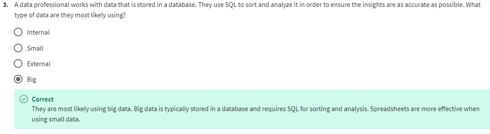
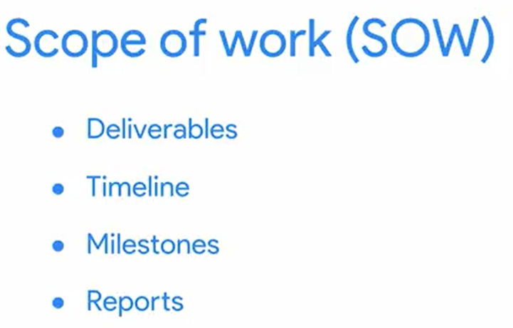
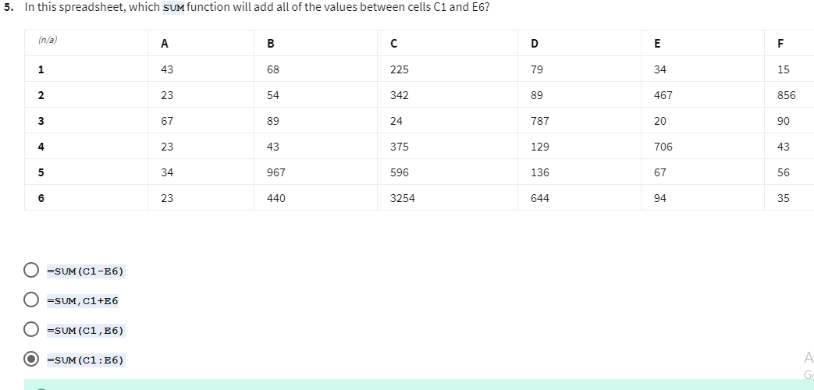
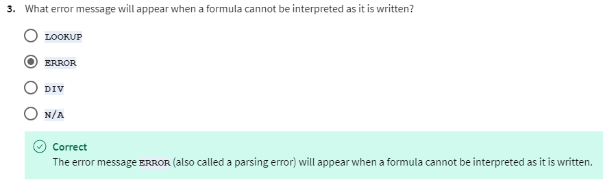
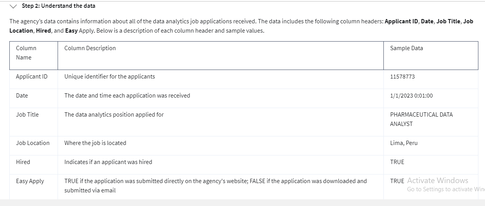
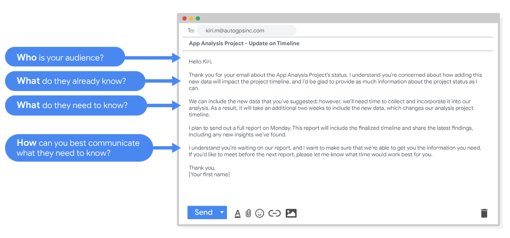

8 videos Total 35 minutes | The Transcript | The MCQs |
Introduction to problem-solving and effective questioning •3 minutes | - Welcome to the second course in the Google Data Analytics certificate.
- If you completed Course One, we met briefly at the beginning, but for those of you who are just joining us, my name is Ximena, and I'm a Google Finance data analyst.
- I think it's really wonderful that you're here with me learning about the fascinating field of data analytics.
- Learning and education have always been very important to me.
- When I was young, my mom always said, "I can't leave you an inheritance, but I can give you an education that opens doors."
- That always pushed me to keep learning, and that education gave me the confidence to apply for my job at Google.
- Now I get to do really meaningful work every day.
- Just recently I worked as an analyst on a team called Verily Life Sciences.
- We were helping to get life-saving medical supplies to those who need it most.
- To do this, we forecasted what health care professionals would need on hand and then shared that information with networks.
- The information that my team provided helped make data driven decisions that actually saved lives.
- I'm thrilled to be your instructor for this course.
- We're going to talk about the difference between effective and ineffective questions and learn how to ask great questions that lead to insights that can help you solve business problems.
- You will discover that effective questions help you to make the most of all the data analysis phases.
- You may remember that these phases include ask, prepare, process, analyze, share, and act.
- In the ask step, we define the problem we're solving and make sure that we fully understand stakeholder expectations.
- This will help keep you focused on the actual problem, which leads to more successful outcomes.
- So we'll begin this course by talking about problem solving and some of the common types of business problems that data analysts help solve.
- And because this course focuses on the ask phase, you'll learn how to craft effective questions that help you collect the right data to solve those problems.
- Next, we'll talk about the many different types of data.
- You'll learn how and when each is the most useful.
- You'll also get a chance to explore spreadsheets further and discover how they can help make your data analysis even more effective.
- And then we'll start learning about structured thinking.
- Structured thinking is the process of recognizing the current problem or situation, organizing available information, revealing gaps and opportunities, and identifying the options.
- In this process, you address a vague, complex problem by breaking it down into smaller steps, and then those steps lead you to a logical solution.
- We'll work together to be sure you fully understand how to use structured thinking and data analysis.
- Finally, we'll learn some proven strategies for communicating with others effectively.
- I can't wait to share more about my passion for data analytics with you, so let's get started.
| 1. Who is the instructor for the second course in the Google Data Analytics certificate program?A. Ximena, a Google Finance data analyst
B. Veronica, a Google Marketing specialist
C. Josh, a Google Software engineer
D. Alice, a Google Project manager
Answer: A. Ximena, a Google Finance data analyst 2. According to the transcript, what inspired Ximena to keep learning?A. Her boss at Google
B. Her best friend
C. Her mother, who emphasized the importance of education
D. Her coworkers at Verily Life Sciences
Answer: C. Her mother, who emphasized the importance of education 3. What is the key focus of the second course in the Google Data Analytics certificate?A. Understanding how to analyze data
B. Learning how to ask effective questions in the "ask" phase
C. Preparing data using spreadsheets
D. Implementing technical solutions in businesses
Answer: B. Learning how to ask effective questions in the "ask" phase 4. What does structured thinking help with, according to the transcript?A. Learning technical programming languages
B. Breaking down vague, complex problems into smaller steps
C. Visualizing data through spreadsheets
D. Preparing medical supplies for healthcare professionals
Answer: B. Breaking down vague, complex problems into smaller steps 5. What recent project did Ximena work on as a data analyst?A. A financial forecasting project for Google Finance
B. A marketing campaign for Google
C. A health project with Verily Life Sciences to get medical supplies to healthcare professionals
D. A sales prediction tool for a retail company
Answer: C. A health project with Verily Life Sciences to get medical supplies to healthcare professionals 6. In which phase of data analysis is the focus of this course?A. Process
B. Act
C. Analyze
D. Ask
Answer: D. Ask 7. Which of the following is NOT mentioned as part of structured thinking in the transcript?A. Organizing available information
B. Recognizing gaps and opportunities
C. Programming the solution
D. Identifying options to solve problems
Answer: C. Programming the solution 8. What will students learn to do in the "ask" phase of data analysis?A. Define the problem and understand stakeholder expectations
B. Create complex visualizations
C. Process large datasets using machine learning
D. Build dashboards to share results
Answer: A. Define the problem and understand stakeholder expectations 9. What is one of the key goals of effective communication mentioned in the course?A. Crafting complex questions
B. Building relationships with stakeholders
C. Making data analysis clearer and more understandable
D. Developing advanced coding skills
Answer: C. Making data analysis clearer and more understandable 10. What is the purpose of learning to ask effective questions in data analysis, as per the transcript?A. To improve data processing speed
B. To collect the right data to solve business problems
C. To enhance spreadsheet usage
D. To develop automated systems
Answer: B. To collect the right data to solve business problems |
Data in action •5 minutes | - In this video, I'm going to share an interesting data analytics case study, it will illustrate how problem solving relates to each phase of the data analysis process and shed some light on how these phases work in the real world.
- It's about a small business that used data to solve a unique problem it was facing.
- The business is called Anywhere Gaming Repair.
- It's a service provider that comes to you to fix your broken video game systems or accessories.
- The owner wanted to expand his business.
- He knew advertising is a proven way to get more customers, but he wasn't sure where to start.
- There are all kinds of different advertising strategies, including print, billboards, TV commercials, public transportation, podcasts, and radio.
- One of the key things to think about when choosing an advertising method is your target audience, in other words, the specific people you're trying to reach.
- For example, if a medical equipment manufacturer wanted to reach doctors, placing an ad in a health magazine would be a smart choice.
- Or if a catering company wanted to find new cooks, it might advertise using a poster at a bus stop near a cooking school.
- Both of these are great ways to get your ad seen by your target audience.
- The second thing to think about is your budget and how much the different advertising methods will cost.
- For instance, a TV ad is likely to be more expensive than a radio ad.
- A large billboard will probably cost more than a small poster on the back of a city bus.
- The business owner asked a data analyst, Maria, to make a recommendation.
- She started with the first step in the data analysis process, Ask.
- Maria began by defining the problem that needed to be solved.
- To do this, she first had to zoom out and look at the whole situation in context.
- That way she could be sure that she was focusing on the real problem and not just its symptoms.
- This leads us to another important part of the problem solving process, collaborating with stakeholders and understanding their needs.
- For Anywhere Gaming Repair, stakeholders included the owner, the vice president of communications, and the director of marketing and finance.
- Working together, Maria and the stakeholders agreed on the problem, not knowing their target audience's preferred type of advertising.
- Next step was the prepare phase, where Maria collected data for the upcoming analysis process.
- But first, she needed to better understand the company's target audience, people with video game systems.
- After that, Maria collected data on the different advertising methods.
- This way, she would be able to determine which was the most popular one with the company's target audience.
- Then she moved on to the process step.
- Here Maria cleaned the data to eliminate any errors or inaccuracies that could get in the way of the result.
- As we've learned, when you clean data, you transform it into a more useful format, create more complete information and remove outliers.
- Then it was time to analyze.
- In this step, Maria wanted to find out two things.
- First, who's most likely to own a video gaming system?
- Second, where are these people most likely to see an advertisement?
- Maria, first discovered that people between the ages of 18 and 34 are most likely to make video game related purchases.
- She could confirm that Anywhere Gaming Repair's target audience was people 18-34 years old.
- This was who they should be trying to reach.
- With this in mind, Maria then learned that both TV commercials and podcasts are very popular with people in the target audience.
- Because Maria knew Anywhere Gaming Repair had a limited budget and understanding the high cost of TV commercials, her recommendation was to advertise in podcasts because they are more cost-effective.
- Now that she had her analysis, it was time for Maria to share her recommendation so the company could make a data driven decision.
- She summarized her results using clear and compelling visuals of the analysis.
- This helped her stakeholders understand the solution to the original problem.
- Finally, Anywhere Gaming Repair took action, they worked with a local podcast production agency to create a 30 second ad about their services.
- The ad ran on podcast for a month, and it worked.
- They saw an increase in customers after just the first week.
- By the end of week 4, they had 85 new customers.
- There you go.
- Effective problem solving using data analysis phases in action.
- Now, you've seen how the six phases of data analysis can be applied to problem solving and how you can use that to solve real world problems.
| 1. What business did the data analyst, Maria, work with in the case study? - A) A medical equipment manufacturer
- B) A catering company
- C) Anywhere Gaming Repair
- D) A podcast production company
Answer: C) Anywhere Gaming Repair
2. What was the main problem that Anywhere Gaming Repair was facing? - A) Lack of funding for expansion
- B) Not knowing their target audience's preferred type of advertising
- C) Inaccurate customer data
- D) Poor communication with stakeholders
Answer: B) Not knowing their target audience's preferred type of advertising
3. What was the first step Maria took in the data analysis process? - A) Preparing the data for analysis
- B) Collecting data on advertising methods
- C) Defining the problem
- D) Cleaning the data
Answer: C) Defining the problem
4. Who were the stakeholders Maria collaborated with at Anywhere Gaming Repair? - A) Customers and suppliers
- B) The owner, vice president of communications, and director of marketing and finance
- C) The board of directors and shareholders
- D) The local podcast production agency
Answer: B) The owner, vice president of communications, and director of marketing and finance
5. What demographic did Maria identify as the target audience for Anywhere Gaming Repair? - A) People aged 25-50
- B) People aged 18-34
- C) People aged 35-50
- D) People under 18
Answer: B) People aged 18-34
6. Which two advertising methods were found to be most popular with Anywhere Gaming Repair's target audience? - A) Print and radio ads
- B) Billboards and TV commercials
- C) TV commercials and podcasts
- D) Posters and podcasts
Answer: C) TV commercials and podcasts
7. Why did Maria recommend advertising on podcasts instead of TV commercials? - A) Podcasts reach a larger audience
- B) TV commercials are more expensive, and the company had a limited budget
- C) Podcasts are easier to create
- D) TV commercials require complex data analysis
Answer: B) TV commercials are more expensive, and the company had a limited budget
8. What was the result of the podcast advertising campaign for Anywhere Gaming Repair? - A) The company saw no change in the number of customers
- B) They lost customers due to ineffective ads
- C) They gained 85 new customers by the end of week 4
- D) The ad was removed after a week
Answer: C) They gained 85 new customers by the end of week 4
9. In which phase of the data analysis process did Maria clean the data to eliminate errors and inaccuracies? - A) Prepare phase
- B) Process phase
- C) Analyze phase
- D) Act phase
Answer: B) Process phase
10. What was the final step Maria took in the data analysis process? - A) Analyzing the data
- B) Sharing her recommendation with stakeholders
- C) Conducting market research
- D) Collecting more data
Answer: B) Sharing her recommendation with stakeholders
|
Nikki: The data process works •2 minutes | - I'm Nikki and I manage the education, evaluation, assessment, and research team.
- My favorite part of the data analysis process is finding the hardest problem and asking a million questions about it and seeing if it's even possible to get an answer.
- One of the problems that we've tackled here at Google is our Noogler onboarding program, which is how we onboard new hires.
- One of the things that we've done is ask the question, how do we know whether or not Nooglers are onboarding faster through our new onboarding program than our old onboarding program where we used to lecture them.
- We worked really closely with the content providers to understand just exactly what does it mean to onboard someone faster?
- Once we asked all the questions, what we did is we prepared the data by understanding who was the population of the new hires that we were examining.
- We prepared our data by going through and understanding who our populations were, by understanding who our sample set was, who our control group was, who our experiment group was, where were our data sources, and make sure that it was in a set, in a format that was clean and digestible for us to write the proper scripts for.
- So the next step for us was to process the data to make sure that it was in a format that we could actually analyze in SQL, making sure that was in the right format, in the right columns, and in the right tables for us.
- To analyze the data, we wrote scripts in SQL and in R to correlate the data to the control group or the experiment group and interpret the data to understand, were there any changes in the behavioral indicators that we saw?
- Once we analyze all the data, we want to report on it in a way that our stakeholders could understand.
- Depending on who our stakeholders were, we prepared reports, dashboards and presentations, and shared that information out.
- Once all of our reports were complete, we saw really positive results and decided to act on it by continuing our project-based learning onboarding program.
- It was really satisfying to know that we have the data to support it and that it really, really worked.
- And not just that the data was there, but that we knew that our students were learning and that they were more productive, faster back on their jobs.
| What is Nikki's role at Google? - A) Data Scientist
- B) Education and Research Manager
- C) Software Engineer
- D) Project Manager
Answer: B) Education and Research Manager What aspect of the data analysis process does Nikki enjoy the most? - A) Collecting data
- B) Finding the hardest problem and asking many questions about it
- C) Writing reports
- D) Presenting findings to stakeholders
Answer: B) Finding the hardest problem and asking many questions about it What specific problem did Nikki's team work on regarding new hires? - A) Employee retention strategies
- B) The effectiveness of the Noogler onboarding program
- C) Job satisfaction of new hires
- D) Salary negotiations for new employees
Answer: B) The effectiveness of the Noogler onboarding program What was the primary question the team sought to answer about the Noogler onboarding program? - A) How satisfied are Nooglers with their onboarding experience?
- B) Are Nooglers onboarding faster through the new program compared to the old program?
- C) What are the costs associated with the onboarding program?
- D) How do Nooglers rate their trainers?
Answer: B) Are Nooglers onboarding faster through the new program compared to the old program? What did Nikki's team focus on when preparing the data? - A) Analyzing market trends
- B) Understanding the population of new hires, sample set, and data sources
- C) Collecting data from customer feedback
- D) Developing training materials
Answer: B) Understanding the population of new hires, sample set, and data sources Which programming languages did Nikki's team use to analyze the data? - A) Python and Java
- B) SQL and R
- C) C++ and Ruby
- D) JavaScript and HTML
Answer: B) SQL and R How did Nikki's team present their findings to stakeholders? - A) Through informal discussions
- B) By preparing reports, dashboards, and presentations
- C) Using social media platforms
- D) In a blog post
Answer: B) By preparing reports, dashboards, and presentations What was the outcome of Nikki's team's analysis of the Noogler onboarding program? - A) They found that the old program was more effective.
- B) They had no significant results to report.
- C) They saw positive results and decided to continue the new onboarding program.
- D) They recommended discontinuing the onboarding program altogether.
Answer: C) They saw positive results and decided to continue the new onboarding program. |
Common problem types •5 minutes | - In a previous video, I shared how data analysis helped a company figure out where to advertise its services.
- An important part of this process was strong problem-solving skills.
- As a data analyst, you'll find that problems are at the center of what you do every single day, but that's a good thing.
- Think of problems as opportunities to put your skills to work and find creative and insightful solutions.
- Problems can be small or large, simple or complex, no problem is like another and they all require a slightly different approach but the first step is always the same: Understanding what kind of problem you're trying to solve and that's what we're going to talk about now.
- Data analysts work with a variety of problems.
- In this video, we're going to focus on six common types.
- These include: making predictions, categorizing things, spotting something unusual, identifying themes, discovering connections, and finding patterns.
- Let's define each of these now.
- First, making predictions.
- This problem type involves using data to make an informed decision about how things may be in the future.
- For example, a hospital system might use a remote patient monitoring to predict health events for chronically ill patients.
- The patients would take their health vitals at home every day, and that information combined with data about their age, risk factors, and other important details could enable the hospital's algorithm to predict future health problems and even reduce future hospitalizations.
- The next problem type is categorizing things.
- This means assigning information to different groups or clusters based on common features.
- An example of this problem type is a manufacturer that reviews data on shop floor employee performance.
- An analyst may create a group for employees who are most and least effective at engineering.
- A group for employees who are most and least effective at repair and maintenance, most and least effective at assembly, and many more groups or clusters.
- Next, we have spotting something unusual.
- In this problem type, data analysts identify data that is different from the norm.
- An instance of spotting something unusual in the real world is a school system that has a sudden increase in the number of students registered, maybe as big as a 30 percent jump in the number of students.
- A data analyst might look into this upswing and discover that several new apartment complexes had been built in the school district earlier that year.
- They could use this analysis to make sure the school has enough resources to handle the additional students.
- Identifying themes is the next problem type.
- Identifying themes takes categorization as a step further by grouping information into broader concepts.
- Going back to our manufacturer that has just reviewed data on the shop floor employees.
- First, these people are grouped by types and tasks.
- But now a data analyst could take those categories and group them into the broader concept of low productivity and high productivity.
- This would make it possible for the business to see who is most and least productive, in order to reward top performers and provide additional support to those workers who need more training.
- Now, the problem type of discovering connections enables data analysts to find similar challenges faced by different entities, and then combine data and insights to address them.
- Here's what I mean; say a scooter company is experiencing an issue with the wheels it gets from its wheel supplier.
- That company would have to stop production until it could get safe, quality wheels back in stock.
- But meanwhile, the wheel companies encountering the problem with the rubber it uses to make wheels, turns out its rubber supplier could not find the right materials either.
- If all of these entities could talk about the problems they're facing and share data openly, they would find a lot of similar challenges and better yet, be able to collaborate to find a solution.
- The final problem type is finding patterns.
- Data analysts use data to find patterns by using historical data to understand what happened in the past and is therefore likely to happen again.
- Ecommerce companies use data to find patterns all the time.
- Data analysts look at transaction data to understand customer buying habits at certain points in time throughout the year.
- They may find that customers buy more canned goods right before a hurricane, or they purchase fewer cold-weather accessories like hats and gloves during warmer months.
- The ecommerce companies can use these insights to make sure they stock the right amount of products at these key times.
- Alright, you've now learned six basic problem types that data analysts typically face.
- As a future data analyst, this is going to be valuable knowledge for your career.
- Coming up, we'll talk a bit more about these problem types and I'll provide even more examples of them being solved by data analysts.
- Personally, I love real-world examples.
- They really help me better understand new concepts.
- I can't wait to share even more actual cases with you.
- See you there.
| What is a key aspect of data analysis mentioned in the video? - A) Data collection techniques
- B) Strong problem-solving skills
- C) Software programming
- D) Social media marketing
Answer: B) Strong problem-solving skills What does the speaker encourage data analysts to view problems as? - A) Obstacles to success
- B) Opportunities to apply skills
- C) Unnecessary distractions
- D) Limitations on their work
Answer: B) Opportunities to apply skills Which of the following is NOT one of the six common types of problems faced by data analysts? - A) Making predictions
- B) Identifying themes
- C) Improving employee morale
- D) Finding patterns
Answer: C) Improving employee morale What is the focus of the "making predictions" problem type? - A) Understanding historical data
- B) Assigning information to groups
- C) Using data to forecast future events
- D) Identifying unusual data points
Answer: C) Using data to forecast future events In the context of categorizing things, what might a data analyst do for a manufacturer reviewing employee performance? - A) Analyze market trends
- B) Create groups based on effectiveness in various tasks
- C) Develop training programs for all employees
- D) Conduct exit interviews with employees
Answer: B) Create groups based on effectiveness in various tasks What does spotting something unusual involve? - A) Finding data that is consistent with previous trends
- B) Identifying data that deviates from the norm
- C) Categorizing information into groups
- D) Predicting future outcomes based on past data
Answer: B) Identifying data that deviates from the norm How does identifying themes differ from categorizing things? - A) It involves creating groups for employees.
- B) It takes categorization further by grouping information into broader concepts.
- C) It is focused on statistical analysis.
- D) It only applies to market research.
Answer: B) It takes categorization further by grouping information into broader concepts. What example illustrates the problem type of discovering connections? - A) Analyzing employee productivity rates
- B) A scooter company and its wheel supplier facing similar production issues
- C) Identifying customer buying habits
- D) Making predictions about future sales
Answer: B) A scooter company and its wheel supplier facing similar production issues Which problem type involves using historical data to find trends and behaviors? - A) Finding patterns
- B) Categorizing things
- C) Spotting something unusual
- D) Identifying themes
Answer: A) Finding patterns Why does the speaker emphasize the importance of real-world examples in data analysis? - A) They are easier to remember than theoretical concepts.
- B) They help better understand new concepts.
- C) They provide entertainment value.
- D) They are less complex than theoretical examples.
Answer: B) They help better understand new concepts. |
Continue exploring business applications •6 minutes | - You've been learning about six common problem types of data analysts encounter, making predictions, categorizing things, spotting something unusual, identifying themes, discovering connections, and finding patterns.
- Let's think back to our real world example from a previous video.
- In that example, anywhere gaming repair wanted to figure out how to bring in new customers.
- So the problem was, how to determine the best advertising method for anywhere gaming repair's target audience.
- To help solve this problem, the company used data to envision what would happen if it advertised in different places.
- Now nobody can see the future but the data helped them make an informed decision about how things would likely work out.
- So, their problem type was making predictions.
- Now let's think about the second problem type, categorizing things.
- Here's an example of a problem that involves categorization.
- Let's say a business wants to improve its customer satisfaction levels.
- Data analysts could review recorded calls to the company's customer service department and evaluate the satisfaction levels of each caller.
- They could identify certain key words or phrases that come up during the phone calls and then assign them to categories such as politeness, satisfaction, dissatisfaction, empathy, and more.
- Categorizing these key words gives us data that lets the company identify top performing customer service representatives, and those who might need more coaching.
- This leads to happier customers and higher customer service scores.
- Okay, now let's talk about a problem that involves spotting something unusual.
- Some of you may have a smart watch, my favorite app is for health tracking.
- These apps can help people stay healthy by collecting data such as their heart rate, sleep patterns, exercise routine, and much more.
- There are many stories out there about health apps actually saving people's lives.
- One is about a woman who was young, athletic, and had no previous medical problems.
- One night she heard a beep on her smartwatch, a notification said her heart rate had spiked.
- Now in this example think of the watch as a data analyst.
- The watch was collecting and analyzing health data.
- So when her resting heart rate was suddenly 120 beats per minute, the watch spotted something unusual because according to its data, the rate was normally around 70.
- Thanks to the data her smart watch gave her, the woman went to the hospital and discovered she had a condition which could have led to life threatening complications if she hadn't gotten medical help.
- Now let's move on to the next type of problem: identifying themes.
- We see a lot of examples of this in the user experience field.
- User experience designers study and work to improve the interactions people have with products they use every day.
- Let's say a user experience designer wants to see what customers think about the coffee maker his company manufactures.
- This business collects anonymous survey data from users, which can be used to answer this question.
- But first to make sense of it all, he will need to find themes that represent the most valuable data, especially information he can use to make the user experience even better.
- So the problem the user experience designer's company faces, is how to improve the user experience for its coffee makers.
- The process here is kind of like finding categories for keywords and phrases in customer service conversations.
- But identifying themes goes even further by grouping each insight into a broader theme.
- Then the designer can pinpoint the themes that are most common.
- In this case he learned users often couldn't tell if the coffee maker was on or off.
- He ended up optimizing the design with improved placement and lighting for the on/off button, leading to the product improvement and happier users.
- Now we come to the problem of discovering connections.
- This example is from the transportation industry and uses something called third party logistics.
- Third party logistics partners help businesses ship products when they don't have their own trucks, planes or ships.
- A common problem these partners face is figuring out how to reduce wait time.
- Wait time happens when a truck driver from the third party logistics provider arrives to pick up a shipment but it's not ready.
- So she has to wait.
- That costs both companies time and money and it stops trucks from getting back on the road to make more deliveries.
- So how can they solve this?
- Well, by sharing data the partner companies can view each other's timelines and see what's causing shipments to run late.
- Then they can figure out how to avoid those problems in the future.
- So a problem for one business doesn't cause a negative impact for the other.
- For example, if shipments are running late because one company only delivers Mondays, Wednesdays and Fridays, and the other company only delivers Tuesdays and Thursdays, then the companies can choose to deliver on the same day to reduce wait time for customers.
- All right, we've come to our final problem type, finding patterns.
- Oil and gas companies are constantly working to keep their machines running properly.
- So the problem is, how to stop machines from breaking down.
- One way data analysts can do this is by looking at patterns in the company's historical data.
- For example, they could investigate how and when a particular machine broke down in the past and then generate insights into what led to the breakage.
- In this case, the company saw pattern indicating that machines began breaking down at faster rates when maintenance wasn't kept up in 15 day cycles.
- They can then keep track of current conditions and intervene if any of these issues happen again.
- Pretty cool, right? I'm always amazed to hear about how data helps real people and businesses make meaningful change.
- I hope you are too.
- See you soon.
| What problem type was involved when Anywhere Gaming Repair used data to determine the best advertising method for their target audience? - A) Categorizing things
- B) Spotting something unusual
- C) Making predictions
- D) Finding patterns
Answer: C) Making predictions Which example represents the problem type of categorizing things? - A) A smartwatch detects an unusually high heart rate.
- B) A company uses data to predict the best places to advertise.
- C) A business classifies customer service calls based on keywords such as politeness or satisfaction.
- D) A logistics company analyzes shipment schedules to reduce wait times.
Answer: C) A business classifies customer service calls based on keywords such as politeness or satisfaction. What is an example of spotting something unusual, as described in the transcript? - A) A user experience designer identifies themes in customer feedback.
- B) A smartwatch detects a sudden spike in a user’s heart rate.
- C) A company uses historical data to predict machine breakdowns.
- D) A business categorizes customer service calls based on satisfaction levels.
Answer: B) A smartwatch detects a sudden spike in a user’s heart rate. In the transcript, what problem type involves grouping insights into broader themes to improve product design? - A) Making predictions
- B) Categorizing things
- D) Discovering connections
Answer: C) Identifying themes Which industry example was used to illustrate the problem type of discovering connections? - A) A company predicting the best places to advertise.
- B) A user experience designer improving a coffee maker.
- C) A logistics company working with partners to reduce wait times.
- D) A company tracking machine maintenance to prevent breakdowns.
Answer: C) A logistics company working with partners to reduce wait times. What did the oil and gas company do to solve the problem of machine breakdowns? - A) Categorized breakdowns based on their cause.
- B) Spotted unusual events in machine performance.
- C) Identified themes in machine maintenance schedules.
- D) Found patterns in historical data related to breakdown timing.
Answer: D) Found patterns in historical data related to breakdown timing. What solution did the user experience designer in the transcript come up with to improve the coffee maker? - A) Introduced better customer service training.
- B) Optimized the design of the on/off button.
- C) Predicted user preferences for future products.
- D) Discovered connections between different user complaints.
Answer: B) Optimized the design of the on/off button. How did the logistics companies reduce wait times for shipments? - A) By categorizing shipment types.
- B) By analyzing customer satisfaction data.
- C) By sharing data to align delivery schedules.
- D) By predicting future shipment volumes.
Answer: C) By sharing data to align delivery schedules. Which problem type involves using historical data to predict future outcomes, as mentioned in the transcript? - A) Spotting something unusual
- C) Finding patterns
- D) Identifying themes
Answer: B) Making predictions What pattern did the oil and gas company find in their data regarding machine maintenance? - A) Machines were most likely to break down during winter months.
- B) Machines broke down more often if maintenance wasn’t performed within 15-day cycles.
- C) Machines broke down due to unusual spikes in temperature.
- D) Machines broke down when operated by untrained workers.
Answer: B) Machines broke down more often if maintenance wasn’t performed within 15-day cycles. |
Anmol: From hypothesis to outcome •2 minutes | - Hi, I'm Anmol.
- I'm the Head of Large Advertiser Marketing Analytics within the Marketing Team at Google.
- At its core, my job is about connecting the right user with the right message at the right time.
- The first step is really to get a broad sense of the certain pattern that's occurring.
- So for example, we know that this particular segment of users is more responsive to this type of content.
- Once we're able to actually see this hypothesis through the data, we do testing to ensure that the hypothesis is actually correct.
- So for example, we would test sending these pieces of content to this segment of users, and actually verify within a controlled environment whether that response rate is actually higher for that type of content, or whether it isn't.
- Once we're able to actually verify that hypothesis, we go back to the stakeholders, in this case, our marketers, and say, we've proven within a relatively high degree of certainty that this particular segment is more responsive to this type of content, and because of that, we're recommending that you produce more of this type of content.
- Our stakeholders really get to see the whole evolution from hypothesis to proven concept, and they're able to come with us on the journey on how we're proving out these hypotheses and then eventually turning them into strategies and recommendations for the business.
- The outcome in this case was that we were able to actually change the way our whole marketing team worked to actually make it much more user-centric.
- Instead of, from our perspective, coming up with content that we think the users need, we're actually going in the other direction of figuring out what users need first, proving that they need certain things or they don't need certain things, and then using that information going back to marketers and coming up with content that fulfills their need.
- So it really changed the direction of how we produce things.
| What is the primary role of Anmol as Head of Large Advertiser Marketing Analytics at Google? Answer: B) To connect the right user with the right message at the right time What is the first step in Anmol's data analysis process? - A) Testing different marketing strategies
- B) Gathering stakeholder feedback
- D) Creating new marketing content based on user preferences
Answer: C) Identifying a pattern occurring within user segments How does Anmol verify that a hypothesis about user response to content is correct? - A) By sending surveys to users
- B) By creating new types of content for all users
- D) By asking marketers for feedback
Answer: C) By conducting tests in a controlled environment Once the hypothesis is verified, what is the next step for Anmol's team? - A) Create new advertising content based on guesses
- B) Report the findings to users directly
- D) Discard the hypothesis and start over
Answer: C) Go back to stakeholders (marketers) and provide recommendations What was the key change in the marketing team's approach after implementing Anmol’s data-driven strategies? - A) They began producing content based on assumptions
- B) They started focusing more on traditional marketing
- D) They increased the volume of content produced without considering user needs
Answer: C) They became more user-centric by creating content based on proven user needs What was the outcome of using data to understand user preferences for content? - A) The company stopped testing hypotheses
- B) Marketers designed content that they thought users would like
- D) Stakeholders ignored the data-driven insights
Answer: C) The team shifted from guessing user needs to validating them through data Which of the following best describes the approach taken by Anmol's team in marketing strategy? - A) Content is created based on marketer intuition.
- C) Users are ignored, and the focus is solely on advertising.
- D) All users receive the same content regardless of preferences.
Answer: B) Content is developed after analyzing and validating user needs through data What is the significance of hypothesis testing in Anmol’s work? - A) To create more content regardless of user needs
- C) To prove that all marketing content is effective
- D) To reduce the number of content pieces produced
Answer: B) To validate assumptions about user preferences using data How did the process change the marketing team's content production? - A) They produced less content overall.
- B) They guessed what users needed and made content accordingly.
- D) They ignored user data and focused only on trends.
Answer: C) They created content that was directly based on proven user needs What is the benefit of involving stakeholders in the data analysis process? - A) Stakeholders can create their own marketing content
- B) Stakeholders can guess user needs more accurately
- D) Stakeholders can reduce the budget based on their understanding
Answer: C) Stakeholders can follow the process from hypothesis to strategy and make informed decisions |
SMART questions •7 minutes | - Now that we've talked about six basic problem types, it's time to start solving them.
- To do that, data analysts start by asking the right questions.
- In this video, we're going to learn how to ask effective questions that lead to key insights you can use to solve all kinds of problems.
- As a data analyst, I ask questions constantly.
- It's a huge part of the job.
- If someone requests that I work on a project, I ask questions to make sure we're on the same page about the plan and the goals.
- And when I do get a result, I question it.
- Is the data showing me something superficially? Is there a conflict somewhere that needs to be resolved? The more questions you ask, the more you'll learn about your data and the more powerful your insights will be at the end of the day.
- Some questions are more effective than others.
- Let's say you're having lunch with a friend and they say, "These are the best sandwiches ever, aren't they?"
- Well, that question doesn't really give you the opportunity to share your own opinion, especially if you happen to disagree and didn't enjoy the sandwich very much.
- This is called a leading question because it's leading you to answer in a certain way.
- Or maybe you're working on a project and you decide to interview a family member.
- Say you ask your uncle, did you enjoy growing up in Malaysia? He may reply, "Yes."
- But you haven't learned much about his experiences there.
- Your question was closed-ended.
- That means it can be answered with a yes or no.
- These kinds of questions rarely lead to valuable insights.
- Now what if someone asks you, do you prefer chocolate or vanilla? Well, what are they specifically talking about? Ice cream, pudding, coffee flavoring or something else?
- What if you like chocolate ice cream but vanilla in your coffee? What if you don't like either flavor? That's the problem with this question.
- It's too vague and lacks context.
- Knowing the difference between effective and ineffective questions is essential for your future career as a data analyst.
- After all, the data analyst process starts with the ask phase.
- So it's important that we ask the right questions.
- Effective questions follow the SMART methodology.
- That means they're specific, measurable, action-oriented, relevant and time-bound.
- Let's break that down.
- Specific questions are simple, significant and focused on a single topic or a few closely related ideas.
- This helps us collect information that's relevant to what we're investigating.
- If a question is too general, try to narrow it down by focusing on just one element.
- For example, instead of asking a closed-ended question, like, are kids getting enough physical activities these days?
- Ask what percentage of kids achieve the recommended 60 minutes of physical activity at least five days a week?
- That question is much more specific and can give you more useful information.
- Now, let's talk about measurable questions.
- Measurable questions can be quantified and assessed.
- An example of an unmeasurable question would be, why did a recent video go viral?
- Instead, you could ask how many times was our video shared on social channels the first week it was posted?
- That question is measurable because it lets us count the shares and arrive at a concrete number.
- Okay, now we've come to action-oriented questions.
- Action-oriented questions encourage change.
- You might remember that problem solving is about seeing the current state and figuring out how to transform it into the ideal future state.
- Well, action-oriented questions help you get there.
- So rather than asking, how can we get customers to recycle our product packaging?
- You could ask, what design features will make our packaging easier to recycle?
- This brings you answers you can act on.
- All right, let's move on to relevant questions.
- Relevant questions matter, are important and have significance to the problem you're trying to solve.
- Let's say you're working on a problem related to a threatened species of frog.
- And you asked, why does it matter that Pine Barrens tree frogs started disappearing?
- This is an irrelevant question because the answer won't help us find a way to prevent these frogs from going extinct.
- A more relevant question would be, what environmental factors changed in Durham, North Carolina between 1983 and 2004 that could cause Pine Barrens tree frogs to disappear from the Sandhills Regions?
- This question would give us answers we can use to help solve our problem.
- That's also a great example for our final point, time-bound questions.
- Time-bound questions specify the time to be studied.
- The time period we want to study is 1983 to 2004.
- This limits the range of possibilities and enables the data analyst to focus on relevant data.
- Okay, now that you have a general understanding of SMART questions, there's something else that's very important to keep in mind when crafting questions,fairness.
- We've touched on fairness before, but as a quick reminder, fairness means ensuring that your questions don't create or reinforce bias.
- To talk about this, let's go back to our sandwich example.
- There we had an unfair question because it was phrased to lead you toward a certain answer.
- This made it difficult to answer honestly if you disagreed about the sandwich quality.
- Another common example of an unfair question is one that makes assumptions.
- For instance, let's say a satisfaction survey is given to people who visit a science museum.
- If the survey asks, what do you love most about our exhibits?
- This assumes that the customer loves the exhibits which may or may not be true.
- Fairness also means crafting questions that make sense to everyone.
- It's important for questions to be clear and have a straightforward wording that anyone can easily understand.
- Unfair questions also can make your job as a data analyst more difficult.
- They lead to unreliable feedback and missed opportunities to gain some truly valuable insights.
- You've learned a lot about how to craft effective questions, like how to use the SMART framework while creating your questions and how to ensure that your questions are fair and objective.
- Moving forward, you'll explore different types of data and learn how each is used to guide business decisions.
- You'll also learn more about visualizations and how metrics or measures can help create success.
- It's going to be great!
| Why is asking questions an essential part of a data analyst's job? - A) It helps generate more data.
- B) It ensures the data analyst is always curious.
- C) It leads to better insights and understanding of data.
- D) It allows the data analyst to work independently.
Answer: C) It leads to better insights and understanding of data. What is a "leading question"? - A) A question that provides too much context.
- B) A question that limits the respondent's answer to a single word.
- C) A question that pushes the respondent toward a particular answer.
- D) A question that requires a detailed response.
Answer: C) A question that pushes the respondent toward a particular answer. What type of question is, "Did you enjoy growing up in Malaysia?" - C) Vague question
- D) Specific question
Answer: B) Closed-ended question Why are vague questions less effective in data analysis? - A) They require too much effort to answer.
- B) They can lead to unclear or incomplete answers.
- C) They make it difficult to gather large amounts of data.
- D) They always lead to inaccurate data.
Answer: B) They can lead to unclear or incomplete answers. Which of the following is an example of a specific question based on the SMART methodology? - A) Do kids get enough exercise?
- B) How many kids play sports every day?
- C) What percentage of kids achieve 60 minutes of physical activity five days a week?
Answer: C) What percentage of kids achieve 60 minutes of physical activity five days a week? What makes a question "measurable" according to the SMART methodology? - A) It can be answered with a "yes" or "no."
- B) It asks about specific numerical data or quantities.
- C) It allows multiple interpretations.
- D) It focuses on a broad topic.
Answer: B) It asks about specific numerical data or quantities. Which of the following is an example of an action-oriented question? - A) Why don’t people recycle our packaging?
- B) How can we get more customers?
- C) What design features will make our packaging easier to recycle?
- D) What makes customers happy?
Answer: C) What design features will make our packaging easier to recycle? What characteristic makes a question relevant in the context of problem-solving? - A) It focuses on a current trending topic.
- B) It relates directly to solving the specific problem at hand.
- C) It is broad enough to apply to different situations.
- D) It has a "yes" or "no" answer.
Answer: B) It relates directly to solving the specific problem at hand. What does a "time-bound" question specify? - A) The timeframe for collecting data.
- B) The deadline for solving the problem.
- C) The specific time period being studied.
- D) The urgency of the question.
Answer: C) The specific time period being studied. Why is it important for questions to be fair when gathering data? - A) Fair questions are more difficult to ask.
- B) Fair questions generate more answers.
- C) Fair questions lead to more reliable and objective data.
- D) Fair questions ensure that data collection is quick.
Answer: C) Fair questions lead to more reliable and objective data. What is an example of an unfair question? - A) What did you like most about our product?
- B) What design features would you improve in our product?
- C) What do you love most about our exhibits?
- D) How many customers liked our product last year?
Answer: C) What do you love most about our exhibits? Why are unfair questions problematic for data analysts? - A) They require more time to answer.
- B) They limit the amount of data collected.
- C) They lead to unreliable feedback and missed insights.
- D) They create too much data for analysis.
Answer: C) They lead to unreliable feedback and missed insights. |
Evan: Data opens doors •2 minutes | - Hi, I'm Evan.
- I'm a learning portfolio manager here at Google, and I have one of the coolest jobs in the world where I get to look at all the different technologies that affect big data and then work them into training courses like this one for students to take.
- I wish I had a course like this when I was first coming out of college or high school.
- It was honestly a data analyst course that's geared in the way like this one is if you've already taken some of the videos really prepares you to do anything you want.
- It will open all of those doors that you want for any of those roles inside of the data curriculum.
- Well, what are some of those roles?
- There are so many different career paths for someone who's interested in data.
- Generally, if you're like me, you'll come in through the door as a data analyst maybe working with spreadsheets, maybe working with small, medium, and large databases, but all you have to remember is 3 different core roles.
- Now there's many in special, whether specialties, within each of these different careers, but these three are the data analysts, which is generally someone who works with SQL, spreadsheets, databases, might work as a business intelligence team creating those dashboards.
- Now where does all that data come from?
- Generally, a data analyst will work with a data engineer to turn that raw data into actionable pipelines.
- So you have data analysts, data engineers, and then lastly, you might have data scientists who basically say the data engineers have built these beautiful pipelines.
- Sometimes the analyst do that too.
- The analysts have provided us with clean and actionable data.
- Then the data scientists then worked actually to turn it into really cool machine learning models or statistical inferences that are just well beyond anything you could have ever imagined.
- We'll share a lot of resources in links for ways that you can get excited for each of these different roles.
- And the best part is, if you're like me when I went into school, I didn't know what I wanted to do and you don't have to know at the outset which path you want to go down.
- Try 'em all.
- See what you really, really like.
- It's very personal.
- Becoming a data analyst is so exciting.
- Why?
- Because it's not just like a means to an end.
- It's just taking a career path where so many bright people have gone before and have made the tools and technologies that much easier for you and me today.
- For example, when I was starting to learn SQL or the structured query language that you're going to be learning as part of this course, I was doing it on my local laptop and each of the queries would take like 20, 30 minutes to run and it was very hard for me to keep track of different SQL statements that I was writing or share them with somebody else.
- That was about 10 or 15 years ago.
- Now, through all the different companies and all the different tools that are making data analysis tools and technologies easier for you, you're going to have a blast creating these insights with a lot less of the overhead that I had when I first started out.
- So I'm really excited to hear what you think and what your experience is going to be.
| 1. Who is Evan, and what is his role at Google? a) Data Scientist
b) Learning Portfolio Manager
c) Data Analyst
d) Business Intelligence Manager Answer: b) Learning Portfolio Manager
2. According to Evan, what is one of the core roles in the field of data? a) Data Manager
b) Data Engineer
c) Business Strategist
d) Data Developer Answer: b) Data Engineer
3. What do data engineers primarily do, according to Evan? a) Create machine learning models
b) Work with SQL and databases
c) Turn raw data into actionable pipelines
d) Build dashboards for business intelligence Answer: c) Turn raw data into actionable pipelines
4. What is one of the key tasks of a data analyst? a) Creating machine learning models
b) Designing SQL languages
c) Cleaning and analyzing data
d) Building data pipelines Answer: c) Cleaning and analyzing data
5. Which of the following is NOT a core role mentioned by Evan in the data field? a) Data Scientist
b) Data Analyst
c) Data Engineer
d) Data Developer Answer: d) Data Developer
6. What does Evan suggest students do when exploring different data career paths? a) Choose one career path from the beginning
b) Specialize in machine learning
c) Try all roles to see what they enjoy
d) Focus only on data analysis Answer: c) Try all roles to see what they enjoy
7. According to Evan, how has learning SQL changed over the years? a) It has become slower
b) Queries now take more time to run
c) The tools have become easier and faster to use
d) It is harder to track SQL statements now Answer: c) The tools have become easier and faster to use
8. What does Evan describe as an exciting aspect of becoming a data analyst? a) The ability to work alone
b) The wide range of available tools and technologies
c) The limited career options
d) The requirement to specialize early Answer: b) The wide range of available tools and technologies
9. What does Evan say about machine learning models? a) They are created by data engineers
b) They are created by data scientists
c) They are created by data analysts
d) They are not used in modern data analysis Answer: b) They are created by data scientists
10. How did Evan's experience learning SQL differ from today’s learning environment? a) He used cloud-based tools for data storage
b) His SQL queries ran quickly and easily
c) He faced longer query execution times and difficulty sharing code
d) He used real-time collaboration tools for SQL Answer: c) He faced longer query execution times and difficulty sharing code |
|
|
|
6 readings Total 110 minutes |
|
|
Course 2 overview: Set your expectations •20 minutes | Course 2 overview: Set your expectationsHello, and welcome to the second course of the Google Data Analytics Certificate program. You’re on an exciting journey! In this part of the program, you’ll learn how data analysts use structured thinking to solve business problems. Then, you’ll explore how to ask effective questions and use the answers to tell a meaningful story about data. Finally, you’ll discover strategies for effectively communicating and collaborating with your stakeholders when defining a problem and presenting data insights. This will enable you to support and advance business goals with data!
Course Overview- Foundations: Data, Data, Everywhere
- Ask Questions to Make Data-Driven Decisions (this course)
- Prepare Data for Exploration
- Process Data from Dirty to Clean
- Analyze Data to Answer Questions
- Share Data Through the Art of Visualization
- Data Analysis with R Programming
- Google Data Analytics Capstone: Complete a Case Study
Course 2 contentEach course is broken into modules. Here’s a quick overview of the skills you’ll gain in each of the four Course 2 modules. Module 1: Ask effective questionsData analysts are constantly asking questions in order to find solutions and identify business potential. In this part of the course, you’ll learn about effective questioning techniques that will help guide your analysis. Module 2: Make data-driven decisionsIn analytics, data drives decision-making, and this is your opportunity to explore data of all kinds and its impact on all sorts of business decisions. You’ll also learn how to effectively share your data through reports and dashboards. Module 3: Spreadsheet magicSpreadsheets are a key data analytics tool. Here you’ll learn both why and how data analysts use spreadsheets in their work. You’ll also investigate how structured thinking helps analysts understand problems and come up with solutions. Module 4: Always remember the stakeholderSuccessful data analysts balance the needs and expectations of their team and the stakeholders they support. In this part of the course, you’ll learn strategies for managing stakeholder expectations while establishing clear communication with your team. What to expectEach course offers many types of learning opportunities: - Videos for instructors to teach new concepts and demonstrate the use of tools
- In-video questions that pop up from time to time to help you to check your understanding of key concepts and skills
- Step-by-step guides you can use to follow along with instructors as they demonstrate tools
- Readings to explore topics more in-depth and build on the concepts from the videos
- Discussion forums to share, explore, and reinforce lesson topics
- Discussion prompts to promote thinking and engagement in the discussion forums
- Practice quizzes to prepare you for graded quizzes
- Graded quizzes to measure your progress and give you valuable feedback
This program was designed to let you work at your own pace—your personalized deadlines are just a guide. There is no penalty for late assignments. To earn your certificate, you simply need to complete all of the work. If you miss two assessment deadlines in a row, or if you miss an assessment deadline by two weeks, you'll see a Reset deadlines option on the Grades page. Click it to switch to a new course schedule with updated deadlines. You can use this option as many times as you need—it won’t remove any progress you’ve already made in the course, but you may find new course content if the instructor updated the course after you started. If you cancel a subscription and then reactivate it, your deadlines will automatically reset. In this course, you'll be assessed with quizzes that are based on the wide variety of learning materials and activities that reinforce the important skills you’ll develop. Both types of quizzes can be taken more than once. Tips for success- It is strongly recommended that you go through the items in each lesson in the order they appear because new information and concepts build on previous knowledge.
- Participate in all learning opportunities to gain as much knowledge and experience as possible.
- If something is confusing, don’t hesitate to replay a video, review a reading, or repeat a self-review activity.
- Use the additional resources that are referenced in this course. They are designed to support your learning. You can find all of these resources in the Resources tab.
- When you encounter useful links in this course, bookmark them so you can refer to the information later for study or review.
- Understand and follow the Coursera Code of Conduct to ensure that the learning community remains a welcoming, friendly, and supportive place for all members.
Congratulations on choosing to become part of the wonderful world of data analytics! Updates to the course As you complete this course, you may notice updates to the content, like new practice materials and additional examples. These updates ensure the program provides up-to-date skills and guidance that will help you in your data analytics career. If you previously completed a graded activity, you may need to repeat the assessment in order to complete this course. For more information, check out the course discussion forum. | 1. What is the primary focus of Course 2 in the Google Data Analytics Certificate program?A. Analyzing data with R programming
B. Asking effective questions and solving business problems
C. Preparing and cleaning data
D. Visualizing data with dashboards
Answer: B. Asking effective questions and solving business problems 2. Which of the following skills will be covered in Module 3 of Course 2?A. Creating dashboards and reports
B. Managing stakeholder expectations
C. Using spreadsheets for data analysis
D. Preparing data for exploration
Answer: C. Using spreadsheets for data analysis 3. What is a key concept introduced in Module 4 of Course 2?A. Structured thinking and problem-solving
B. Crafting data-driven reports
C. Managing stakeholder expectations and clear communication
D. Cleaning and organizing data
Answer: C. Managing stakeholder expectations and clear communication 4. Which learning resource is NOT mentioned as part of Course 2?A. Step-by-step guides
B. Videos and in-video questions
C. One-on-one mentoring sessions
D. Discussion forums and prompts
Answer: C. One-on-one mentoring sessions 5. How is Course 2 structured?A. It is split into five modules, each with graded quizzes
B. It is organized into four modules, each focusing on different skills
C. It includes three modules focused on analyzing and cleaning data
D. It is based on real-world case studies from start to finish
Answer: B. It is organized into four modules, each focusing on different skills 6. What is strongly recommended for success in Course 2?A. Completing graded quizzes first before engaging with videos
B. Participating in each lesson item in the order they appear
C. Finishing the course before taking any quizzes
D. Skipping additional resources to save time
Answer: B. Participating in each lesson item in the order they appear 7. What happens if you miss two assessment deadlines in a row or by more than two weeks?A. You will lose all progress made in the course
B. You will need to restart the course from the beginning
C. You will be offered the option to reset deadlines
D. You will automatically fail the course
Answer: C. You will be offered the option to reset deadlines 8. What should you do if you encounter a confusing topic in the course?A. Skip the topic and move on to the next one
B. Replay the video, review the reading, or repeat a self-review activity
C. Wait until the final exam to address any confusion
D. Ask a mentor for a private session
Answer: B. Replay the video, review the reading, or repeat a self-review activity 9. What is the purpose of updates to the course content?A. To add new instructors to the program
B. To ensure the program provides up-to-date skills and guidance
C. To reduce the amount of practice materials
D. To extend the overall duration of the course
Answer: B. To ensure the program provides up-to-date skills and guidance 10. Which of the following is true about the quizzes in Course 2?A. Quizzes can only be taken once
B. Quizzes are only based on videos and discussion forums
C. Quizzes can be taken multiple times
D. Quizzes have strict deadlines that cannot be reset
Answer: C. Quizzes can be taken multiple times |
Evaluate your current data analytics skills •20 minutes | Evaluate your current data analytics skillsThe Google Data Analytics Certificate program is designed for anyone who wants to gain the skills required to become an entry-level data analyst. If that sounds like you, move on to the next item in this course, Meet and greet. However, if you already have some experience with data analytics, you may consider earning the Google Advanced Data Analytics Certificate or the Google Business Intelligence Certificate instead. In this reading, you’ll learn more about the knowledge and skills you need for one of the advanced certificate programs. You’ll also discover more about those programs and why they might be a great next step for you! Data analytics knowledge and skillsData analysts must have a comprehensive understanding of the data analytics process, as well as the technical skills that allow them to complete the data analysis process. In this section, you’ll consider questions about the data analytics process and specific technical skills to determine your readiness for the advanced certificate programs. First, evaluate your knowledge of the data analytics process by considering whether the following statements apply to you: - I have a thorough understanding of data-driven decision-making and how it helps organizations guide their business strategy based on facts.
- I’m able to ask questions and make hypotheses about business problems and use them to guide me through the data analysis process.
- I know the steps to verify data credibility and perform data validation.
- I understand data modeling and know how organizations use it as a tool to understand their data.
- I can select and design visualizations that help me effectively communicate analysis insights to stakeholders.
If the previous statements apply to you, you probably know the basics of the data analysis process. Continue reading to evaluate your technical skills. Data analysts use a variety of tools, including software and programming languages, to analyze data. You will be most successful in an advanced certificate program if you’re able to use spreadsheets, SQL, Tableau, and R, which are covered in this program. Consider whether the following statements apply to you: - I’m able to join data from multiple sources to use for data analysis.
- I can sort data in both a spreadsheet and a database.
- I’m able to clean data by ensuring it contains no duplicate or incorrect entries and is in the correct format.
- I know how to create data visualizations using a spreadsheet, Tableau, and R.
- I can write a SQL command that would select several columns from a table.
- I understand packages in R and can select and install the packages I need to complete specific tasks.
Choose your next certificate programIf you confidently answered, “Yes” to all of the questions in the previous section, you might choose to pursue the Google Advanced Data Analytics Certificate or Google Business Intelligence Certificate to further your knowledge of data analytics. In the Google Advanced Data Analytics Certificate program, you’ll build on your data analytics skills and explore what it means to be a data scientist throughout seven courses. You’ll enhance your Tableau skills. And you’ll learn another programming language, Python, and practice using it to prepare, process, clean, analyze, and visualize data. Finally, you’ll delve into statistics and use statistical techniques such as regression and machine learning to answer business questions. This program is ideal for individuals preparing for data science or more advanced data analytics roles. The Google Business Intelligence Certificate program is composed of three courses, which will expand your knowledge through practical, hands-on projects featuring tools and platforms such as BigQuery, Dataflow, and Tableau. You’ll learn about data management and the systems required to successfully manage it in a business environment. Throughout the program, you’ll discover how to design and interpret dashboards that provide dynamic, live data insights to stakeholders. The Google Business Intelligence Certificate program is ideal for individuals seeking entry-level business intelligence roles. Key takeawaysIf you’re already familiar with the data analytics concepts and skills presented in the Google Data Analytics Certificate, you may wish to proceed directly to our more advanced programs: If you’re not sure which program to take, feel free to explore each of them. You can return to the Google Data Analytics Certificate program at any time if you decide it’s the best starting point for you! | - What is the primary target audience for the Google Data Analytics Certificate program?
- A) Experienced data analysts
- B) Individuals seeking entry-level data analyst skills
- C) Business intelligence professionals
- D) Data scientists
Answer: B) Individuals seeking entry-level data analyst skills - If someone already has experience in data analytics, which certificate programs might they consider instead of the Google Data Analytics Certificate?
- A) Google Advanced Data Analytics Certificate or Google Business Intelligence Certificate
- B) Google Marketing Analytics Certificate
- C) Google Data Science Certificate
- D) Google Data Visualization Certificate
Answer: A) Google Advanced Data Analytics Certificate or Google Business Intelligence Certificate - Which of the following statements indicates a thorough understanding of the data analytics process?
- A) I can perform data entry tasks.
- B) I understand data-driven decision-making and its impact on business strategy.
- C) I can create a basic website.
- D) I know how to use social media analytics tools.
Answer: B) I understand data-driven decision-making and its impact on business strategy. - What technical skills are necessary for someone pursuing advanced data analytics programs?
- A) Ability to use spreadsheets, SQL, Tableau, and R
- B) Proficiency in graphic design software
- C) Knowledge of social media marketing strategies
- D) Familiarity with basic coding in HTML
Answer: A) Ability to use spreadsheets, SQL, Tableau, and R - Which programming language is emphasized in the Google Advanced Data Analytics Certificate program?
- A) Java
- B) C++
- C) Python
- D) Ruby
Answer: C) Python - What is a key component of the Google Business Intelligence Certificate program?
- A) Learning about Python programming
- B) Designing and interpreting dashboards
- C) Performing advanced statistical analyses
- D) Managing social media data
Answer: B) Designing and interpreting dashboards - What kind of projects can participants expect to engage with in the Google Business Intelligence Certificate program?
- A) Theoretical case studies
- B) Practical, hands-on projects using tools like BigQuery and Dataflow
- C) Group discussions about data privacy
- D) Research papers on data ethics
Answer: B) Practical, hands-on projects using tools like BigQuery and Dataflow - If someone confidently answered "Yes" to all readiness questions in the document, which program should they consider next?
- A) Google Data Analytics Certificate
- B) Google Advanced Data Analytics Certificate
- C) Google Marketing Analytics Certificate
- D) Google Cloud Platform Certificate
Answer: B) Google Advanced Data Analytics Certificate |
From issue to action: The six data analysis phases •20 minutes | From issue to action: The six data analysis phasesThere are six data analysis phases that will help you make seamless decisions: ask, prepare, process, analyze, share, and act. Keep in mind, these are different from the data life cycle, which describes the changes data goes through over its lifetime. Going through the steps will help you solve all kinds of business problems that you might face on the job.
Step 1: AskIt’s impossible to solve a problem if you don’t know what it is. These are some things to consider: - Define the problem you’re trying to solve
- Make sure you fully understand the stakeholder’s expectations
- Focus on the actual problem and avoid any distractions
- Collaborate with stakeholders and keep an open line of communication
- Take a step back and see the whole situation in context
Questions to ask yourself in this step:- What are my stakeholders saying their problems are?
- Now that I’ve identified the issues, how can I help the stakeholders resolve their questions?
Step 2: Prepare You will decide what data you need to collect in order to answer your questions and how to organize it so that it is useful. You might use your business task to decide: - What metrics to measure
- Locate data in your database
- Create security measures to protect that data
Questions to ask yourself in this step: - What do I need to figure out how to solve this problem?
- What research do I need to do?
Step 3: ProcessClean data is the best data and you will need to clean up your data to get rid of any possible errors, inaccuracies, or inconsistencies. This might mean: - Using spreadsheet functions to find incorrectly entered data
- Using SQL functions to check for extra spaces
- Removing repeated entries
- Checking as much as possible for bias in the data
Questions to ask yourself in this step: - What data errors or inaccuracies might get in my way of getting the best possible answer to the problem I am trying to solve?
- How can I clean my data so the information I have is more consistent?
Step 4: Analyze You will want to think analytically about your data. At this stage, you might sort and format your data to make it easier to: - Perform calculations
- Combine data from multiple sources
- Create tables with your results
Questions to ask yourself in this step:- What story is my data telling me?
- How will my data help me solve this problem?
- Who needs my company’s product or service? What type of person is most likely to use it?
Step 5: ShareEveryone shares their results differently so be sure to summarize your results with clear and enticing visuals of your analysis using data via tools like graphs or dashboards. This is your chance to show the stakeholders you have solved their problem and how you got there. Sharing will certainly help your team: - Make better decisions
- Make more informed decisions
- Lead to stronger outcomes
- Successfully communicate your findings
Questions to ask yourself in this step:- How can I make what I present to the stakeholders engaging and easy to understand?
- What would help me understand this if I were the listener?
Step 6: ActNow it’s time to act on your data. You will take everything you have learned from your data analysis and put it to use. This could mean providing your stakeholders with recommendations based on your findings so they can make data-driven decisions. Questions to ask yourself in this step:- How can I use the feedback I received during the share phase (step 5) to actually meet the stakeholder’s needs and expectations?
These six steps can help you to break the data analysis process into smaller, manageable parts, which is called structured thinking. This process involves four basic activities: - Recognizing the current problem or situation
- Organizing available information
- Revealing gaps and opportunities
- Identifying your options
When you are starting out in your career as a data analyst, it is normal to feel pulled in a few different directions with your role and expectations. Following processes like the ones outlined here and using structured thinking skills can help get you back on track, fill in any gaps and let you know exactly what you need.
| 1. How many phases are there in the data analysis process? - A) Four
- B) Five
- C) Six
- D) Seven
Answer: C) Six
2. What is the first step in the data analysis phases? 3. Which of the following is NOT a consideration during the 'Ask' phase? - C) Collaborating with stakeholders
- D) Understanding stakeholder expectations
Answer: B) Cleaning data
4. What is the main objective of the 'Prepare' phase? - A) Analyze the data
- B) Clean the data
- C) Decide what data to collect and how to organize it
- D) Share findings with stakeholders
Answer: C) Decide what data to collect and how to organize it
5. During the 'Process' phase, what is a recommended action? - A) Define the problem
- B) Sort and format data
- C) Remove repeated entries
- D) Create security measures for data
Answer: C) Remove repeated entries
6. In the 'Analyze' phase, what question should you ask yourself? - A) What research do I need to do?
- B) What story is my data telling me?
- C) How can I clean my data?
- D) What metrics to measure?
Answer: B) What story is my data telling me?
7. What is a key purpose of the 'Share' phase? - A) To collect new data
- B) To provide recommendations to stakeholders
- C) To summarize results with clear visuals
- D) To analyze data trends
Answer: C) To summarize results with clear visuals
8. What does the 'Act' phase involve? - A) Cleaning data for analysis
- B) Taking action based on analysis findings
- C) Asking stakeholders for feedback
- D) Collecting more data
Answer: B) Taking action based on analysis findings
9. Which of the following is NOT part of the structured thinking process mentioned in the notes? - A) Recognizing the current problem
- B) Ignoring available information
- C) Revealing gaps and opportunities
- D) Identifying options
Answer: B) Ignoring available information
10. Why is structured thinking important for data analysts? - A) It complicates the analysis process.
- B) It helps break the data analysis into manageable parts.
- C) It eliminates the need for collaboration.
- D) It reduces the need for data collection.
Answer: B) It helps break the data analysis into manageable parts.
|
Six common problem types •20 minutes | Six common problem typesData analytics is so much more than just plugging information into a platform to find insights. It is about solving problems. To get to the root of these problems and find practical solutions, there are lots of opportunities for creative thinking. No matter the problem, the first and most important step is understanding it. From there, it is good to take a problem-solver approach to your analysis to help you decide what information needs to be included, how you can transform the data, and how the data will be used. Data analysts typically work with six problem types
1. Making predictions 2. Categorizing things 3. Spotting something unusual 4. Identifying themes 5. Discovering connections 6. Finding patterns A video, Common problem types, introduced the six problem types with an example for each. The examples are summarized below for review. Making predictionsA company that wants to know the best advertising method to bring in new customers is an example of a problem requiring analysts to make predictions. Analysts with data on location, type of media, and number of new customers acquired as a result of past ads can't guarantee future results, but they can help predict the best placement of advertising to reach the target audience. Categorizing thingsAn example of a problem requiring analysts to categorize things is a company's goal to improve customer satisfaction. Analysts might classify customer service calls based on certain keywords or scores. This could help identify top-performing customer service representatives or help correlate certain actions taken with higher customer satisfaction scores. Spotting something unusualA company that sells smart watches that help people monitor their health would be interested in designing their software to spot something unusual. Analysts who have analyzed aggregated health data can help product developers determine the right algorithms to spot and set off alarms when certain data doesn't trend normally. Identifying themesUser experience (UX) designers might rely on analysts to analyze user interaction data. Similar to problems that require analysts to categorize things, usability improvement projects might require analysts to identify themes to help prioritize the right product features for improvement. Themes are most often used to help researchers explore certain aspects of data. In a user study, user beliefs, practices, and needs are examples of themes. By now you might be wondering if there is a difference between categorizing things and identifying themes. The best way to think about it is: categorizing things involves assigning items to categories; identifying themes takes those categories a step further by grouping them into broader themes. Discovering connectionsA third-party logistics company working with another company to get shipments delivered to customers on time is a problem requiring analysts to discover connections. By analyzing the wait times at shipping hubs, analysts can determine the appropriate schedule changes to increase the number of on-time deliveries. Finding patternsMinimizing downtime caused by machine failure is an example of a problem requiring analysts to find patterns in data. For example, by analyzing maintenance data, they might discover that most failures happen if regular maintenance is delayed by more than a 15-day window. Key takeawayAs you move through this program, you will develop a sharper eye for problems and you will practice thinking through the problem types when you begin your analysis. This method of problem solving will help you figure out solutions that meet the needs of all stakeholders. | What is the first and most important step in solving a data analytics problem? - A) Finding patterns in the data
- B) Making predictions based on past data
- C) Understanding the problem
- D) Creating visualizations
Answer: C) Understanding the problem Which of the following is one of the six common problem types in data analytics? - A) Enhancing customer loyalty
- C) Improving employee engagement
- D) Optimizing marketing budgets
Answer: B) Categorizing things What is an example of a problem requiring analysts to make predictions? - A) Identifying top-performing customer service representatives
- B) Predicting the best placement of advertisements to bring in new customers
- C) Discovering connections between suppliers and customers
- D) Determining which product features need improvement
Answer: B) Predicting the best placement of advertisements to bring in new customers What is an example of a problem that involves categorizing things? - A) Analyzing maintenance data to find machine failure patterns
- B) Classifying customer service calls based on keywords or scores
- C) Predicting customer purchasing behavior based on past data
- D) Identifying patterns in customer buying habits
Answer: B) Classifying customer service calls based on keywords or scores Which problem type involves detecting anomalies in the data? - B) Spotting something unusual
- C) Identifying themes
- D) Discovering connections
Answer: B) Spotting something unusual What is the main difference between categorizing things and identifying themes? - A) Categorizing things is done after identifying themes.
- B) Identifying themes involves broader groupings beyond simple categories.
- C) Identifying themes only applies to product development, while categorizing is used in marketing.
- D) Categorizing things focuses on patterns, while identifying themes focuses on predictions.
Answer: B) Identifying themes involves broader groupings beyond simple categories. Which problem type is involved when analysts help improve on-time deliveries by analyzing shipping hub wait times? - B) Discovering connections
- C) Identifying themes
- D) Categorizing things
Answer: B) Discovering connections What kind of problem does analyzing maintenance data to minimize machine downtime represent? - A) Categorizing things
- B) Making predictions
- D) Spotting something unusual
Answer: C) Finding patterns In what scenario would analysts help product developers by identifying trends in health data for a smart watch? - A) Finding patterns in customer purchases
- B) Spotting something unusual in health metrics
- C) Categorizing customer complaints
- D) Identifying themes for product development
Answer: B) Spotting something unusual in health metrics What is the key takeaway about developing problem-solving skills in data analytics, as mentioned in the note? - A) Data analysts should focus only on a single problem type for success.
- B) Analyzing problems with a structured approach helps meet stakeholder needs.
- C) Creative thinking is rarely required in data analysis.
- D) Data analysts must avoid grouping data into categories to avoid bias.
Answer: B) Analyzing problems with a structured approach helps meet stakeholder needs. |
More about SMART questions •20 minutes | More about SMART questionsCompanies in lots of industries today are dealing with rapid change and rising uncertainty. Even well-established businesses are under pressure to keep up with what is new and figure out what is next. To do that, they need to ask questions. Asking the right questions can help spark the innovative ideas that so many businesses are hungry for these days. The same goes for data analytics. No matter how much information you have or how advanced your tools are, your data won’t tell you much if you don’t start with the right questions. Think of it like a detective with tons of evidence who doesn’t ask a key suspect about it. Coming up, you will learn more about how to ask highly effective questions, along with certain practices you want to avoid. Highly effective questions are SMART questions:

Specific: Is the question specific? Does it address the problem? Does it have context? Will it uncover a lot of the information you need? | Measurable: Will the question give you answers that you can measure? | Action-oriented: Will the answers provide information that helps you devise some type of plan? | Relevant: Is the question about the particular problem you are trying to solve? | Time-bound: Are the answers relevant to the specific time being studied? |
Examples of SMART questionsHere's an example that breaks down the thought process of turning a problem question into one or more SMART questions using the SMART method: What features do people look for when buying a new car? - Specific: Does the question focus on a particular car feature?
- Measurable: Does the question include a feature rating system?
- Action-oriented: Does the question influence creation of different or new feature packages?
- Relevant: Does the question identify which features make or break a potential car purchase?
- Time-bound: Does the question validate data on the most popular features from the last three years?
Questions should be open-ended. This is the best way to get responses that will help you accurately qualify or disqualify potential solutions to your specific problem. So, based on the thought process, possible SMART questions might be: - On a scale of 1-10 (with 10 being the most important) how important is your car having four-wheel drive? Explain.
- What are the top five features you would like to see in a car package?
- What features, if included with four-wheel drive, would make you more inclined to buy the car?
- How does a car having four-wheel drive contribute to its value, in your opinion?
Things to avoid when asking questionsLeading questions: questions that only have a particular response - Example: This product is too expensive, isn’t it?
This is a leading question because it suggests an answer as part of the question. A better question might be, “What is your opinion of this product?” There are tons of answers to that question, and they could include information about usability, features, accessories, color, reliability, and popularity, on top of price. Now, if your problem is actually focused on pricing, you could ask a question like “What price (or price range) would make you consider purchasing this product?” This question would provide a lot of different measurable responses. Closed-ended questions: questions that ask for a one-word or brief response only - Example: Were you satisfied with the customer trial?
This is a closed-ended question because it doesn’t encourage people to expand on their answer. It is really easy for them to give one-word responses that aren’t very informative. A better question might be, “What did you learn about customer experience from the trial.” This encourages people to provide more detail besides “It went well.” Vague questions: questions that aren’t specific or don’t provide context - Example: Does the tool work for you?
This question is too vague because there is no context. Is it about comparing the new tool to the one it replaces? You just don’t know. A better inquiry might be, “When it comes to data entry, is the new tool faster, slower, or about the same as the old tool? If faster, how much time is saved? If slower, how much time is lost?” These questions give context (data entry) and help frame responses that are measurable (time). | Why are SMART questions important in the context of data analysis? - A) They encourage creativity.
- B) They help companies respond faster to changes.
- C) They ensure the data being analyzed is relevant and actionable.
- D) They generate large amounts of data quickly.
Answer: C) They ensure the data being analyzed is relevant and actionable. Which of the following is an example of a Specific question according to the SMART framework? - A) What features do people look for when buying a new car?
- B) On a scale of 1-10, how important is four-wheel drive in a car purchase?
- C) How satisfied were customers with our trial product?
- D) Why do people buy cars?
Answer: B) On a scale of 1-10, how important is four-wheel drive in a car purchase? What does it mean for a question to be Measurable under the SMART methodology? - A) It leads to subjective answers.
- B) It provides clear, quantifiable data.
- C) It asks for detailed opinions.
- D) It encourages creativity in responses.
Answer: B) It provides clear, quantifiable data. Which of the following is an Action-oriented question based on the SMART method? - A) What features make or break a car purchase?
- B) How many customers liked the design of our product?
- C) How can we improve the car's user interface to enhance customer satisfaction?
- D) What is your favorite color for a new car?
Answer: C) How can we improve the car's user interface to enhance customer satisfaction? What makes a question Relevant in the SMART framework? - A) It addresses a problem directly related to the issue at hand.
- B) It asks for opinions that may not be related to the problem.
- C) It focuses on historical events not related to the current situation.
- D) It asks for a detailed response without context.
Answer: A) It addresses a problem directly related to the issue at hand. Which of the following questions is Time-bound? - A) How has customer satisfaction changed in the past year?
- B) What do customers think of our latest product?
- C) Why do people like our company?
- D) Do people prefer this product?
Answer: A) How has customer satisfaction changed in the past year? Which of these questions is an example of a leading question? - A) How can we improve the design of this product?
- B) This product is too expensive, isn’t it?
- C) What features do customers enjoy most?
- D) What do you think of the new design?
Answer: B) This product is too expensive, isn’t it? What type of question is, "Were you satisfied with the customer trial?" - A) Leading question
- B) Open-ended question
Answer: C) Closed-ended question What is a key issue with vague questions? - A) They are too specific and give little room for interpretation.
- B) They ask for too much detail.
- C) They lack context and don’t give clear information.
- D) They are too focused on measurable data.
Answer: C) They lack context and don’t give clear information. Which of the following is a better alternative to a vague question like, "Does the tool work for you?" - A) Do you prefer using this tool?
- B) How efficient is the tool compared to the old one?
- C) What do you think of this tool?
- D) Does the tool need improvement?
Answer: B) How efficient is the tool compared to the old one? Why should questions be open-ended in data analysis? - A) To generate quick, simple answers.
- B) To encourage detailed, informative responses.
- C) To avoid measurable data.
- D) To lead respondents to a specific conclusion.
Answer: B) To encourage detailed, informative responses. What is a closed-ended question? - A) A question that encourages elaborate responses.
- B) A question that asks for a one-word or brief answer.
- C) A question that provides measurable data.
- D) A question that addresses multiple issues.
Answer: B) A question that asks for a one-word or brief answer. |
Glossary terms from module 1 •10 minutes | Glossary terms from module 1Terms and definitions for Course 2, Module 1Action-oriented question: A question whose answers lead to change Cloud: A place to keep data online, rather than a computer hard drive Data analysis process: The six phases of ask, prepare, process, analyze, share, and act whose purpose is to gain insights that drive informed decision-making Data life cycle: The sequence of stages that data experiences, which include plan, capture, manage, analyze, archive, and destroy Leading question: A question that steers people toward a certain response Measurable question: A question whose answers can be quantified and assessed Problem types: The various problems that data analysts encounter, including categorizing things, discovering connections, finding patterns, identifying themes, making predictions, and spotting something unusual Relevant question: A question that has significance to the problem to be solved SMART methodology: A tool for determining a question’s effectiveness based on whether it is specific, measurable, action-oriented, relevant, and time-bound Specific question: A question that is simple, significant, and focused on a single topic or a few closely related ideas Structured thinking: The process of recognizing the current problem or situation, organizing available information, revealing gaps and opportunities, and identifying options Time-bound question: A question that specifies a timeframe to be studied Unfair question: A question that makes assumptions or is difficult to answer honestly |
|
|
|
6 quizzes Total 104 minutes |
|
|
Module 1 challenge •40 minutes |
|
Test your knowledge on taking action with data •8 minutes |
|
Test your knowledge on solving problems with data •8 minutes |
|
Self-Reflection: Practice working SMART •20 minutes | 
Overview
Now that you have been introduced to the SMART framework for asking questions, pause to apply what you are learning. In this self-reflection, you will consider the questions you would ask in a specific scenario. This self-reflection will help you develop insights into your own learning and prepare you to apply your knowledge of the SMART question framework to your own data investigations. As you answer questions—and come up with questions of your own—you will consider concepts, practices, and principles to help refine your understanding and reinforce your learning. You’ve done the hard work, so make sure to get the most out of it: This reflection will help your knowledge stick! The scenario
You are three weeks into your new job as a junior data analyst. The company you work for has just collected data on their weekend sales. Your manager asks you to perform a thorough exploration of this data. To get this project started, you must ask some questions and get some information. SMART questions
As a refresher, SMART questions are: - Specific: Questions are simple, significant, and focused on a single topic or a few closely related ideas.
- Measurable: Questions can be quantified and assessed.
- Action-oriented: Questions encourage change.
- Relevant: Questions matter, are important, and have significance to the problem you’re trying to solve.
- Time-bound: Questions specify the time to be studied.
Next, you will use the SMART framework to ask effective questions about the scenario above. Then, you will reflect on the topics your SMART questions should address. Ask the right type of questions
You can apply the SMART framework to all types of questions. The type of questions you ask can help you explore deeper with your data. Consider the ways your questions help you examine objectives, audience, time, security, and resources. Some common topics for questions include: - Objectives
- Audience
- Time
- Resources
- Security
Think about how you can ask SMART questions about each of these topics. Reflection
Consider the scenario above: - Based on the SMART framework, which questions are most important to ask?
- How will these questions clarify the requirements and goals for the project?
- How does asking detailed, specific questions benefit you when planning for a project? Can vague or unclear questions harm a project?
Now, write 2-3 sentences (40-60 words) in response to each of these questions. Enter your response in the text box below. 1 / 1 point 1. Based on the SMART framework, which questions are most important to ask? The most important questions to ask include: "What specific sales metrics do we need to focus on (e.g., product categories or customer demographics)?" "Over which weekends are we analyzing the data?" These questions clarify the scope and ensure the analysis is both specific and time-bound. 2. How will these questions clarify the requirements and goals for the project? These questions will help define key objectives, such as the time frame for analysis, relevant metrics, and target outcomes. They align the project with measurable and actionable insights, ensuring the analysis meets the company’s goals. 3. How does asking detailed, specific questions benefit you when planning for a project? Can vague or unclear questions harm a project? Asking detailed, specific questions ensures that the project's objectives are clearly defined, resources are effectively allocated, and analysis remains focused. Vague or unclear questions can lead to misinterpretation, incomplete analysis, and ultimately a failure to meet project goals, causing wasted time and effort. |
Correct Great work reinforcing your learning with a thoughtful self-reflection! A good reflection on this topic would describe how you applied SMART questions to the scenario. Here are a few questions you might want to ask: - When is the project due?
- Are there any specific challenges to keep in mind?
- Who are the major stakeholders for this project, and what do they expect this project to do for them?
- Who am I presenting the results to?
Here are some examples of questions you might ask based on the suggested topics: - Objectives: What are the goals of the deep dive? What, if any, questions are expected to be answered by this deep dive?
- Audience: Who are the stakeholders? Who is interested or concerned about the results of this deep dive? Who is the audience for the presentation?
- Time: What is the time frame for completion? By what date does this need to be done?
- Resources: What resources are available to accomplish the deep dive's goals?
- Security: Who should have access to the information?
These questions can help you focus on techniques and analyses that produce results of interest to stakeholders. They also clarify the deliverable’s due date, which is important to know so you can manage your time effectively. When you start work on a project, you need to ask questions that align with the plan and the goals and help you explore the data. The more questions you ask, the more you learn about your data, and the more powerful your insights will be. Asking thorough and specific questions means clarifying details until you get to concrete requirements. With clear requirements and goals, it’s much easier to plan and execute a successful data analysis project and avoid time-consuming problems down the road. |
|
Self-Reflection: Ask your own SMART questions •20 minutes | 
Overview
Now that you have learned more about SMART questions, you can pause for a moment and ask your own. In this self-reflection, you will consider your thoughts about the SMART question framework. This self-reflection will help you develop insights into your own learning and prepare you to apply the SMART framework to your own data investigations. As you answer questions—and come up with questions of your own—you will consider concepts, practices, and principles to help refine your understanding and reinforce your learning. You’ve done the hard work, so make sure to get the most out of it: This reflection will help your knowledge stick! Ask real-world questions
In this activity, you will have a data conversation with someone you know. This can be in person, over the phone, or in a video chat. Choose someone in your life who uses data to make better decisions. This might be a family member who runs a small business, a friend who leads a committee for the Parent Teacher Association, or a neighbor who teaches piano lessons. All of these people turn to data in some way to be more effective in their roles. Let them know you're training to be a data analyst, and would like to have a chat about data to practice your skills asking questions. By the end of this conversation, you'll end up with some useful insights that will benefit both of you. Plan for the conversation
First, decide who you will speak with and how they might use data. Your goal is to plan for a successful conversation. Think about how much time you need and how you will use it. For this step, review the following advice: - Prioritize your questions: Prepare to ask the most important and interesting questions first.
- Make your time count: Stay on subject during the conversation.
- Clarify your understanding: To avoid confusion, build in some time to summarize answers to make sure you understood them correctly. This will go a long way in helping you avoid mistakes. For example, in a conversation with a teacher, you might check your understanding with a statement like, “Just to double check that I understand what you’re saying correctly, you currently use test scores in the following ways…”
Depending on the field they are in, the person you chat with may not be comfortable sharing detailed data with you. That's okay! Be sure to respect what they are willing to share during your conversation. Create questions
Now, come up with questions to help you understand their business goals, the type of data they interact with, and any limitations of the data. Use the SMART question framework to make sure each question you ask makes sense based on their field. Each question should meet as many of the SMART criteria as possible. As a reminder, SMART questions are - Specific: Questions are simple, significant, and focused on a single topic or a few closely related ideas.
- Measurable: Questions can be quantified and assessed.
- Action-oriented: Questions encourage change.
- Relevant: Questions matter, are important, and have significance to the problem you’re trying to solve.
- Time-bound: Questions specify the time to be studied.
For instance, if you have a conversation with someone who works in retail, you might lead with questions like: - Specific: Do you currently use data to drive decisions in your business? If so, what kind(s) of data do you collect, and how do you use it?
- Measurable: Do you know what percentage of sales is from your top-selling products?
- Action-oriented: Are there business decisions or changes that you would make if you had the right information? For example, if you had information about how umbrella sales change with the weather, how would you use it?
- Relevant: How often do you review data from your business?
- Time-bound: Can you describe how data helped you make good decisions for your store(s) this past year?
If you are having a conversation with a teacher, you might ask different questions, such as: - Specific: What kind of data do you use to build your lessons?
- Measurable: How well do student benchmark test scores correlate with their grades?
- Action-oriented: Do you share your data with other teachers to improve lessons?
- Relevant: Have you shared grading data with an entire class? If so, do students seem to be more or less motivated, or about the same?
- Time-bound: In the last five years, how many times did you review data from previous academic years?
If you are having a conversation with a small business owner of an ice cream shop, you could ask: - Specific: What data do you use to help with purchasing and inventory?
- Measurable: Can you order (rank) these factors from most to least influential on sales: price, flavor, and time of year (season)?
- Action-oriented: Is there a single factor you need more data on so you can potentially increase sales?
- Relevant: How do you advertise to or communicate with customers?
- Time-bound: What does your year-over-year sales growth look like for the last three years?
Take good notes
It is important to take good notes during your conversation. Your notes should be comprehensive and useful. To help you capture meaningful notes, you should stick to a process of asking a question, clarifying your understanding of their response, and then briefly recording it in your notes. Remember: If a question is worth asking, then the answer is worth recording. Commit yourself to taking great notes during your conversation. Helpful aspects of your conversation to note include: - Facts: Write down any concrete piece of information, such as dates, times, names, and other specifics.
- Context: Facts without context are useless. Note any relevant details that are needed in order to understand the information you gather.
- Unknowns: Sometimes you may miss an important question during a conversation. Make a note when this happens so you can figure out the answer later.
For example, if the previous SMART questions led the ice cream shop owner to propose a project to analyze customer flavor preferences, your notes might appear something like this: - Project: Collect customer flavor preference data.
- Overall business goal: Use data to offer or create more popular flavors.
- Two data sources: Cash register receipts and completed customer surveys (email).
- Target completion date: Q2
- To do: Call back later and speak with the manager about the location of survey data.
The notes you will take will differ greatly based on the data conversation you have. The important thing is that your notes are clear, organized, and concise. Now you are ready to have a great conversation about data in real life. Reflection
Before you begin your conversation about data, consider each of the above steps. Think about potential candidates, brainstorm some SMART questions, and get an idea of the information you want to record during your conversation. Then, reflect on your conversation: - What SMART questions did you ask? How did these questions tie into the field of the person you chatted with?
- What insights did you discover during your conversation?
- How did the SMART framework help you arrive at your conclusions?
Now, write 2-3 sentences (40-60 words) in response to each of these questions. Enter your response in the text box below. 1 / 1 point
SMART Questions Asked: I asked questions such as "What data do you currently collect to improve your decision-making process?" and "How often do you review this data?" These questions tied into the field by addressing the person's need to make data-driven decisions based on regular data evaluation and collection. Insights Discovered: I learned that the person relies heavily on sales data to manage inventory and make purchasing decisions. Additionally, they expressed interest in tracking customer preferences more closely to optimize product offerings, which was an insight that could drive future data collection efforts. How the SMART Framework Helped: The SMART framework helped me focus on specific, measurable, and relevant aspects of their data usage, such as the frequency of data review and its direct impact on decision-making. It ensured that my questions were action-oriented and time-bound, leading to practical and insightful conclusions. |
Correct Great work reinforcing your learning with a thoughtful self-reflection! A good reflection would describe how you created relevant SMART questions and what insights they helped you gain. Coming up with SMART questions for data-driven conversations is one of the most important tools in a data analyst’s arsenal. As you practice, you will feel more comfortable interacting with others about data and asking meaningful questions during those interactions. Going forward, you can also practice asking yourself SMART questions to help you manage and measure your own goals. |
|
Test your knowledge on crafting effective questions •8 minutes |
|
|
|
|
2 discussion prompts Total 20 minutes |
|
|
Meet and greet •10 minutes | Meet and greetXimena talked a bit about why it’s important for data analysts to ask effective questions. She noted that effective questions lead to great insights, discoveries, and solutions to even the most challenging business problems. As you begin learning about the ask phase of the data analysis process, think about how asking the right questions can help you become an expert data detective. You might consider how asking effective questions has helped you analyze a financial decision, changed the way you tackled a problem at work, or helped you plan a family event. Please include a written response of two or more paragraphs (100-250 words total). Then, visit the discussion forum to read what other learners have written, and engage in discussion within at least two posts. Participation is optional | 
· a few seconds ago Asking effective questions is essential in any decision-making process, whether in personal or professional contexts. For instance, when analyzing a financial decision, I learned that asking targeted questions about spending habits, savings goals, and investment options provided clarity and direction. Instead of simply looking at numbers, I questioned what financial outcome I wanted, how certain expenses could be reduced, and what long-term strategies would provide the best returns. By breaking down the problem into specific areas of concern, I was able to identify the best investment plan and create a budget that aligned with my financial goals. Similarly, in a work setting, asking effective questions has helped me address complex problems more efficiently. When faced with a data discrepancy in a project, I didn't just ask, "Why is this wrong?" but instead explored deeper questions like, "What could have caused this inconsistency?" and "What processes were used to gather this data?" This allowed me to not only identify the error but also improve the data collection process to prevent future issues. Asking the right questions opened the door to better insights and ultimately led to more effective problem-solving. |
What your questions revealed •10 minutes | What your questions revealedYou recently created SMART questions to help you learn how a friend or family member uses data in their career or personal life. Now, consider the questions you asked: - Which questions provided the most useful and interesting responses? Why were they successful?
- Which questions led to less insightful answers? Why do you think that was?
Share a response of two or more paragraphs (150-200 words) about what you learned regarding SMART questions as a result of this activity. Then, visit the discussion forum to read what other learners have written, and engage in discussion about at least two posts. Participation is optional · a few seconds ago In my recent data conversation, the most useful and interesting responses came from questions that were specific and action-oriented. For example, when I asked, "What data do you currently collect to improve decision-making?" and "How do you use data to identify trends or patterns in customer behavior?" the answers were detailed and insightful. These questions prompted the person to reflect on their process of collecting and analyzing data, leading to practical examples of how they use data to optimize operations. The success of these questions was primarily due to their specificity—they were focused on concrete actions and outcomes that directly tied into their daily activities, providing measurable insights.
On the other hand, questions that were more general, such as "Do you find data useful in your decision-making process?" led to less insightful responses. The vague nature of these questions allowed for short, surface-level answers that didn’t lead to deeper discussion or reflection. I learned that the lack of context and focus in these questions resulted in missed opportunities to explore the subject further. This experience emphasized the importance of framing questions in a way that encourages thoughtful, detailed responses, ideally grounded in measurable and relevant specifics. The SMART framework proved helpful in ensuring that questions were purposeful, but I realized that more emphasis on clarity and depth can greatly enhance the value of the conversation. |
|
|
|
2 plugins Total 20 minutes |
|
|
Refresher: Your Google Data Analytics Certificate roadmap •10 minutes | 
|
Name the problem type •10 minutes |
|
6 videos Total 24 minutes | The Transcript | The MCQs |
Data and decisions •1 minute | - Welcome back.
- Now it's time to go even further and build on what you've learned about problem-solving in data analytics and crafting effective questions.
- Coming up, we'll cover a wide range of topics.
- You'll learn about how data can empower our decisions, big and small;
- the difference between quantitative and qualitative analysis and when to use them;
- the pros and cons of different data visualization tools;
- what metrics are, and how analysts use them;
- and how to use mathematical thinking to connect the dots.
- To be honest, I'm still learning more about these things every day, and so will you!
- Like how quantitative and qualitative data can work together.
- In my role in finance, most of my work is quantitative, but recently I was working on a project that focused a lot on empathy and trust and that was really new for me.
- But we took those more qualitative things into account during analysis, and that really helped me understand how quantitative and qualitative data can come together to help us make powerful decisions.
- Now you're on your way to building your own data analyst toolkit.
- Before you know it, you'll be analyzing all kinds of data yourself and learning new things while you do it.
- But first, let's start small with the power of observation.
| 1. What will be covered in the upcoming topics according to the transcript?- A. How to conduct interviews
- B. The importance of customer feedback
- C. The difference between quantitative and qualitative analysis
- D. How to use software development tools
Answer: C. The difference between quantitative and qualitative analysis
2. What does the speaker say about their role in finance?- A. It focuses entirely on qualitative data
- B. It involves mainly quantitative work
- C. It requires a deep understanding of marketing
- D. It focuses mainly on empathy and trust
Answer: B. It involves mainly quantitative work 3. What is the benefit of combining quantitative and qualitative data, as described in the transcript?- A. It simplifies complex data sets
- B. It improves visualization tools
- C. It helps make more powerful decisions
- D. It helps avoid errors in data collection
Answer: C. It helps make more powerful decisions 4. What does the speaker mention about their own learning journey?- A. They already know everything about data analysis
- B. They are still learning more about problem-solving and data analysis
- C. They only focus on data visualization tools
- D. They only work with qualitative data
Answer: B. They are still learning more about problem-solving and data analysis 5. What will learners be able to do as they build their data analyst toolkit?- A. Conduct surveys and interviews
- B. Write computer programs
- C. Analyze all kinds of data and learn new things while doing so
- D. Manage customer relationships effectively
Answer: C. Analyze all kinds of data and learn new things while doing so 6. According to the transcript, what is the first step in becoming a data analyst?- A. Learning complex mathematical equations
- B. Starting small with the power of observation
- C. Mastering data visualization tools
- D. Focusing solely on quantitative analysis
Answer: B. Starting small with the power of observation 7. What does the speaker mention about the relationship between quantitative and qualitative data?- A. They should always be used separately
- B. They are difficult to use together in decision-making
- C. They can come together to help make powerful decisions
- D. Only quantitative data is useful for decision-making
Answer: C. They can come together to help make powerful decisions |
How data empowers decisions •5 minutes | - We've talked a lot about what data is and how it plays into decision-making.
- What do we know already?
- Well, we know that data is a collection of facts.
- We also know that data analysis reveals important patterns and insights about that data.
- Finally, we know that data analysis can help us make more informed decisions.
- Now, we'll look at how data plays into the decision-making process and take a quick look at the differences between data-driven and data-inspired decisions.
- Let's look at a real-life example.
- Think about the last time you searched "restaurants near me" and sorted the results by rating to help you decide which one looks best.
- That was a decision you made using data.
- Businesses and other organizations use data to make better decisions all the time.
- There's two ways they can do this, with data-driven or data-inspired decision-making.
- We'll talk more about data-inspired decision-making later on, but here's a quick definition for now.
- Data-inspired decision-making explores different data sources to find out what they have in common.
- Here at Google, we use data every single day, in very surprising ways too.
- For example, we use data to help cut back on the amount of energy spent cooling your data centers.
- After analyzing years of data collected with artificial intelligence, we were able to make decisions that help reduce the energy we use to cool our data centers by over 40 percent.
- Google's People Operations team also uses data to improve how we hire new Googlers and how we get them started on the right foot.
- We wanted to make sure we weren't passing over any talented applicants and that we made their transition into their new roles as smooth as possible.
- After analyzing data on applications, interviews, and new hire orientation processes, we started using an algorithm.
- An algorithm is a process or set of rules to be followed for a specific task.
- With this algorithm, we reviewed applicants that didn't pass the initial screening process to find great candidates.
- Data also helped us determine the ideal number of interviews that lead to the best possible hiring decisions.
- We've created new onboarding agendas to help new employees get started at their new jobs.
- Data is everywhere.
- Today, we create so much data that scientists estimate 90 percent of the world's data has been created in just the last few years.
- Think of the potential here.
- The more data we have, the bigger the problems we can solve and the more powerful our solutions can be.
- But responsibly gathering data is only part of the process.
- We also have to turn data into knowledge that helps us make better solutions.
- I'm going to let fellow Googler, Ed, talk more about that.
- Just having tons of data isn't enough.
- We have to do something meaningful with it.
- Data in itself provides little value.
- To quote Jack Dorsey, the founder of Twitter and Square, "Every single action that we do in this world is triggering off some amount of data, and most of that data is meaningless until someone adds some interpretation of it or someone adds a narrative around it."
- Data is straightforward, facts collected together, values that describe something.
- Individual data points become more useful when they're collected and structured, but they're still somewhat meaningless by themselves.
- We need to interpret data to turn it into information.
- Look at Michael Phelps' time in a 200-meter individual medal swimming race, one minute, 54 seconds.
- Doesn't tell us much.
- When we compare it to his competitor's times in the race, however, we can see that Michael came in the first place and won the gold medal.
- Our analysis took data, in this case, a list of Michael's races and times and turned it into information by comparing it with other data.
- Context is important.
- We needed to know that this race was an Olympic final and not some other random race to determine that this was a gold medal finish.
- But this still isn't knowledge.
- When we consume information, understand it, and apply it, that's when data is most useful.
- In other words, Michael Phelps is a fast swimmer.
- It's pretty cool how we can turn data into knowledge that helps us in all kinds of ways, whether it's finding the perfect restaurant or making environmentally friendly changes.
- But keep in mind, there are limitations to data analytics.
- Sometimes we don't have access to all of the data we need, or data is measured differently across programs, which can make it difficult to find concrete examples.
- We'll cover these more in detail later on, but it's important that you start thinking about them now.
- Now that you know how data drives decision-making, you know how key your role as a data analyst is to the business.
- Data is a powerful tool for decision-making, and you can help provide businesses with the information they need to solve problems and make new decisions, but before that, you will need to learn a little more about the kinds of data you'll be working with and how to deal with it.
| 1. What is data, as mentioned in the transcript?- A. A collection of opinions
- B. A collection of facts
- C. A collection of predictions
- D. A collection of emotions
Answer: B. A collection of facts
2. What type of decision-making explores different data sources to find out what they have in common?- A. Data-driven decision-making
- B. Data-predictive decision-making
- C. Data-inspired decision-making
- D. Data-informed decision-making
Answer: C. Data-inspired decision-making
3. How did Google use data to improve energy efficiency?- A. By using AI to cut down on server sizes
- B. By reducing the energy used for lighting
- C. By analyzing data to reduce energy spent on cooling data centers by over 40%
- D. By using machine learning to automate hiring processes
Answer: C. By analyzing data to reduce energy spent on cooling data centers by over 40%
4. How did Google’s People Operations team use data to improve hiring processes?- A. They stopped using data to hire new employees
- B. They analyzed applications and interviews to create an algorithm to review applicants
- C. They used intuition instead of data
- D. They created new interview methods without analyzing any data
Answer: B. They analyzed applications and interviews to create an algorithm to review applicants
5. What is an algorithm, according to the transcript?- A. A process for determining data quality
- B. A tool used to store data securely
- C. A process or set of rules to follow for a specific task
- D. A mathematical formula for analyzing data
Answer: C. A process or set of rules to follow for a specific task
6. What does Jack Dorsey say about data in the transcript?- A. Data always provides value on its own
- B. Data becomes meaningful only when it is interpreted and structured
- C. Data is inherently meaningful without any context
- D. Data analysis is irrelevant to decision-making
Answer: B. Data becomes meaningful only when it is interpreted and structured
7. What is required to turn data into information?- A. Data points must be analyzed and given context
- B. Data points must remain isolated
- C. Data points should be ignored
- D. Data points should only be collected but not compared
Answer: A. Data points must be analyzed and given context
8. In the example of Michael Phelps, what helped turn his race time into useful information?- A. Measuring how many laps he swam
- B. Comparing his time to his competitors’ times
- C. Watching the race in real-time
- D. Ignoring other competitors' times
Answer: B. Comparing his time to his competitors’ times
9. What is a limitation of data analytics mentioned in the transcript?- A. Data is always fully accessible
- B. Data is never subject to variations in measurement
- C. Sometimes data is measured differently across programs, which can make analysis difficult
- D. Data provides solutions without requiring context
Answer: C. Sometimes data is measured differently across programs, which can make analysis difficult
10. What is a key role of a data analyst in a business, as mentioned in the transcript?- A. To generate data without applying it
- B. To ignore the data-driven decision-making process
- C. To provide businesses with the information needed to solve problems and make decisions
- D. To only work on collecting data without analyzing it
Answer: C. To provide businesses with the information needed to solve problems and make decisions
|
Qualitative and quantitative data •4 minutes | - Hi again.
- When it comes to decision-making, data is key.
- But we've also learned that there are a lot of different kinds of questions that data might help us answer, and these different questions make different kinds of data.
- There are two kinds of data that we'll talk about in this video, quantitative and qualitative.
- Quantitative data is all about the specific and objective measures of numerical facts.
- This can often be the what, how many, and how often about a problem.
- In other words, things you can measure, like how many commuters take the train to work every week.
- As a financial analyst, I work with a lot of quantitative data.
- I love the certainty and accuracy of numbers.
- On the other hand, qualitative data describes subjective or explanatory measures of qualities and characteristics or things that can't be measured with numerical data, like your hair color.
- Qualitative data is great for helping us answer why questions.
- For example, why people might like a certain celebrity or snack food more than others.
- With quantitative data, we can see numbers visualized as charts or graphs.
- Qualitative data can then give us a more high-level understanding of why the numbers are the way they are.
- This is important because it helps us add context to a problem.
- As a data analyst, you'll be using both quantitative and qualitative analysis, depending on your business task.
- Reviews are a great example of this.
- Think about a time you used reviews to decide whether you wanted to buy something or go somewhere.
- These reviews might have told you how many people dislike that thing and why.
- Businesses read these reviews too, but they use the data in different ways.
- Let's look at an example of a business using data from customer reviews to see qualitative and quantitative data in action.
- Now, say a local ice cream shop has started using their online reviews to engage with their customers and build their brand.
- These reviews give the ice cream shop insights into their customers' experiences, which they can use to inform their decision-making.
- The owner notices that their rating has been going down.
- He sees that lately his shop has been receiving more negative reviews.
- He wants to know why, so he starts asking questions.
- First are measurable questions.
- How many negative reviews are there?
- What's the average rating?
- How many of these reviews use the same keywords?
- These questions generate quantitative data, numerical results that help confirm their customers aren't satisfied.
- This data might lead them to ask different questions.
- Why are customers unsatisfied?
- How can we improve their experience?
- These are questions that lead to qualitative data.
- After looking through the reviews, the ice cream shop owner sees a pattern, 17 of negative reviews use the word "frustrated."
- That's quantitative data.
- Now we can start collecting qualitative data by asking why this word is being repeated?
- He finds that customers are frustrated because the shop is running out of popular flavors before the end of the day.
- Knowing this, the ice cream shop can change its weekly order to make sure it has enough of what the customers want.
- With both quantitative and qualitative data, the ice cream shop owner was able to figure out his customers were unhappy and understand why.
- Having both types of data made it possible for him to make the right changes and improve his business.
- Now that you know the difference between quantitative and qualitative data, you know how to get different types of data by asking different questions.
- It's your job as a data detective to know which questions to ask to find the right solution.
- Then you can start thinking about cool and creative ways to help stakeholders better understand the data.
- For example, interactive dashboards, which we'll learn about soon.
| 1. What is quantitative data primarily concerned with? - A) Subjective measures of qualities and characteristics
- B) Explanations of why things happen
- C) Numerical facts and objective measures
- D) Personal opinions and preferences
Answer: C) Numerical facts and objective measures
2. Which type of data helps answer "why" questions? - A) Quantitative data
- B) Financial data
- D) Statistical data
Answer: C) Qualitative data
3. Which of the following is an example of quantitative data? - A) The average customer satisfaction rating of a business
- B) A customer's opinion about a product
- C) Descriptions of a product's color and texture
- D) Customer feedback on service experience
Answer: A) The average customer satisfaction rating of a business
4. What type of data does a business typically gather from customer reviews to find patterns in customer dissatisfaction? - A) Only qualitative data
- B) Only quantitative data
- C) Both qualitative and quantitative data
- D) Neither qualitative nor quantitative data
Answer: C) Both qualitative and quantitative data
5. In the example of the ice cream shop, which word was repeated in the negative reviews that led to the discovery of the customer dissatisfaction? - C) Dissatisfied
- D) Unimpressed
Answer: B) Frustrated
6. What is the key benefit of using both quantitative and qualitative data for businesses? - A) It helps generate more revenue
- B) It improves creativity in data presentation
- C) It provides both numerical insights and explanations
- D) It eliminates the need for further analysis
Answer: C) It provides both numerical insights and explanations
7. How does qualitative data add value to quantitative data in decision-making? - A) By providing numerical measures
- B) By adding context and explaining why the numbers are the way they are
- C) By eliminating the need for subjective interpretation
- D) By providing a larger dataset for analysis
Answer: B) By adding context and explaining why the numbers are the way they are
8. In the ice cream shop example, what did the owner do to address the issue of customer dissatisfaction? - A) Hired more staff
- B) Changed the store layout
- C) Adjusted the weekly order of popular flavors
- D) Stopped using online reviews
Answer: C) Adjusted the weekly order of popular flavors
9. What type of data can be visualized using charts or graphs? - A) Qualitative data
- B) Customer feedback
- D) Narrative data
Answer: C) Quantitative data
10. What is the role of a data analyst when using both qualitative and quantitative data? - A) Focus only on qualitative data
- B) Ask the right questions to gather both types of data
- C) Create interactive dashboards without interpreting data
- D) Eliminate unnecessary data
Answer: B) Ask the right questions to gather both types of data
|
The big reveal: Sharing your findings •5 minutes | - Data is great, but if we can't communicate the story data is telling, it isn't useful to anyone.
- We need ways to organize data that help us turn it into information.
- There are all kinds of tools out there to help you visualize and share your data analysis with stakeholders.
- Here, we'll talk about two data presentation tools, reports and dashboards.
- Reports and dashboards are both useful for data visualization.
- But there are pros and cons for each of them.
- A report is a static collection of data given to stakeholders periodically.
- A dashboard on the other hand, monitors live, incoming data.
- Let's talk about reports first.
- Reports are great for giving snapshots of high level historical data for an organization.
- For example, a finance firm's monthly sales.
- Reports come with a lot of benefits too.
- They can be designed and sent out periodically, often on a weekly or monthly basis, as organized and easy to reference information.
- They're quick to design and easy to use as long as you continually maintain them.
- Finally, because reports use static data or data that doesn't change once it's been recorded, they reflect data that's already been cleaned and sorted.
- There are some downsides to keep in mind too.
- Reports need regular maintenance and aren't very visually appealing.
- Because they aren't automatic or dynamic, reports don't show live, evolving data.
- For a live reflection of incoming data, you'll want to design a dashboard.
- Dashboards are great for a lot of reasons, they give your team more access to information being recorded, you can interact through data by playing with filters, and because they're dynamic, they have long-term value.
- If stakeholders need to continually access information, a dashboard can be more efficient than having to pull reports over and over, which is a big time saver for you.
- Last but not least, they're just nice to look at.
- But dashboards do have some cons too.
- For one thing, they take a lot of time to design and can actually be less efficient than reports, if they're not used very often.
- If the base table breaks at any point, they need a lot of maintenance to get back up and running again.
- Dashboards can sometimes overwhelm people with information too.
- If you aren't used to looking through data on a dashboard, you might get lost in it.
- As a data analyst, you need to decide the best way to communicate information to your stakeholders.
- For example, what if your stakeholders are interested in the company's social media engagement?
- Would a monthly report that tells them the number of new followers for their page be useful?
- Or a dashboard that monitors live social media engagement across multiple platforms?
- Later on, you'll create your own reports and dashboards to practice using these tools.
- But for now, I want to show you what a report and a dashboard might look like.
- We'll start by using a tool we're already familiar with, spreadsheets.
- Let's see one way spreadsheet data could be visualized in a report.
- This spreadsheet has a data set with order details from a wholesale company.
- That's a lot of information.
- From the headers, we can see different things recorded here, like the order date, the salesperson, the unit price, and revenue for each transaction recorded.
- It's all useful information, but a little hard to wrap your head around.
- We want a report that's easier to read.
- Let's say your stakeholders want a quick look at the revenue by salesperson.
- Using the data, you could make them a pivot table with a graph that shows that information.
- A pivot table is a data summarization tool that is used in data processing.
- Pivot tables are used to summarize, sort, re-organize, group, count, total, or average data stored in a database.
- It allows its users to transform columns into rows and rows into columns.
- We'll actually learn more about pivot tables later.
- But I'll show you one really quick.
- We'll select the Data menu and click Pivot table button.
- It can pull data from this table.
- We can just press create and it'll pull up a new worksheet.
- Over here, it gives us the pivot table fields we can choose from.
- Click select, salesperson and revenue.
- Just like that, it made a chart for us.
- At this point, you can play around with how the graph looks, but the information is all there.
- Let's move on to dashboards.
- If you need a more dynamic way to share information with your stakeholders, dashboards are your friend.
- You might create something like this Tableau dashboard.
- With interactive graphs that showcase multiple views of the data.
- With this, users can change location, date range, or any other aspect of the data they're viewing by clicking through different elements on the dashboard.
- Pretty cool, right? Later in this program, we'll look into how you can make your own data visualizations.
- We have a lot to learn before we get to that.
- But I hope this was an exciting first peek at the different visualization tools you'll be using as a data analyst.

| Question 1: Which of the following is a key difference between reports and dashboards? - A) Reports are dynamic, while dashboards are static
- B) Reports monitor live data, while dashboards use historical data
- C) Reports use static data, while dashboards monitor live, incoming data
- D) Reports are interactive, while dashboards are not
Answer: - C) Reports use static data, while dashboards monitor live, incoming data
Question 2: What is one advantage of using reports in data visualization? - A) They require little to no maintenance
- B) They can be designed quickly and sent out periodically
- C) They reflect live, evolving data
- D) They are highly interactive
Answer: - B) They can be designed quickly and sent out periodically
Question 3: Which of the following is a downside of using dashboards? - A) They are not visually appealing
- B) They are inefficient if not used often
- C) They don't provide live data
- D) They are difficult to update once created
Answer: - B) They are inefficient if not used often
Question 4: What is one benefit of using a dashboard over a report? - A) Dashboards require no maintenance
- B) Dashboards provide cleaned and sorted data
- C) Dashboards give real-time access to live data
- D) Dashboards are easier to create than reports
Answer: - C) Dashboards give real-time access to live data
Question 5: Which tool is described as a data summarization tool that allows users to reorganize data, such as transforming columns into rows and rows into columns? - B) Dashboard
- C) Report
- D) Spreadsheet
Answer:
Question 6: What is a disadvantage of using reports? - A) Reports are visually overwhelming
- B) Reports can take a long time to create
- C) Reports reflect static data and require regular maintenance
- D) Reports are difficult to interpret
Answer: - C) Reports reflect static data and require regular maintenance
Question 7: Why might stakeholders prefer a dashboard for social media engagement analysis? - A) Dashboards are easier to maintain
- B) Dashboards provide a live, dynamic view of engagement across platforms
- C) Dashboards are better for showing static historical data
- D) Dashboards have simpler designs
Answer: - B) Dashboards provide a live, dynamic view of engagement across platforms
|
Data versus metrics •3 minutes | - In the last video, we learned how you can visualize your data using reports and dashboards to show off your findings in interesting ways.
- In one of our examples, the company wanted to see the sales revenue of each salesperson.
- That specific measurement of data is done using metrics.
- Now, I want to tell you a little bit more about the difference between data and metrics.
- And how metrics can be used to turn data into useful information.
- A metric is a single, quantifiable type of data that can be used for measurement.
- Think of it this way.
- Data starts as a collection of raw facts, until we organize them into individual metrics that represent a single type of data.
- Metrics can also be combined into formulas that you can plug your numerical data into.
- In our earlier sales revenue example all that data doesn't mean much unless we use a specific metric to organize it.
- So let's use revenue by individual salesperson as our metric.
- Now we can see whose sales brought in the highest revenue.
- Metrics usually involve simple math.
- Revenue, for example, is the number of sales multiplied by the sales price.
- Choosing the right metric is key.
- Data contains a lot of raw details about the problem we're exploring.
- But we need the right metrics to get the answers we're looking for.
- Different industries will use all kinds of metrics to measure things in a data set.
- Let's look at some more ways businesses in different industries use metrics.
- So you can see how you might apply metrics to your collected data.
- Ever heard of ROI? Companies use this metric all the time.
- ROI, or Return on Investment is essentially a formula designed using metrics that let a business know how well an investment is doing.
- The ROI is made up of two metrics, the net profit over a period of time and the cost of investment.
- By comparing these two metrics, profit and cost of investment, the company can analyze the data they have to see how well their investment is doing.
- This can then help them decide how to invest in the future and which investments to prioritize.
- We see metrics used in marketing too.
- For example, metrics can be used to help calculate customer retention rates, or a company's ability to keep its customers over time.
- Customer retention rates can help the company compare the number of customers at the beginning and the end of a period to see their retention rates.
- This way the company knows how successful their marketing strategies are and if they need to research new approaches to bring back more repeat customers.
- Different industries use all kinds of different metrics.
- But there's one thing they all have in common: they're all trying to meet a specific goal by measuring data.
- This metric goal is a measurable goal set by a company and evaluated using metrics.
- And just like there are a lot of possible metrics, there are lots of possible goals too.
- Maybe an organization wants to meet a certain number of monthly sales, or maybe a certain percentage of repeat customers.
- By using metrics to focus on individual aspects of your data, you can start to see the story your data is telling.
- Metric goals and formulas are great ways to measure and understand data.
- But they're not the only ways.
- We'll talk more about how to interpret and understand data throughout this course.
| Question 1:
What is a metric? - A) A random collection of data
- B) A way to visualize data using charts
- C) A single, quantifiable type of data used for measurement
- D) A collection of raw facts
Answer: - C) A single, quantifiable type of data used for measurement
Question 2:
In the sales revenue example from the transcript, which metric is used to organize the data? - B) Revenue by individual salesperson
- C) Total number of transactions
- D) Cost of goods sold
Answer: - B) Revenue by individual salesperson
Question 3:
Which metric is used to measure how well an investment is performing? - A) Customer retention rate
- B) Profit margin
- C) Revenue per sale
- D) Return on Investment (ROI)
Answer: - D) Return on Investment (ROI)
Question 4:
Customer retention rate is a metric that helps a company measure: - A) The number of sales over a period of time
- B) The number of new customers acquired
- C) The ability to keep customers over time
- D) The total revenue generated from repeat customers
Answer: - C) The ability to keep customers over time
Question 5:
Why is choosing the right metric important? - A) It allows you to ignore unnecessary data
- B) It helps organize raw data into useful information for decision-making
- C) It prevents errors in data collection
- D) It eliminates the need for data visualization
Answer: - B) It helps organize raw data into useful information for decision-making
Question 6:
What is the formula for calculating revenue mentioned in the transcript? - A) Sales price divided by the number of sales
- B) Number of sales multiplied by the sales price
- C) Total cost of investment multiplied by profit
- D) Sales price minus the cost of goods sold
Answer: - B) Number of sales multiplied by the sales price
Question 7:
What is a metric goal? - A) A measurable goal set by a company and evaluated using metrics
- B) A method to visualize metrics using graphs
- C) A way to collect raw data more efficiently
- D) A strategy for organizing and maintaining reports
Answer: - A) A measurable goal set by a company and evaluated using metrics
Question 8:
Which of the following industries might use metrics to measure customer retention rates? - C) Healthcare
- D) Agriculture
Answer: |
Mathematical thinking •4 minutes | - So far, you've learned a lot about how to think like a data analyst.
- We've explored a few different ways of thinking.
- And now, I want to take that one step further by using a mathematical approach to problem-solving.
- Mathematical thinking is a powerful skill you can use to help you solve problems and see new solutions.
- So, let's take some time to talk about what mathematical thinking is, and how you can start using it.
- Using a mathematical approach doesn't mean you have to suddenly become a math whiz.
- It means looking at a problem and logically breaking it down step-by-step, so you can see the relationship of patterns in your data, and use that to analyze your problem.
- This kind of thinking can also help you figure out the best tools for analysis because it lets us see the different aspects of a problem and choose the best logical approach.
- There are a lot of factors to consider when choosing the most helpful tool for your analysis.
- One way you could decide which tool to use is by the size of your dataset.
- When working with data, you'll find that there's big and small data.
- Small data can be really small.
- These kinds of data tend to be made up of datasets concerned with specific metrics over a short, well defined period of time.
- Like how much water you drink in a day.
- Small data can be useful for making day-to-day decisions, like deciding to drink more water.
- But it doesn't have a huge impact on bigger frameworks like business operations.
- You might use spreadsheets to organize and analyze smaller datasets when you first start out.
- Big data on the other hand has larger, less specific datasets covering a longer period of time.
- They usually have to be broken down to be analyzed.
- Big data is useful for looking at large-scale questions and problems, and they help companies make big decisions.
- When you're working with data on this larger scale, you might switch to SQL.
- Let's look at an example of how a data analyst working in a hospital might use mathematical thinking to solve a problem with the right tools.
- The hospital might find that they're having a problem with over or under use of their beds.
- Based on that, the hospital could make bed optimization a goal.
- They want to make sure that beds are available to patients who need them, but not waste hospital resources like space or money on maintaining empty beds.
- Using mathematical thinking, you can break this problem down into a step-by-step process to help you find patterns in their data.
- There's a lot of variables in this scenario.
- But for now, let's keep it simple and focus on just a few key ones.
- There are metrics that are related to this problem that might show us patterns in the data: for example, maybe the number of beds open and the number of beds used over a period of time.
- There's actually already a formula for this.
- It's called the bed occupancy rate, and it's calculated using the total number of inpatient days, and the total number of available beds over a given period of time.
- What we want to do now is take our key variables and see how their relationship to each other might show us patterns that can help the hospital make a decision.
- To do that, we have to choose the tool that makes sense for this task.
- Hospitals generate a lot of patient data over a long period of time.
- So logically, a tool that's capable of handling big datasets is a must.
- SQL is a great choice.
- In this case, you discover that the hospital always has unused beds.
- Knowing that, they can choose to get rid of some beds, which saves them space and money that they can use to buy and store protective equipment.
- By considering all of the individual parts of this problem logically, mathematical thinking helped us see new perspectives that led us to a solution.
- Well, that's it for now.
- Great job.
- You've covered a lot of material already.
- You've learned about how empowering data can be in decision-making, the difference between quantitative and qualitative analysis, using reports and dashboards for data visualization, metrics, and using a mathematical approach to problem-solving.
- Coming up next, we'll be tackling spreadsheet basics.
- You'll get to put what you've learned into action and learn a new tool to help you along the data analysis process.
- See you soon.
| 1. What does mathematical thinking in data analysis involve? - A) Becoming an expert in complex mathematics
- B) Looking at a problem and logically breaking it down step-by-step
- C) Using only big data to analyze problems
- D) Focusing solely on qualitative analysis
Correct Answer: B) Looking at a problem and logically breaking it down step-by-step
2. What is one way to decide which tool to use for data analysis? - A) By how easy the tool is to use
- B) By the size of the dataset
- C) By the amount of time available
- D) By the number of team members
Correct Answer: B) By the size of the dataset
3. Which type of data typically covers a longer period and larger datasets? - A) Small data
- B) Unstructured data
Correct Answer: C) Big data
4. What tool might be most appropriate for handling large-scale datasets in a hospital setting? Correct Answer: B) SQL
5. What is the formula for bed occupancy rate based on in a hospital scenario? - A) Number of beds available and number of days in a week
- B) Total number of patient visits and patient outcomes
- C) Total number of inpatient days and total number of available beds
- D) Number of medical staff and patient feedback
Correct Answer: C) Total number of inpatient days and total number of available beds
6. What type of decisions can small data help with? - A) Day-to-day decisions, such as personal health choices
- B) Large-scale business operations
- C) Long-term financial forecasting
- D) Global market analysis
Correct Answer: A) Day-to-day decisions, such as personal health choices
7. Why is mathematical thinking useful in data analysis? - A) It focuses only on quantitative data
- B) It helps identify patterns in data to make logical decisions
- C) It eliminates the need for qualitative data
- D) It focuses on finding errors in large datasets
Correct Answer: B) It helps identify patterns in data to make logical decisions
8. Which of the following is NOT a concept covered in the transcript? - A) The difference between quantitative and qualitative analysis
- B) Using a mathematical approach to problem-solving
- C) Spreadsheet basics
- D) Predictive modeling using machine learning
Correct Answer: D) Predictive modeling using machine learning |
|
|
|
6 readings Total 100 minutes |
|
|
Data trials and triumphs •20 minutes | Data trials and triumphsIntroductionA data analytics professional’s job is to provide the data necessary to inform key decisions. They also need to frame their analysis in a way that helps business leaders make the best possible decisions. In this reading, you’re going to explore the role of data in decision-making and the reasons why data analytics professionals are so important to this process. You’ll compare data-driven and data-inspired decisions to understand the difference between them. You’ll also check out some examples where projects failed or succeeded based on how the data was applied. Both data-driven and data-inspired approaches are rooted in the idea that data is inherently valuable for making a decision. Well-curated data can provide information to decision-makers that improves the quality of their decisions. Remember: Data does not make decisions, but it does improve them.
Data-driven decisionsAs you’ve been learning, data-driven decision-making means using facts to guide business strategy. The phrase “data-driven decisions” means exactly that: Data is used to arrive at a decision. This approach is limited by the quantity and quality of readily-available data. If the quality and quantity of the data is sufficient, this approach can far improve decision-making. But if the data is insufficient or biased, this can create problems for decision-makers. Potential dangers of relying entirely on data-driven decision-making can include overreliance on historical data, a tendency to ignore qualitative insights, and potential biases in data collection and analysis Example of a data-driven decisionA/B testing is a simple example of collecting data for data-driven decision-making. For example, a website that sells widgets has an idea for a new website layout they think will result in more people buying widgets. For two weeks, half of their website visitors are directed to the old site; the other half are directed to the new site. After those two weeks, the analyst gathers the data about their website visitors and the number of widgets sold for analysis. This helps the analyst understand which website layout resulted in more widget sales. If the new website performed better in producing widget sales, then the company can confidently make the decision to use the new layout! Data-inspired decisionsData-inspired decisions include the same considerations as data-driven decisions while adding another layer of complexity. They create space for people using data to consider a broader range of ideas: drawing on comparisons to related concepts, giving weight to feelings and experiences, and considering other qualities that may be more difficult to measure. Data-inspired decision-making can avoid some of the pitfalls that data-driven decisions might be prone to. Example of a data-inspired decisionA customer support center gathers customer satisfaction data (often known as a “CSAT” score). They use a simple 1–10 score along with a qualitative description in which the customer describes their experience. The customer support center manager wants to improve customer experience, so they set a goal to improve the CSAT score. They start by analyzing the CSAT scores and reading each of the descriptions from the customers. Additionally, they interview the people working in the customer support center. From there, the manager formulates a strategy and decides what needs to improve the most in order to raise customer satisfaction scores. While the manager certainly relies on the CSAT data in the decision-making process, input of support center representatives and other qualitative information informs the approach as well. 
A data analysis triumphWhen data is used strategically, businesses can transform and grow their revenue. Consider the example below. PepsiCoSince the days of the New Coke launch, things have changed dramatically for beverage and other consumer packaged goods (CPG) companies. According to a Think with Google article by Shyam Venugopal, PepsiCo “hired analytical talent and established cross-functional workflows around an infrastructure designed to put consumers’ needs first. Then [the company] set up the right processes to make critical decisions based on data and technology use cases. Finally, [it] invested in the right technology stack and platforms so that data could flow into a central cloud-based hub. This is critical. When data comes together, we develop a holistic understanding of the consumer and their journeys." In this data-inspired decision, PepsiCo is not just using its own set of data, but also employing external sources to supplement its datasets and expand its market reach. Learn about how PepsiCo is delivering a more personal and valuable experience to customers using data in How one of the world’s biggest marketers ripped up its playbook and learned to anticipate intent. Data analysis failuresYou’ve been learning why data is such a powerful business tool and how data analysts help their companies make data-driven decisions for great results. Using data to draw accurate conclusions and make good recommendations starts with having complete, correct, and relevant data. Note: It’s important to remember that it’s possible to have solid data and still make the wrong choices. It’s up to data analysts to interpret the data accurately. When data is interpreted incorrectly, that incorrect interpretation can lead to huge losses. Consider the following. Coke launch failureIn 1985, New Coke was launched, replacing the classic Coke formula. The company had done taste tests with 200,000 people and found that test subjects preferred the taste of New Coke over Pepsi, which had become a tough competitor. Based on this data alone, classic Coke was taken off the market and replaced with New Coke. The company thought this was the solution to take back the market share that had been lost to Pepsi. But as it turns out, New Coke was very unpopular—and the company ended up losing tens of millions of dollars. The data seemed correct, but it was incomplete: The data didn't consider how customers would feel about New Coke replacing classic Coke. The company’s decision to retire classic Coke was a data-driven decision based on incomplete data. Mars Orbiter lossIn 1999, NASA lost the $125 million Mars Climate Orbiter even though the teams had good data. The spacecraft burned to pieces because of poor collaboration and communication. The Orbiter’s navigation team was using the International System of Units (newtons) for their force calculations, but the engineers who built the spacecraft used the English Engineering Units system (pounds) for force calculations. No one realized there was a problem until the Orbiter burst into flames in the Martian atmosphere. Later, a NASA review board investigating the cause of the problem discovered the issue was in the software that controlled the thrusters. One program calculated the thrusters’ force in pounds; another program working with the data assumed it was in newtons. The software controllers were making data-driven decisions to adjust the thrust based on 100% accurate data, but these decisions were wrong because of inaccurate assumptions when interpreting it. The two teams might have communicated so they picked a single unit of measure, or so the analysts would have known that conversion was a necessary step in the process to prepare the data. A conversion of the data from one system of measurement to the other could have prevented the loss. There’s a difference between making a decision with incomplete data and making a decision with a small amount of data. You learned that making a decision with incomplete data is dangerous. But sometimes accurate data from a small test can help you make a good decision. Stay tuned: You’ll learn about how much data to collect later in the program. Key takeawaysAs a data analyst, you’ll rarely need to consider, “Am I being data-driven or data-inspired?” It’s helpful to have some context for these two approaches, though your own skills and knowledge will be the most important parts of any analysis project. So, keep a data-driven mindset and ask lots of questions. Experiment with many different possibilities. And use both logic and creativity along the way. Using this approach, you’ll be prepared to interpret your data with the highest levels of care and accuracy. | 1. What is the primary role of a data analytics professional in decision-making?- A. To make key decisions for businesses
- B. To provide data that helps inform key decisions
- C. To gather opinions from business leaders
- D. To reduce the amount of data used in decision-making
Answer: B. To provide data that helps inform key decisions
2. What is a potential pitfall of data-driven decision-making?- A. Relying on qualitative insights
- B. Overemphasis on feelings and experiences
- C. Overreliance on historical data and biases in data collection
- D. Ignoring the importance of data
Answer: C. Overreliance on historical data and biases in data collection
3. What is A/B testing an example of?- A. A data-inspired decision
- B. A data-driven decision
- C. Qualitative analysis
- D. Using intuition for decision-making
Answer: B. A data-driven decision
4. What is the key difference between data-driven and data-inspired decision-making?- A. Data-inspired decisions use qualitative and external data, while data-driven decisions rely only on internal, quantitative data.
- B. Data-driven decisions consider only opinions, while data-inspired decisions focus on logic.
- C. Data-inspired decisions completely ignore data, focusing on feelings and experiences.
- D. Data-driven decisions are more accurate than data-inspired decisions.
Answer: A. Data-inspired decisions use qualitative and external data, while data-driven decisions rely only on internal, quantitative data.
5. What mistake did Coke make with the launch of New Coke in 1985?- A. They used biased data for their decision-making process.
- B. They relied on taste test data but didn’t consider customer sentiment toward replacing classic Coke.
- C. They ignored data from taste tests entirely.
- D. They failed to collect enough data for the decision.
Answer: B. They relied on taste test data but didn’t consider customer sentiment toward replacing classic Coke.
6. What caused the loss of NASA's Mars Climate Orbiter in 1999?- A. Inaccurate data from the thruster systems
- B. A software bug that caused miscalculations
- C. Miscommunication about units of measurement (newtons vs pounds) between teams
- D. Incorrect navigation data from Earth
Answer: C. Miscommunication about units of measurement (newtons vs pounds) between teams
7. What did PepsiCo achieve by applying a data-inspired decision-making process?- A. Reduced production costs by 40%
- B. Improved its market reach by using external data sources along with internal datasets
- C. Increased soda sales by changing their product formula
- D. Used only historical data to predict future trends
Answer: B. Improved its market reach by using external data sources along with internal datasets
8. Why is it important for data analysts to interpret data accurately?- A. Data does not need to be interpreted as it speaks for itself.
- B. Misinterpretation can lead to wrong conclusions and significant losses.
- C. Accurate interpretation of data always guarantees success.
- D. Data is always incomplete and should not be relied upon.
Answer: B. Misinterpretation can lead to wrong conclusions and significant losses.
9. What is one key takeaway for data analysts from the note?- A. Always rely on historical data alone for making decisions.
- B. Asking questions, experimenting, and using both logic and creativity are essential for accurate data interpretation.
- C. Only data-driven decisions are effective for business growth.
- D. Avoid using external data sources in analysis.
Answer: B. Asking questions, experimenting, and using both logic and creativity are essential for accurate data interpretation.
10. What does the Mars Orbiter example highlight about data?- A. The importance of using multiple data sources
- B. The risks of making decisions with incomplete data
- C. The importance of using the correct units of measurement and communication between teams
- D. The need to rely solely on qualitative data
Answer: C. The importance of using the correct units of measurement and communication between teams
|
Qualitative and quantitative data in business •20 minutes | Qualitative and quantitative data in businessThis reading further elaborates on the meaning of qualitative versus quantitative. As you have learned, there are two types of data: qualitative and quantitative.
Qualitative data tools: focus groups, social media text analysis, and in-person interviews
Quantitative data tools: structured interviews, surveys, and polls Now, take a closer look at the data types and data collection tools. In this scenario, you are a data analyst for a chain of movie theaters. Your manager wants you to track trends in: - Movie attendance over time
- Profitability of the concession stand
- Evening audience preferences
Assume quantitative data already exists to monitor all three trends. Movie attendance over time
Starting with the historical data the theater has through its loyalty and rewards program, your first step is to investigate what insights you can gain from that data. You look at attendance over the last 3 months. But, because the last 3 months didn’t include a major holiday, you decide it is better to look at a full year’s worth of data. As you suspected, the quantitative data confirmed that average attendance was 550 per month but then rose to an average of 1,600 per month for the months with holidays. The historical data serves your needs for the project, but you also decide that you will resume the analysis again in a few months after the theater increases ticket prices for evening showtimes. Profitability of the concession stand
Profit is calculated by subtracting cost from sales revenue. The historical data shows that while the concession stand was profitable, profit margins were razor thin at less than 5%. You saw that average purchases totaled $20 or less. You decide that you will keep monitoring this on an ongoing basis. Based on your understanding of data collection tools, you will suggest an online survey of customers so they can comment on the food at the concession stand. This will enable you to gather even more quantitative data to revamp the menu and potentially increase profits. Evening audience preferences
Your analysis of the historical data shows that the 7:30 PM showtime was the most popular and had the greatest attendance, followed by the 7:15 PM and 9:00 PM showtimes. You may suggest replacing the current 8:00 PM showtime that has lower attendance with an 8:30 PM showtime. But you need more data to back up your hunch that people would be more likely to attend the later show. Evening movie-goers are the largest source of revenue for the theater. Therefore, you also decide to include a question in your online survey to gain more insight. Qualitative data for all three trends plus ticket pricingSince you know that the theater is planning to raise ticket prices for evening showtimes in a few months, you will also include a question in the survey to get an idea of customers’ price sensitivity. Your final online survey might include these questions for qualitative data: - What went into your decision to see a movie in our theater today? (movie attendance)
- What do you think about the quality and value of your purchases at the concession stand? (concession stand profitability)
- Which showtime do you prefer, 8:00 PM or 8:30 PM, and why do you prefer that time? (evening movie-goer preferences)
- Under what circumstances would you choose a matinee over a nighttime showing? (ticket price increase)
Key takeawaysData analysts will generally use both types of data in their work. Usually, qualitative data can help analysts better understand their quantitative data by providing a reason or more thorough explanation. In other words, quantitative data generally gives you the what, and qualitative data generally gives you the why. By using both quantitative and qualitative data, you can learn when people like to go to the movies and why they chose the theater. Maybe they really like the reclining chairs, so your manager can purchase more recliners. Maybe the theater is the only one that serves root beer. Maybe a later show time gives them more time to drive to the theater from where popular restaurants are located. Maybe they go to matinees because they have kids and want to save money. You wouldn’t have discovered this information by analyzing only the quantitative data for attendance, profit, and showtimes. | 1. What are examples of qualitative data collection tools? - A) Focus groups, social media text analysis, and in-person interviews
- B) Structured interviews, surveys, and polls
- C) Polls, historical data, and financial records
- D) Loyalty programs, profit margins, and attendance records
Answer: A) Focus groups, social media text analysis, and in-person interviews
2. Which data collection tool would you use to gather quantitative data on customer preferences? - A) Social media text analysis
- B) Focus groups
- D) In-person interviews
Answer: C) Online surveys
3. What does quantitative data primarily help analysts understand? - A) The reason behind certain behaviors
- B) The quality of customer experiences
- C) The "what" behind a situation, such as how many or how much
- D) The subjective preferences of customers
Answer: C) The "what" behind a situation, such as how many or how much
4. Why did the movie theater data analyst decide to look at a full year's worth of data for attendance? - A) The last 3 months didn’t include a major holiday
- B) The loyalty program data was incomplete
- C) The theater was closed during the previous months
- D) The concession stand profitability was declining
Answer: A) The last 3 months didn’t include a major holiday
5. How does the analyst plan to gather more data on concession stand profitability? - A) By analyzing the historical data
- B) By conducting a focus group
- C) By implementing an online survey to collect feedback
- D) By tracking sales of specific items
Answer: C) By implementing an online survey to collect feedback
6. Which showtime had the greatest attendance based on the quantitative data for the movie theater? - C) 9:00 PM
- D) 7:15 PM
Answer: B) 7:30 PM
7. What is one key benefit of using both qualitative and quantitative data in analysis? - A) It increases the sample size of the data
- B) It helps analysts understand both the "what" and the "why" behind trends
- C) It eliminates the need for historical data
- D) It removes the subjectivity from the analysis
Answer: B) It helps analysts understand both the "what" and the "why" behind trends
8. What type of data did the movie theater analyst gather by investigating attendance patterns? - A) Qualitative data
- B) Subjective data
- D) Historical interviews
Answer: C) Quantitative data
9. What question was suggested in the online survey to gather data on ticket price sensitivity? - A) "Which showtime do you prefer, 8:00 PM or 8:30 PM?"
- B) "What do you think about the value of your concession stand purchases?"
- C) "Under what circumstances would you choose a matinee over a nighttime showing?"
- D) "What went into your decision to see a movie in our theater today?"
Answer: C) "Under what circumstances would you choose a matinee over a nighttime showing?"
10. Which of the following is a qualitative data question related to movie attendance? - A) "What is the average attendance over the past 3 months?"
- B) "What went into your decision to see a movie in our theater today?"
- C) "How many customers attend the 7:30 PM show?"
- D) "What is the profitability of the concession stand?"
Answer: B) "What went into your decision to see a movie in our theater today?"
|
Tools for visualizing data •20 minutes | Tools for visualizing dataIn this course, you’ll work with Tableau and spreadsheets. Both of these tools have advantages and disadvantages Often, data analysts will discover they need to use multiple tools, even on a single project. What you use will largely be determined by the work you’re doing and your goals. This reading explores two of the tools you might use to visualize and present data: spreadsheets and Tableau. Spreadsheets
Google Workspace and Microsoft Office Suite both offer spreadsheet applications. You’ve worked with Google Sheets in this course, and it’s very similar in function to Microsoft Excel. If you want to compare some of the features of Sheets to Excel, check out the Microsoft video Create a chart from start to finish. Both Sheets and Excel are go-to choices for creating static charts and graphs. They offer basic data visualization capabilities that are often enough for simple visualizations. In addition, you can use them to clean, sort, and filter data. And both offer a range of chart types, graphing tools, and pivot tables for creating effective data visualizations. These charts are easy to manage; they update when the source data is updated, so they don’t require much manual intervention once implemented. Sheets and Excel are connected to other apps in their product suites. Google Docs and Slides are very similar to Microsoft Word and Powerpoint, for example. You can incorporate data visualizations from Sheets or Excel into reports and documents in Docs and Word. Presentation programs such as Slides and Powerpoint allow you to create engaging presentations that include data visualizations so you can share insights in a presentation format. Learn more about the power of this interconnectivity among Google tools in the article Link a chart, table, or slides to Google Docs or Slides. TableauTableau is used to create powerful and interactive visualizations, making it an excellent choice for data visualizations such as live dashboards. Tableau also makes it easy to create charts, graphs, and dashboards in a drag-and-drop interface. The application supports a wide range of data sources and provides advanced analytics capabilities. These features allow for in-depth exploration of data trends and patterns. Tableau is particularly useful for creating visualizations using huge datasets, like in this World Happiness Report by Sustainable Development Solutions which uses global reporting data on different countries' happiness ratings.
Likewise, this visualization of Population and Housing State Data from 2020 United States Census Data compares population rates in the United States and available housing. Tableau is widely known and used for its versatility and power, but it can take quite a bit of time to learn to use Tableau effectively. Soon, you’ll begin practicing with Tableau. But if you’d like to check it out now, there is a free environment you can access at Tableau Public. Key takeawaysThere are many visualization tools you will have the opportunity to use as a data professional. Different tools have different advantages and disadvantages. Although Tableau ultimately has more power than a basic spreadsheet application, it’s most often used for specific cases and to work with large datasets. Don’t underestimate how much you can do with spreadsheets or how powerful interconnectivity between apps can be! Most of the time, especially for something like a quick report, you’re more likely to reach into your toolkit for your spreadsheet app of choice. But your data career will definitely benefit from Tableau, so as you progress take advantage of opportunities to work with it. With so many different data analysis situations, familiarity with all of these tools will help you know which is the best for each situation. | Question 1:
Which of the following tools are commonly used by data analysts to visualize and present data? - A) Tableau and spreadsheets
- B) PowerPoint and Word
- C) Photoshop and Google Docs
- D) Tableau and Photoshop
Answer: - A) Tableau and spreadsheets
Question 2:
What is one key advantage of using spreadsheets like Google Sheets or Microsoft Excel for data visualization? - A) They offer advanced analytics capabilities for huge datasets
- B) They are the most powerful tools for interactive visualizations
- C) They allow for easy data cleaning, sorting, and filtering
- D) They require a lot of manual intervention once implemented
Answer: - C) They allow for easy data cleaning, sorting, and filtering
Question 3:
What is Tableau particularly useful for? - A) Creating simple static charts and graphs
- B) Visualizing huge datasets with interactive dashboards
- C) Automatically connecting with Word or PowerPoint
- D) Sorting data into pivot tables
Answer: - B) Visualizing huge datasets with interactive dashboards
Question 4:
What is a common drawback of using Tableau for data visualization? - A) It can only handle small datasets
- B) It takes quite a bit of time to learn how to use it effectively
- C) It doesn’t support interactive features
- D) It requires manual updating for data sources
Answer: - B) It takes quite a bit of time to learn how to use it effectively
Question 5:
What makes spreadsheets easy to manage when creating data visualizations? - A) They automatically generate advanced analytics
- B) The charts update when the source data is updated
- C) They allow users to create dashboards in a drag-and-drop interface
- D) They require significant manual maintenance to stay updated
Answer: - B) The charts update when the source data is updated
Question 6:
How can spreadsheets like Google Sheets and Excel be connected to other applications? - A) By incorporating data visualizations into presentation programs like Slides and PowerPoint
- B) By exporting data directly to Tableau
- C) By using external data sources only
- D) By automatically sending data to Photoshop
Answer: - A) By incorporating data visualizations into presentation programs like Slides and PowerPoint
Question 7:
Which of the following is a benefit of using spreadsheets in presentations? - A) They create real-time interactive dashboards
- B) They allow for the integration of data visualizations into reports and presentations
- C) They support complex data from global reporting
- D) They are faster and easier to use than any other tool
Answer: - B) They allow for the integration of data visualizations into reports and presentations
Question 8:
What is one reason you might choose a spreadsheet over Tableau for a project? - A) Spreadsheets are more powerful for large datasets
- B) Spreadsheets are easier and quicker for creating simple visualizations
- C) Tableau lacks the ability to create static reports
- D) Tableau can’t connect with other apps
Answer: - B) Spreadsheets are easier and quicker for creating simple visualizations
Question 9:
What is a key takeaway regarding visualization tools for data analysts? - A) Tableau is always the better choice
- B) Spreadsheets are only used for small datasets
- C) Different tools have different advantages, and familiarity with both spreadsheets and Tableau will help in various situations
- D) Spreadsheets are outdated and should be replaced with Tableau
Answer: - C) Different tools have different advantages, and familiarity with both spreadsheets and Tableau will help in various situations
|
Design compelling dashboards •20 minutes | Design compelling dashboardsDashboards are powerful visual tools that help you tell your data story. A dashboard is a tool that monitors live, incoming data. It organizes information from multiple datasets into one central location, offering huge time savings. Data analysts use dashboards to track, analyze, and visualize data in order to answer questions and solve problems. For a basic idea of what dashboards look like, refer to this article: “Real-world examples of business intelligence dashboards.” The beauty of dashboardsThe following table summarizes the benefits of using a dashboard for both data analysts and their stakeholders. Benefits | For data analysts | For stakeholders | Centralization | Share a single source of data with all stakeholders | Work with a comprehensive view of data, initiatives, objectives, projects, processes, and more | Visualization | Show and update live, incoming data in real time* | Spot changing trends and patterns more quickly | Insightfulness | Pull relevant information from different datasets | Understand the story behind the numbers to keep track of goals and make data-driven decisions | Customization | Create custom views dedicated to a specific person, project, or presentation of the data | Drill down to more specific areas of specialized interest or concern |
It’s important to remember that changed data is pulled into dashboards automatically only if the data structure is the same. If the data structure changes, you have to update the dashboard design before the data can update live. TableauThere are many different visualization tools available. One of the most powerful is Tableau, which supports a range of data sources and has advanced analytics capabilities that allow for in-depth exploration of data trends and patterns. Tableau can handle more data and larger datasets than many other tools and offers real-time data availability. It does take some time to learn to use Tableau, but your efforts can be well-rewarded, as Tableau visualizations are pleasantly interactive. For a dashboard to be successful, it needs to engage users and help them learn. Tableau has put in a lot of effort to ensure that its users have a great experience and the platform is accessible to everyone. Create a dashboardHere’s a process you can follow to create a dashboard, whether in Tableau or another visualization tool: 1. Identify the stakeholders who need to see the data and how they will use itBegin by asking effective questions. Check out this dashboard requirements gathering worksheet to explore a wide range of good questions you can use to identify relevant stakeholders and their data needs. This is a great resource to help guide you through this process again and again. 2. Design the dashboard (what should be displayed)Use these tips to help make your dashboard design clear and easy to follow: - Use a clear header to label the information.
- Add short text descriptions to each visualization.
- Show the most important information at the top.
3. Create mockups if desiredA mockup is a simple draft of a visualization used for planning a dashboard and evaluating its progress. This is optional, but a lot of data analysts like to sketch out their dashboards before creating them. 4. Select the visualizationsYou have a lot of options here. Which visualizations you select depends on the data story you are telling. If you need to show a change in values over time, line charts or bar graphs might be the best choice. If your goal is to show how each part contributes to the whole amount being reported, a pie or donut chart is probably a better choice.
Two pie charts show an even distribution of 4 parts of a whole. The first pie chart is more traditional, appearing as a solid circle. The second pie chart is styled to show the same data in a doughnut shape. To learn more about choosing the right visualizations, check out Tableau’s galleries: - For more samples of area charts, column charts, and other visualizations, visit the Tableau Dashboard Showcase. This gallery is full of great examples that were created using real data; explore this resource on your own to get some inspiration.
- Explore Tableau’s Viz of the Day to check out visualizations curated by the community. These are visualizations created by Tableau users and are a great way to learn more about how other data analysts are using data visualization tools.
5. Create filters as neededFilters show certain data while hiding the rest of the data in a dashboard. This can be a big help to identify patterns while keeping the original data intact. It’s common for data analysts to use and share the same dashboard, but manage their part of it with a filter. To dig deeper into filters and find an example of filters in action, visit Tableau’s page on Filter Actions. This is a useful resource to save and come back to when you start practicing using filters in Tableau on your own. Key takeawaysJust like how the dashboard on an airplane shows the pilot their flight path, your dashboard does the same for your stakeholders. It helps them navigate the path of a project inside the data. If you add clear markers and highlight important points on your dashboard, users will understand where your data story is headed. Then, you can work together to make sure the business gets where it needs to go. | Question 1:
What is the main function of a dashboard in data analysis? - A) It organizes and monitors live, incoming data from multiple datasets.
- B) It cleans and sorts data for presentation in spreadsheets.
- C) It is used to create static reports and documents.
- D) It replaces data visualization tools like Tableau.
Answer: - A) It organizes and monitors live, incoming data from multiple datasets.
Question 2:
Which of the following is a key benefit of using a dashboard for stakeholders? - A) It automatically changes the data structure when needed.
- B) It helps visualize and track data trends in real-time.
- C) It manages communication between different data sources.
- D) It eliminates the need for data analysts.
Answer: - B) It helps visualize and track data trends in real-time.
Question 3:
When does a dashboard update live data automatically? - A) When the data structure remains unchanged.
- B) When a mockup is created beforehand.
- C) When the stakeholders request it.
- D) When it is manually refreshed by the analyst.
Answer: - A) When the data structure remains unchanged.
Question 4:
What is one of the advantages of Tableau over basic spreadsheet tools? - A) Tableau supports real-time data visualization for large datasets.
- B) Tableau is easier to learn and quicker to use than spreadsheets.
- C) Tableau offers better document integration with Microsoft Office.
- D) Tableau is mainly used for simple visualizations like bar charts.
Answer: - A) Tableau supports real-time data visualization for large datasets.
Question 5:
What is a mockup in the context of dashboard creation? - A) A simple draft of a visualization used to plan and evaluate progress.
- B) A final, completed version of the dashboard before presentation.
- C) A pre-designed template in Tableau used for all visualizations.
- D) A placeholder for incomplete data in a dashboard.
Answer: - A) A simple draft of a visualization used to plan and evaluate progress.
Question 6:
Which chart type would be most appropriate for showing changes in values over time? - A) Pie chart
- B) Donut chart
Answer:
Question 7:
What feature in dashboards allows certain data to be displayed while hiding the rest? - B) Mockups
- C) Pivot tables
- D) Data sorting
Answer:
Question 8:
Why is it important to ask stakeholders effective questions when designing a dashboard? - A) To ensure you have mockups ready for the presentation.
- B) To identify who needs to see the data and how they will use it.
- C) To create filters based on their preferences.
- D) To select the correct colors and fonts for the dashboard.
Answer: - B) To identify who needs to see the data and how they will use it.
Question 9:
What is a key takeaway about dashboards mentioned in the note? - A) Dashboards are used primarily for creating static reports.
- B) Dashboards help users understand and navigate the data story.
- C) Dashboards are rarely used by data analysts for real-time data.
- D) Dashboards are only effective for small datasets and static visualizations.
Answer: - B) Dashboards help users understand and navigate the data story.
Question 10:
What is one way Tableau enhances the user experience with dashboards? - A) By making visualizations interactive and easy to engage with.
- B) By limiting the types of datasets that can be imported.
- C) By removing the need for any prior data visualization knowledge.
- D) By automatically choosing the best chart type for your data.
Answer: - A) By making visualizations interactive and easy to engage with.
|
Big and small data •10 minutes | Big and small dataAs a data analyst, you will work with data both big and small. Both kinds of data are valuable, but they play very different roles.
Whether you work with big or small data, you can use it to help stakeholders improve business processes, answer questions, create new products, and much more. But there are certain challenges and benefits that come with big data and the following table explores the differences between big and small data. Small data | Big data | Describes a dataset made up of specific metrics over a short, well-defined time period | Describes large, less-specific datasets that cover a long time period | Usually organized and analyzed in spreadsheets | Usually kept in a database and queried | Likely to be used by small and midsize businesses | Likely to be used by large organizations | Simple to collect, store, manage, sort, and visually represent | Takes a lot of effort to collect, store, manage, sort, and visually represent | Usually already a manageable size for analysis | Usually needs to be broken into smaller pieces in order to be organized and analyzed effectively for decision-making |
Challenges and benefitsHere are some challenges you might face when working with big data: - A lot of organizations deal with data overload and way too much unimportant or irrelevant information.
- Important data can be hidden deep down with all of the non-important data, which makes it harder to find and use. This can lead to slower and more inefficient decision-making time frames.
- The data you need isn’t always easily accessible.
- Current technology tools and solutions still struggle to provide measurable and reportable data. This can lead to unfair algorithmic bias.
- There are gaps in many big data business solutions.
Now for the good news! Here are some benefits that come with big data: - When large amounts of data can be stored and analyzed, it can help companies identify more efficient ways of doing business and save a lot of time and money.
- Big data helps organizations spot the trends of customer buying patterns and satisfaction levels, which can help them create new products and solutions that will make customers happy.
- By analyzing big data, businesses get a much better understanding of current market conditions, which can help them stay ahead of the competition.
- As in our earlier social media example, big data helps companies keep track of their online presence—especially feedback, both good and bad, from customers. This gives them the information they need to improve and protect their brand.
The three (or four) V words for big dataWhen thinking about the benefits and challenges of big data, it helps to think about the three Vs: volume, variety, and velocity. Volume describes the amount of data. Variety describes the different kinds of data. Velocity describes how fast the data can be processed. Some data analysts also consider a fourth V: veracity. Veracity refers to the quality and reliability of the data. These are all important considerations related to processing huge, complex datasets. Volume | Variety | Velocity | Veracity | The amount of data | The different kinds of data | How fast the data can be processed | The quality and reliability of the data |
| 1. What does small data typically describe? - A) Large, less-specific datasets covering a long time period
- B) Specific metrics over a short, well-defined time period
- C) Data that is difficult to analyze and manage
- D) Unorganized information spread across various sources
Correct Answer: B) Specific metrics over a short, well-defined time period
2. Which of the following is a characteristic of big data? - A) It is simple to collect and analyze
- B) It is used primarily by small and midsize businesses
- C) It often needs to be broken into smaller pieces for effective analysis
- D) It is usually stored and managed using spreadsheets
Correct Answer: C) It often needs to be broken into smaller pieces for effective analysis
3. What is one challenge organizations face when working with big data? - A) Small data overload
- B) Data is always easy to find and access
- C) Unimportant data may slow down decision-making processes
- D) It is inexpensive and quick to store and process
Correct Answer: C) Unimportant data may slow down decision-making processes
4. What is one benefit of big data for businesses? - A) It is always easily accessible for real-time analysis
- B) It helps businesses create new products by identifying customer trends
- C) It reduces the need for advanced data management tools
- D) It ensures complete accuracy and bias-free data processing
Correct Answer: B) It helps businesses create new products by identifying customer trends
5. Which of the following is NOT one of the three Vs used to describe big data? - A) Volume
- B) Variety
- C) Velocity
Correct Answer: D) Visibility
6. What does 'veracity' refer to in the context of big data? - A) The speed at which data is processed
- B) The amount of data being processed
- C) The quality and reliability of the data
- D) The variety of data formats
Correct Answer: C) The quality and reliability of the data
7. Which tool is most commonly used to store and query big data? Correct Answer: B) SQL
8. How does big data help businesses stay competitive? - A) By making data collection faster
- B) By providing insights into customer buying patterns and market conditions
- C) By reducing the need for data storage
- D) By automating all business decisions
Correct Answer: B) By providing insights into customer buying patterns and market conditions
9. What is the primary difference between big data and small data? - A) Small data is unstructured, while big data is structured
- B) Big data covers large, long-term datasets, while small data focuses on specific, short-term metrics
- C) Small data is harder to collect and analyze than big data
- D) Big data can be stored in spreadsheets, whereas small data requires databases
Correct Answer: B) Big data covers large, long-term datasets, while small data focuses on specific, short-term metrics
10. Which of the following V words describes the speed at which data can be processed? Correct Answer: C) Velocity |
Glossary terms from module 2 •10 minutes | Glossary terms from module 2Terms and definitions for Course 2, Module 2Algorithm: A process or set of rules followed for a specific task Big data: Large, complex datasets typically involving long periods of time, which enable data analysts to address far-reaching business problems Dashboard: A tool that monitors live, incoming data Data-inspired decision-making: The process of exploring different data sources to find out what they have in common Metric: A single, quantifiable type of data that is used for measurement Metric goal: A measurable goal set by a company and evaluated using metrics Pivot chart: A chart created from the fields in a pivot table Pivot table: A data summarization tool used to sort, reorganize, group, count, total, or average data Problem types: The various problems that data analysts encounter, including categorizing things, discovering connections, finding patterns, identifying themes, making predictions, and spotting something unusual Qualitative data: A subjective and explanatory measure of a quality or characteristic Quantitative data: A specific and objective measure, such as a number, quantity, or range Report: A static collection of data periodically given to stakeholders Return on investment (ROI): A formula that uses the metrics of investment and profit to evaluate the success of an investment Revenue: The total amount of income generated by the sale of goods or services Small data: Small, specific data points typically involving a short period of time, which are useful for making day-to-day decisions |
|
|
|
5 quizzes Total 84 minutes |
|
|
Module 2 challenge •40 minutes |

|
Test your knowledge on the power of data •8 minutes |
|
Self-Reflection: Go deeper into dashboards •20 minutes | 
Activity Overview
Previously, you were introduced to the data management tool known as a dashboard. In this self-reflection, you’ll examine different kinds of dashboards and consider how they are used by data analysts and their employers. As a refresher, a dashboard is a single point of access for managing a business's information. It allows analysts to pull key information from data in a quick review by visualizing the data in a way that makes findings easy to understand. This self-reflection will help you develop insights into your own learning and prepare you to connect your knowledge of dashboards to what you know about business needs. As you answer questions—and come up with questions of your own—you will consider concepts, practices, and principles to help refine your understanding and reinforce your learning. You’ve done the hard work, so make sure to get the most out of it: This reflection will help your knowledge stick! Types of dashboards
For a refresher, consider the different types of dashboards a business may use. Often, businesses will tailor a dashboard for a specific purpose. The three most common categories are: - Strategic: focuses on long term goals and strategies at the highest level of metrics
- Operational: short-term performance tracking and intermediate goals
- Analytical: consists of the datasets and the mathematics used in these sets
Strategic dashboards
A wide range of businesses use strategic dashboards when evaluating and aligning their strategic goals. These dashboards provide information over the longest time frame—from a single financial quarter to years. They typically contain information that is useful for enterprise-wide decision-making. Below is an example of a strategic dashboard which focuses on key performance indicators (KPIs) over a year.
Operational dashboards
Operational dashboards are, arguably, the most common type of dashboard. Because these dashboards contain information on a time scale of days, weeks, or months, they can provide performance insight almost in real-time. This allows businesses to track and maintain their immediate operational processes in light of their strategic goals. The operational dashboard below focuses on customer service.
Resolutions are divided between first call resolution (61%) and unresolved calls (9%) Analytical dashboards
Analytic dashboards contain a vast amount of data used by data analysts. These dashboards contain the details involved in the usage, analysis, and predictions made by data scientists. Certainly the most technical category, analytic dashboards are usually created and maintained by data science teams and rarely shared with upper management as they can be very difficult to understand. The analytic dashboard below focuses on metrics for a company’s financial performance.
Contains Return on assets, wrong capital ratio, and balance sheet 1.Reflection
Consider the different types of dashboards: - How are the different types of dashboards similar to each other?
- In what ways do they differ?
Write 2-3 sentences (40-60 words) in response to each of these questions. Enter your response in the text box below. 1 / 1 point How are the different types of dashboards similar to each other? All dashboards serve the purpose of visualizing data to provide insights and track performance. They centralize data from multiple sources, allowing users to quickly access and interpret information to make informed decisions. Regardless of the type, each dashboard helps align business actions with goals through data analysis. In what ways do they differ? Strategic dashboards focus on long-term goals and high-level metrics, while operational dashboards track short-term performance and immediate processes. Analytical dashboards are more data-intensive, often containing complex datasets and algorithms for detailed analysis, and are typically used by technical teams rather than management. |
Correct Great work reinforcing your learning with a thoughtful self-reflection! A few commonalities in these examples include: - Dashboards are visualizations: Visualizing data can be enormously useful for understanding and demonstrating what the data really means.
- Dashboards identify metrics: Relevant metrics may help analysts assess company performance.
Some differences include the timeframe described in each dashboard. The operational dashboard has a timeframe of days and weeks, while the strategic dashboard displays the entire year. The analytic dashboard skips a specific timeframe. Instead, it identifies and tracks the various KPIs that may be used to assess strategic and operational goals. |
2.Now that you have considered the different types of dashboards, think about the impact that dashboards can have on a company:- What is an example of a data source a company might use with a dashboard?
- How would a company benefit from a dashboard that uses this data?
- What industries or businesses might benefit from using dashboards more than others?
Now, write 2-3 sentences (40-60 words) in response to each of these questions. Enter your response in the text box below. 1 / 1 point What is an example of a data source a company might use with a dashboard? A company might use sales data from its CRM system as a source for its dashboard. This data can include customer transactions, revenue, and sales trends, offering valuable insights for decision-making. How would a company benefit from a dashboard that uses this data? A sales dashboard can help a company monitor real-time revenue, identify top-performing products, and track sales targets. This allows for timely adjustments in strategy, improves efficiency in sales operations, and supports data-driven decision-making for better profitability and customer management. What industries or businesses might benefit from using dashboards more than others? Industries like retail, finance, healthcare, and logistics would benefit greatly from dashboards. These sectors rely heavily on real-time data analysis to monitor performance, optimize processes, track customer behavior, and respond quickly to market changes, making dashboards essential for efficient operations. |
Correct Thank you for your response! Dashboards can help companies perform many helpful tasks, such as: - Track historical and current performance.
- Establish both long-term and/or short-term goals.
- Define key performance indicators or metrics.
- Identify potential issues or points of inefficiency.
While almost every company can benefit in some way from using a dashboard, larger companies and companies with a wider range of products or services will likely benefit more. Companies operating in volatile, or swiftly changing markets like marketing, sales, and tech also tend to more quickly gain insights and make data-informed decisions. |
|
Test your knowledge on following the evidence •8 minutes |
|
Test your knowledge on connecting the data dots •8 minutes |  |
|
|
|
1 discussion prompt Total 10 minutes |
|
|
Using data in everyday life •10 minutes | Using data in everyday lifeThe average adult makes thousands of conscious decisions each day. Think about how many of those are data-driven decisions, such as the ones you’ve been learning about. Data surrounds your everyday activities. The daily weather report contains data, and so does a sign listing your local convenience store’s hours. If you think about it, you base your decisions on available data all the time, whether you're checking the weather report to decide what to wear or looking up store hours to know what time to shop. For each task listed below, what data is available to help make decisions related to the task? For example, item prices are pieces of data available for deciding how to spend money. - When to wake up
- Whether to go out to eat
- What to spend money on
- What to listen to on the radio
- Who to call on the phone
For this discussion prompt, first come up with three data sources for each of the five tasks. Then, in a post of two or more paragraphs (100-200 words), describe the data sources for two of the tasks. Finally, visit the discussion forum to read what other learners have written, and engage in discussion with at least two posts. Participation is optional - Alarm clock settings
- Personal schedule (work, school, appointments)
- Weather data (to factor in commuting time or weather-related delays)
- 2. Whether to go out to eat:
- Restaurant ratings/reviews
- Time available (based on personal schedule)
- Budget for dining out
- 3. What to spend money on:
- Bank account balance/credit card limits
- Prices and discounts of products
- Urgency or necessity of purchase
- 4. What to listen to on the radio:
- Radio station playlists
- Personal music preferences (via apps like Spotify)
- Current news, weather, or traffic updates
- 5. Who to call on the phone:
- Call history (recent contacts)
- Importance of communication (work-related, family, friends)
- Availability of the person (based on their schedule or location)
- Describing the Data Sources for Two Tasks:
- For deciding when to wake up, the data available might include the time you need to arrive at work, which determines when you should leave the house. Weather data can also play a role here, especially if bad weather might affect your commute. Lastly, an alarm clock or smartphone app can provide you with wake-up reminders based on the sleep schedule you’ve set.
- For whether to go out to eat, data sources include restaurant ratings and reviews, which can help determine if the dining experience will be worth the time and money. Your budget is another key factor—based on your financial data, you might choose a more affordable dining option. Finally, your schedule is crucial, as time constraints may influence whether you can eat out or need to prepare something at home.
- LikeReply
|
9 videos Total 41 minutes | The Transcript | The MCQs |
The amazing spreadsheet •1 minute | - Hi, again.
- I'm glad you're back.
- In this part of the program, we'll revisit the spreadsheet.
- Spreadsheets are a powerful and versatile tool, which is why they're a big part of pretty much everything we do as data analysts.
- There's a good chance a spreadsheet will be the first tool you reach for when trying to answer data-driven questions.
- After you've defined what you need to do with the data, you'll turn to spreadsheets to help build evidence that you can then visualize, and use to support your findings.
- Spreadsheets are often the unsung heroes of the data world.
- They don't always get the appreciation they deserve, but as a data detective, you'll definitely want them in your evidence collection kit.
- I know spreadsheets have saved the day for me more than once.
- I've added data for purchase orders into a sheet, setup formulas in one tab, and had the same formulas do the work for me in other tabs.
- This frees up time for me to work on other things during the day.
- I couldn't imagine not using spreadsheets.
- Math is a core part of every data analyst's job, but not every analyst enjoys it.
- Luckily, spreadsheets can make calculations more enjoyable, and by that, I mean easier.
- Let's see how.
- Spreadsheets can do both basic and complex calculations automatically.
- Not only does this help you work more efficiently, but it also lets you see the results and understand how you got them.
- Here's a quick look at some of the functions that you'll use when performing calculations.
- Many functions can be used as part of a math formula as well.
- Functions and formulas also have other uses, and we'll take a look at those too.
- We'll take things one step further with exercises that use real data from databases.
- This is your chance to reorganize a spreadsheet, do some actual data analysis, and have some fun with data.
| - Why are spreadsheets considered a powerful tool for data analysts?
- A) They automatically create data visualizations.
- B) They are used solely for storing large amounts of data.
- C) They help build evidence, perform calculations, and support data-driven findings.
- D) They provide automatic reports on data insights.
Answer: C) They help build evidence, perform calculations, and support data-driven findings.
- What benefit does a data analyst get from using formulas in a spreadsheet?
- A) The spreadsheet automatically creates reports based on the formula.
- B) Formulas allow analysts to work more efficiently by automating calculations.
- C) Formulas hide the results of the data calculations for security.
- D) Formulas are used only for formatting data.
Answer: B) Formulas allow analysts to work more efficiently by automating calculations.
- How do spreadsheets make mathematical tasks easier for data analysts?
- A) They automate both basic and complex calculations.
- B) They reduce the need for any calculations by generating random data.
- C) They visualize all the calculations in graphs.
- D) They provide real-time collaboration features.
Answer: A) They automate both basic and complex calculations.
- What is one of the first tools a data analyst is likely to reach for when trying to answer data-driven questions?
- A) A database management system
- B) A data visualization tool
Answer: C) A spreadsheet
- Which of the following is a reason why spreadsheets are often called the "unsung heroes" of the data world?
- A) They require minimal mathematical knowledge to use.
- B) They silently process data without user interaction.
- C) They are versatile tools that support data analysis, even though they aren't always appreciated.
- D) They are the least used tool by data analysts.
Answer: C) They are versatile tools that support data analysis, even though they aren't always appreciated.
- What will you be doing with spreadsheets in the next part of the program?
- A) Creating graphs and charts only
- B) Reorganizing spreadsheets and performing real data analysis
- C) Using spreadsheets to automate machine learning models
- D) Importing data from external databases for automatic reports
Answer: B) Reorganizing spreadsheets and performing real data analysis |
Get to work with spreadsheets •2 minutes | - Data analysts spend a lot of time organizing data and performing calculations.
- Luckily, there's lots of different tools to help them do just that, including spreadsheets.
- In this video we'll take a look at some of the ways data analysts use spreadsheets to help them with their day to day responsibilities.
- Later, you'll get to test out some of these things yourself, but for now, let's start with a quick look at how data analysts use spreadsheets to do their jobs.
- This will change depending on the work you need to complete.
- But here's an overview of a few of the major tasks.
- Imagine you work for a construction company.
- Your company needs your spreadsheet skills to analyze some data about their expenses, so you access the appropriate data and add it to your spreadsheet.
- We won't cover all the details of this project right now, but you will get a chance to see lots of spreadsheet features up close and personal as we move forward.
- What do you do with the data now that it's in your spreadsheet?
- Again, this will be different for each job, but you might start by organizing your data with the task you've been given.
- For example, you might put your data in a pivot table.
- We've talked about pivot tables before in this course.
- We'll cover them in more detail later on, but for now, just think of them as well organized and very useful tables.
- Next, you might filter the data in the pivot table.
- Sorting and filtering data is a common part of most jobs.
- This lets you focus only on the data you'll need for your analysis.
- In our example, maybe you only need the expenses for a certain time frame, like the last three months.
- After you filtered your data, you could perform some calculations to learn more about it.
- Maybe you need to find out which construction projects ended up costing the most money.
- This is where formulas and functions are really handy.
- We'll talk about them in just a bit, but formulas and functions are great for doing some quick math, especially once you run out of fingers and toes to count on.
- Now you've seen some of the ways data analysts are using spreadsheets in their day to day work for a lot of different tasks, including organizing their data and making calculations.
- Before you know it we'll have you working in your own spreadsheets.
| - What is one of the key tools that data analysts use for organizing data and performing calculations?
- A) Word processors
- B) Spreadsheets
- C) Presentation software
- D) Databases
Answer: B) Spreadsheets
- In the example of a construction company, what is one of the tasks that a data analyst might perform after accessing the data in a spreadsheet?
- A) Create graphs without analyzing the data
- B) Add the data to a pivot table for organization
- C) Delete irrelevant data before reviewing it
- D) Send the data for external analysis
Answer: B) Add the data to a pivot table for organization
- What is the purpose of filtering data in a spreadsheet, as mentioned in the video?
- A) To visualize data trends quickly
- B) To remove errors from the dataset
- C) To focus on specific data needed for analysis
- D) To automatically generate a report
Answer: C) To focus on specific data needed for analysis
- Which of the following tools is mentioned as helpful for performing quick calculations in spreadsheets?
- A) Graphs and charts
- B) Macros and templates
- C) Formulas and functions
Answer: C) Formulas and functions
- In the construction company example, what might the data analyst calculate using a spreadsheet?
- A) The number of workers at the construction site
- B) Which construction projects cost the most money
- C) The project timelines for the next quarter
- D) Customer satisfaction ratings
Answer: B) Which construction projects cost the most money
- What is one of the key benefits of using pivot tables in spreadsheets, as mentioned in the video?
- A) They automate data entry
- B) They organize data in a useful and structured way
- C) They create real-time visualizations
- D) They calculate complex financial metrics automatically
Answer: B) They organize data in a useful and structured way |
Basic spreadsheet tasks •4 minutes | - We've talked about how spreadsheets are great for organizing data and performing calculations.
- Now, it's time to get our hands dirty and start building a real spreadsheet.
- In this video, I'm going to demonstrate some basic tasks we know data analysts use spreadsheets for, including entering and organizing data.
- We'll start with a step-by-step process to show you some tools to organize your data in a spreadsheet.
- Consider these steps the basics.
- You won't always have to use them when working with a data set, but if your data is a bit messy when you get it, these steps can help you get it ready for analysis.
- Let's start by opening a new spreadsheet.
- As a data analyst, you might not start with a blank spreadsheet, but it's good to know how to do it, just in case.
- Start by opening Excel, Google Sheets or whatever spreadsheet software you're using, then select a new blank file.
- The first thing you'll want to do when you open a new spreadsheet is give it a title.
- Here's a pro tip.
- Make your title short, clear, and have it state exactly what the data in the spreadsheet is about.
- Trust me, it'll make searching for it a lot easier.
- Creating a folder on your computer specifically for spreadsheets and related files can also make it easier to find them.
- For this spreadsheet, it's already saved in our drive.
- So we'll open our File menu to click Move.
- Then we'll create a new folder, name it "Population Data," and move the spreadsheet there.
- Our spreadsheet now has a new home.
- This will save you a lot of unnecessary clicks and headaches when you look for this file.
- There's a few different ways data analysts get data they work with.
- Depending on the job, you might use data from an open source, you might be given data to work with or you might be asked to find your own data.
- You'll experience all of these later in the program.
- There's a lot of open data sources online, where data is made available to the public.
- For example, we'll use data from worldbank.org, that's already in the spreadsheet.
- The data shows the population of Latin American and Caribbean countries from 2010-2019.
- Let's open this spreadsheet.
- Time to get the data ready for analysis.
- We'll start by selecting the whole sheet and making our columns wider by dragging the boundary of one of the columns.
- This will help us see the data clearly, then we can adjust any individual columns that need it.
- You can make columns wider in other ways as well, but this will work for now.
- The first row of the spreadsheet is for data attributes or variables.
- It's basically labeling the type of data in each column.
- Let's make the attributes stand out from the rest of the rows by selecting it and filling it with color.
- We'll also make the labels bold.
- If we want to add another data attribute between two of the other attributes, we can always add a new column.
- Just click on any cell within a column and use the Insert menu to add a new one.
- It will appear next to the column you originally clicked, pretty simple.
- Deleting a column is just as simple.
- To delete, right-click in a cell in the column you want to get rid of.
- The steps we're showing may be different depending on the spreadsheet program you're using, but should be pretty similar.
- Let's add one more thing to our data table: borders.
- This can help you see each piece of data more clearly.
- To add borders start by clicking the Select All button at the top left corner of your spreadsheet.
- This is like a magic button because you can click it whenever you need to make changes to every cell in your spreadsheet.
- Then click the Border button in the menu, and choose the type of borders you want.
- To keep our spreadsheets uniform, we'll choose borders for all cells.
- Just like that, we've gone from raw to refined.
- Now our spreadsheet is filled with data and it's nice to look at too.
- Using these organization tools before you analyze can help you focus on the data once you start your analysis.
- Now that we've gone over some ways spreadsheets can be used to organize data, you're ready to start working on them yourself.
- Later you'll learn more about spreadsheets, including some common errors and how to fix them.
| 1. What is the first thing you should do when you open a new spreadsheet? - A) Enter data
- B) Perform calculations
- C) Create a folder
- D) Give it a title
Answer: D) Give it a title
2. What is a pro tip for naming a spreadsheet? - A) Use a long and descriptive title
- B) Use a short, clear title that states what the data is about
- C) Avoid using titles
- D) Name it with numbers
Answer: B) Use a short, clear title that states what the data is about
3. What can you do to make it easier to find your spreadsheet files? - A) Create a separate folder for spreadsheets and related files
- B) Avoid saving the file
- C) Save it randomly on the computer
- D) Use colorful icons
Answer: A) Create a separate folder for spreadsheets and related files
4. What is the term used for the first row of a spreadsheet? - B) Data attributes or variables
- C) Formulas
- D) Values
Answer: B) Data attributes or variables
5. Which method is recommended to make data attributes stand out in a spreadsheet? - B) Fill the cells with color and make the labels bold
- C) Move the data to another sheet
- D) Add charts
Answer: B) Fill the cells with color and make the labels bold
6. How can you add a new column between two existing columns in a spreadsheet? - A) Delete all other columns first
- B) Click on any cell in a column and use the Insert menu to add a new one
- C) Right-click and select "Duplicate Column"
- D) Use a formula to insert a new column
Answer: B) Click on any cell in a column and use the Insert menu to add a new one
7. What is the purpose of adding borders to your spreadsheet? - A) To highlight specific data
- B) To make the data more visible and organized
- C) To delete unnecessary data
- D) To prepare the data for export
Answer: B) To make the data more visible and organized
8. How can you select all the cells in a spreadsheet at once? - A) Click the Select All button in the top left corner of the spreadsheet
- B) Drag from the top left to the bottom right of the sheet
- C) Right-click on any cell and choose "Select All"
- D) Double-click on a column heading
Answer: A) Click the Select All button in the top left corner of the spreadsheet
9. Why is organizing data in a spreadsheet before analysis helpful? - A) It increases the size of the file
- B) It makes the data harder to edit
- C) It helps you focus on the data during analysis
- D) It creates errors to fix later
Answer: C) It helps you focus on the data during analysis
10. What is the main advantage of using borders in a spreadsheet? - A) Makes calculations easier
- B) Highlights important rows
- C) Helps you see each piece of data more clearly
- D) Automatically generates graphs
Answer: C) Helps you see each piece of data more clearly
|
Formulas for success •7 minutes | - So far we've covered how to start a new spreadsheet, enter in data, and make it look refined and ready for some serious analysis.
- Now we'll learn how to perform calculations in your spreadsheet.
- You may need to calculate everything from sums to averages, to finding minimum and maximum amounts.
- You'll use calculations for a lot of different kinds of tasks.
- In this video, we'll focus on learning the basics and then do a little math with some sales data to practice.
- Let's talk about formulas first.
- You might remember that a formula is a set of instructions that perform a specific calculation.
- Basically, formulas can do the math for you.
- Now, they don't only do math, they can do a lot more.
- Soon you'll learn different ways you can use them throughout the data analysis processes.
- Formulas are built on operators which are symbols that name the type of operation or calculation to be performed.
- For example, a plus sign is a common operator.
- The formulas you use as a data analyst will usually include at least one operator.
- Now, let's talk about math expressions or equations.
- These can take a lot of different forms, but you might be familiar with them already.
- 3 minus 1, 15 plus 8 divided by 2, 846 times 513.
- These are all examples of expressions.
- Is this bringing back memories of grade school?
- Well, back in math class, you most likely learned to complete an expression by including an equal sign and the solution.
- It's slightly different with spreadsheets.
- When you create a formula using an expression in a spreadsheet, you start the formula with an equal sign.
- For example, if we want to subtract, we type an equal sign followed by the rest of the expression without any spaces in the formula.
- Now let's try an expression that's a bit more challenging.
- We'll type 31982, then a hyphen for a minus sign, then 17795.
- To calculate, we press "Enter."
- You'll most likely use formulas this way when dealing with large numbers or expressions with multiple steps.
- Here are the operators you will use to complete formulas.
- The plus sign for addition, the minus or hyphen for subtraction, the asterisk for multiplication, and the forward slash for division.
- The division and multiplication symbols might be different than what you're used to.
- Small changes, but important to keep in mind.
- If you already have data in your spreadsheet, you can use cell references in your formulas instead.
- A cell reference is a single cell or range of cells in a worksheet that can be used in a formula.
- Cell references contain the letter of the column and the number of the row where the data is.
- A range of cells is a collection of two or more cells.
- A range can include cells from the same row or column, or from different columns and rows collected together.
- We'll show you an example in an upcoming video.
- Now let's apply what we just learned to some sales data.
- If we want to add these figures to find the total sales for the first row of data, you can click "cell F2".
- From there, we'll start with an equal sign and use the cell references to input values in your expression.
- We're starting with cell B2 because the year in A2 is not a value we want to add to the total.
- Then press "Enter."
- Just like that, your total sales has been calculated for you, but what if you realized one of the values in your data was wrong? No problem.
- You can change the value in any cell using the formula and the total will update automatically.
- The great thing about using cell references is that they also automatically update when a formula is copied to a new cell.
- Talk about a time-saver.
- Instead of entering the same formula again for every new set of cell references, just copy the formula using the menu or a keyboard shortcut like Control plus C.
- Then paste the formula where you want to apply it using Control plus V.
- And presto! The formula updates all the new cells and values correctly.
- Now let's say you also want it to find the average sales.
- For this, you create a new formula in a different cell.
- To group values in a formula, use parentheses.
- This lets your spreadsheet know which values to calculate together and the order of the operations to be performed.
- For example, open parentheses, then B2 plus C2 plus D2 plus E2, and close parentheses, then divide the value of all of this by typing slash four.
- You are adding the values in the four cells together and then using the slash to divide the total by four, and just like the last one, we can copy and paste the formula.
- Here's another formula you can use if you want to find the percent change in sales between June and July.
- Once a formula calculates the value, you can then use the percent button to change the value to a percentage.
- When you apply the formula to the other rows, both the formula and the percent will automatically update.
- That doesn't look like the right answer.
- Looks like we've got an error.
- Don't worry.
- Errors can happen at any stage of data analysis, and that includes when you're using spreadsheets.
- A formula has to be air tight.
- If there's something wrong with one of the cell references, it won't work.
- So what's our error? Well, we can see that the value in cell D4 is missing.
- It might take some time and research on your part to find the correct value, but it's worth it.
- You want your analysis to be as accurate as possible.
- When you do add the value, the formula takes care of the rest.
- That was a lot to take in.
- Thanks for staying with me.
- You'll be able to apply what you learned about formulas here and later in the program to make your analysis more efficient and your job, a little easier, and soon you'll work in your own spreadsheet.
- Happy spreadsheeting.
| 1. What symbol is used to begin a formula in a spreadsheet? Answer: C) =
2. Which of the following operators is used for multiplication in a spreadsheet formula? Answer: A) *
3. In a spreadsheet, a cell reference refers to: - A) A range of two or more rows.
- B) A cell or a range of cells in a worksheet used in a formula.
- C) Only cells in the first row.
- D) A formula that sums two cells.
Answer: B) A cell or a range of cells in a worksheet used in a formula.
4. Which of the following examples represents a valid cell reference? Answer: C) B2
5. Which operator is used for division in a spreadsheet? Answer: B) /
6. When grouping values in a formula, what symbol should be used to indicate the order of operations? - C) Curly braces {}
- D) Quotation marks ""
Answer: B) Parentheses ()
7. What happens when you copy and paste a formula into a new cell? - A) The formula remains the same and does not update.
- B) The formula and cell references update automatically.
- C) The data in the original cell is deleted.
- D) A new formula is automatically generated.
Answer: B) The formula and cell references update automatically.
8. How can you find the average of values in a spreadsheet? - A) By dividing the sum of the values by the number of values.
- B) By subtracting the largest value from the smallest.
- C) By adding all values in a row.
- D) By using the asterisk (*) operator.
Answer: A) By dividing the sum of the values by the number of values.
9. Which formula can be used to calculate the percent change between June and July sales? - A) =(D2/E2)
- B) =SUM(D2, E2)
Answer: C) =(E2-D2)/D2
10. What should you do if you encounter an error in your formula due to a missing value in a cell reference? - A) Delete the entire row.
- B) Research and input the correct value in the missing cell.
- C) Recreate the formula from scratch.
- D) Change the operator in the formula.
Answer: B) Research and input the correct value in the missing cell.
11. What is the primary benefit of using cell references in formulas? - A) They prevent any errors from occurring in the spreadsheet.
- B) They automatically update calculations when data is changed.
- C) They make the data visible in every cell.
- D) They highlight the incorrect values.
Answer: B) They automatically update calculations when data is changed.
12. What should you use to format a calculated value as a percentage in a spreadsheet? - A) The division operator (/)
- B) The percent button in the toolbar
- C) The bold button
- D) A new formula with % at the end
Answer: B) The percent button in the toolbar |
Spreadsheet errors and fixes •7 minutes |
ReflectWould you like to follow along with the instructor using the same spreadsheet? To use the template for the spreadsheet, click the link below and select "Use Template." Note: You will be expected to select multiple tabs to different worksheets to follow along. Consult the README in the first worksheet for the details. Link to template: Spreadsheet Errors and Fixes Demo Sheets |
- Hi and welcome back.
- Recently we've been learning about formulas.
- Sometimes data analysts encounter a problem with our formulas and we get an error.
- We've all been there and it can be frustrating.
- But there are solutions, that's what we're going to explore in this video.
- One error you may encounter is the DIV error.
- The DIV error happens when a formula is trying to divide a value in a cell by zero or by an empty cell.
- In this spreadsheet, the percentage Complete values in column C are calculated by dividing the values in the Tasks Completed column by the values in the Required Tasks column.
- Notice that column C is already formatted as a percentage.
- The DIV error is in cell C4 because we're dividing by zero the value in cell A4.
- To avoid this problem, we can have this spreadsheet automatically enter not applicable whenever a cell in column A contains a zero that would cause the error.
- To do this, we'll use the IFERROR function.
- If it encounters a DIV error caused by a cell that contains the zero, the phrase "Not applicable" will be inserted.
- We can also copy the formula to the rest of the cells in column C so it checks for any other cells that contain a zero.
- Now let's move on to ERROR.
- In Google Sheets, ERROR tells us the formula can't be interpreted as it is input.
- This is also known as a parsing error.
- Say we want to tally the number of total tasks in column B and C, we use the SUM function, but the formula equal sum B2 to B6, C2 to C6 causes an error.
- Examining it more closely, we see that a comma is missing between the cell ranges B2 to B6 and C2 to C6.
- We can fix this by inserting a comma between the cell ranges to indicate the end of each data item.
- This is called a delimiter, which you will learn more about soon.
- Now, the formula can correctly calculate the total number of tasks as 25.
- Another type of error is N/A.
- The N/A error tells you that the data in your formula can't be found by the spreadsheet.
- Generally, this means the data doesn't exist.
- This error most often occurs when using functions such as VLOOKUP, which searches for a certain value in a column to return a corresponding piece of information.
- Here, we see a master list of nuts and their prices.
- Using VLOOKUP, the spreadsheet finds prices in the list, then calculates the prices for each store using the assigned markup.
- But we have a N/A error in cells B49 and C49.
- The VLOOKUP formula is correct, so what's going on?
- Well, if we look carefully at the name of the nut, "almond" has no match in the lookup table, the lookup table uses the plural "almonds" instead.
- So we change almond to almonds, and with that typo fixed, the right prices are filled in.
- Speaking of typos, sometimes a typo can cause a NAME error.
- A NAME error can happen when a formula's name isn't recognized or understood.
- Suppose we see a NAME error in the nut prices spreadsheet.
- If we look carefully, the VLOOKUP function in cell B21 is spelled incorrectly, it has one extra O; this causes a NAME error for both the price and the resulting markup calculation for the store.
- To fix this error, we can delete the extra O in VLOOKUP.
- Perfect.
- Sometimes an error is caused by inconsistent or wrong data.
- For instance, the NUM error tells us that a formula's calculation can't be performed as specified by the data.
- The data doesn't make sense for that calculation.
- Here's what I mean.
- Suppose we're working on a large construction project using a spreadsheet to track how many months it takes to reach key milestones.
- We can use the DATEDIF function to calculate the number of months between start and end dates.
- The function requires the start date to be in the first cell referenced and the end date to be in the second cell referenced.
- In our case, cells B2 and C2 respectively.
- The M represents months, as we want this spreadsheet to calculate the number of months between our start and end dates.
- But we get a NUM error in cell D6.
- We notice that the end date comes before the start date, so the DATEDIF function can't calculate the number of months between.
- It's likely the start and end dates were interchanged by accident.
- We can request verification of the data to make sure.
- In the meantime, let's reverse the order of the cells in the formula to temporarily get around the error.
- Now, the result is nine months.
- What if the client's name was accidentally inserted into the start date in the spreadsheet?
- You guessed it, we get an error.
- The VALUE error can indicate a problem with a formula or referenced cells.
- It's often not clear right away what the problem is, so this error might take a little more effort to fix.
- In this case, John Welty was input as the start date, making the calculation impossible for the DATEDIF function in the cell D6.
- We just replace the text, John Welty, with the correct start date of September 1st, 2016.
- Last is the REF error, which often comes up when cells being referenced in a formula have been deleted, thus making the formula unable to perform the calculation.
- Here's a spreadsheet used to calculate the number of seats available for a company lunch.
- Let's say the company decided not to run the second floor, so we delete row 4.
- This results in a REF error when calculating the total seats available in cell B5.
- To fix this, we can change the formula to add the values in cells B2 and B3.
- Also, in this case, we could have prevented the REF error by using the SUM function and a range of cells instead of adding the cell value by direct reference.
- Now, if we delete row 10, the SUM function calculates the total seats available.
- There you go.
- We've now fixed some of the most common spreadsheet errors.
- When you see them again, you'll know what they mean.
- Troubleshooting is a big part of data analysis, so being able to find solutions is a key skill for data analysts.
| What causes a DIV error in a spreadsheet? - A) When a formula includes incorrect cell references
- B) When a formula tries to divide by zero or an empty cell
- C) When a spreadsheet can't find the specified data
- D) When a formula's function is misspelled
Answer: B) When a formula tries to divide by zero or an empty cell What does the IFERROR function do in a spreadsheet? - A) It calculates the sum of the cells
- B) It automatically enters "Not applicable" when an error occurs
- C) It formats the cells as percentages
- D) It divides the total values in a column
Answer: B) It automatically enters "Not applicable" when an error occurs What does the N/A error indicate in a spreadsheet? - A) A formula is dividing by zero
- B) A function is not recognized by the spreadsheet
- C) The data referenced in the formula cannot be found
- D) There is an error due to deleted cells
Answer: C) The data referenced in the formula cannot be found What causes a NAME error in a formula? - A) A cell contains text instead of a number
- B) A formula's function name is misspelled or not recognized
- C) The spreadsheet cannot find the data in the formula
- D) A formula tries to divide by zero
Answer: B) A formula's function name is misspelled or not recognized What type of error occurs when a formula references cells that have been deleted? - B) NUM error
- C) DIV error
- D) VALUE error
Answer: A) REF error How can a NUM error occur in a spreadsheet? - A) When data contains text instead of numbers
- B) When the referenced cells have been deleted
- C) When a calculation cannot be performed due to invalid data
- D) When the start date is later than the end date in a formula
Answer: C) When a calculation cannot be performed due to invalid data What is the VALUE error an indication of? - A) A formula is dividing by zero
- B) A formula references cells that have been deleted
- C) A problem with the formula or referenced cells, often due to incompatible data types
- D) The function name is not recognized
Answer: C) A problem with the formula or referenced cells, often due to incompatible data types Which error occurs when a cell reference in a formula has been deleted, making the formula unusable? - A) N/A error
- B) VALUE error
- C) DIV error
Answer: D) REF error How can a NAME error be fixed? - A) By inserting a comma between the cell ranges
- B) By ensuring the referenced data exists
- C) By correcting the spelling of a function in the formula
- D) By changing the text format of the referenced cells
Answer: C) By correcting the spelling of a function in the formula What does the DATEDIF function calculate? - A) The total number of tasks completed
- B) The number of days between two dates
- C) The percentage of completed tasks
- D) The number of months between two dates
Answer: D) The number of months between two dates |
Functions 101 •6 minutes | - Formulas are a great way to become more efficient when using spreadsheets, especially when you add shortcuts like copying and pasting, into the mix.
- As you progress as a data analyst, you'll most likely learn more shortcuts to help your process.
- But now it's time to move on to functions.
- While they're closely related to formulas, they're not exactly the same.
- By the end of this video, you'll understand the difference and know when to use them both.
- In the world of spreadsheets a function is a preset command that automatically performs a specific process or task using the data.
- You might remember some of the shortcuts we learned that can be used with formulas.
- Think of functions as the most useful of the shortcuts.
- The good news is a lot of spreadsheet functions have names that tell you what they do.
- There are tons of functions out there.
- As you continue to work with spreadsheets, you'll find that you use certain ones a lot, and others, rarely or not at all.
- For now, let's take a look at some of the functions that we can apply to our sales data from the previous video.
- We'll start with total sales.
- Let's use the SUM function for this in cell F2.
- The first steps are pretty similar to what we did in the last video.
- First, we'll select the cell where we want the calculation to appear.
- Type equals, then add the word SUM as our function.
- One of the great things about functions is they don't always need operators, like a plus sign for addition.
- In this case, after the open parentheses, you can go ahead and select the range of cells you're adding.
- A colon between the cell references shows that you're using a range.
- In this case, the range includes cells from the same row.
- After the closed parentheses, we press Enter.
- Just like that, our total sales number appears.
- Just like the formula we used before, functions can be copied and pasted into other cells in the same column.
- But let's undo that step so that you can see another way to copy a function or formula.
- Spreadsheets have something called a fill handle.
- It's a little box that appears in the lower right-hand corner when you click on a cell.
- If you rest your cursor on the box, you can then drag the fill handle to the other boxes in the same row or column.
- Any formula or function in that cell will automatically be added to the cells you fill plus, the fill handle will update the formula so the cell references match the row of the columns of the cells you fill.
- This means the formula is calculated based on the data in each separate row or column.
- Filling won't work for every situation, but it's still a pretty great trick.
- Now let's find the average sale for each month using the AVERAGE function.
- Different functions perform different calculations, but they work in the same way.
- Keep in mind, not every calculation you'll come across has its own function to help you.
- For example, to find the percent change in sales between June and July, you'd use the same formula you used in an earlier video.
- Let's say you're asked to find the lowest monthly sales in this data set.
- There's a function for that.
- It's called the MIN function, which stands for minimum.
- Here's how it works.
- Say you need to find the lowest monthly sales for the whole set.
- All you have to do is set up the function.
- Then after the open parenthesis, select the values from all three rows.
- This might be important information for your stake holders.
- Let's add color to the cell with that value, in your data set to make it stand out.
- In this case, click on cell D2 and then fill color icon, which looks like a paint can, then choose a color.
- I'll use yellow here.
- You can follow the same steps for the highest sales by using the, wait for it, MAX function.
- Looks like we have an error message.
- What could be wrong? We forgot to include an open parentheses after the function.
- No worries, it's a quick fix.
- But this is a good reminder to continually check the format of your functions and formulas as you use them.
- We'll learn more about Error messages and how to work with them later.
- That's better.
- Now we'll add color to the cell with the highest sales too.
- This is just one way to highlight key data.
- You'll find out about some others later.
- You've now had a peek at some ways you can add and organize data in a spreadsheet.
- You've also seen how powerful formulas and functions can be when applied to real world data.
- As a data analyst, this is just the beginning of your experience with spreadsheets.
- You'll soon find out how much more spreadsheets have to offer.
- In the meantime, you're free to practice some of these formulas, functions, and other processes on your own.
- It can be fun to experiment, and see all that spreadsheets can do.
- Soon, you will switch from spreadsheets to structured thinking.
- The data analytics pieces are starting to fit together.
- Exciting stuff is coming right up.
- So stick around.
| What is the key difference between formulas and functions in spreadsheets? - A. Formulas perform a task automatically, while functions are entered manually.
- B. Functions are preset commands that automatically perform tasks, while formulas require operators.
- C. Formulas only work for addition, while functions can do subtraction and multiplication.
- D. Formulas are used for visual formatting, while functions are used for calculations.
Answer: B. Functions are preset commands that automatically perform tasks, while formulas require operators.
Which function would you use to calculate the total sales in a range of cells? Answer: D. SUM
What is the purpose of the fill handle in a spreadsheet? - A. It adds colors to cells.
- B. It copies functions or formulas to adjacent cells.
- C. It deletes empty rows or columns.
- D. It inserts new data into empty cells.
Answer: B. It copies functions or formulas to adjacent cells.
Which function would you use to calculate the average sales for each month? Answer: B. AVERAGE
If you need to find the lowest sales amount in a dataset, which function should you use? Answer: A. MIN
What should you do if you encounter an error message when using a function in a spreadsheet? - A. Ignore the error and continue.
- B. Add color to the cells with errors.
- C. Check the format of your function for mistakes.
- D. Delete the function and start over.
Answer: C. Check the format of your function for mistakes.
Which function is used to find the highest value in a dataset? Answer: C. MAX
Why would you add color to a cell in a spreadsheet? - A. To make the data visually appealing.
- B. To highlight important data points for stakeholders.
- C. To automatically update the cell’s formula.
- D. To copy data from one cell to another.
Answer: B. To highlight important data points for stakeholders.
What is the main advantage of using functions in spreadsheets? - A. They allow for more colors and styles.
- B. They automatically perform tasks, saving time and effort.
- C. They can only be used for adding or subtracting data.
- D. They generate random data for analysis.
Answer: B. They automatically perform tasks, saving time and effort.
What happens when you drag the fill handle to other cells? - A. It deletes the data in the cells.
- B. It copies the function or formula and updates the references.
- C. It highlights the selected cells.
- D. It adds colors to the selected cells.
Answer: B. It copies the function or formula and updates the references. |
Before solving a problem, understand it •2 minutes | - Albert Einstein once said," If I were given one hour to save the planet, I would spend 59 minutes defining the problem and one minute resolving it."
- Now, that might seem extreme, but it does show us just how important it is to define the problems before trying to solve them.
- A lot of times, teams jump right into data analysis before realizing a few months later that they are either solving the wrong problem or they don't have the right data.
- In this video, we will learn how to develop a structured approach to defining the problem domain.
- This is important because if you define the problem clearly from the start, it'll be easier to solve, which saves a lot of time, money, and resources.
- In the data world, we call this first piece the problem domain: the specific area of analysis that encompasses every activity affecting or affected by the problem.
- Before we can do anything else, we need to understand the problem domain and all of its parts and relationships so that we can discover the whole story.
- Actually calling it the first piece makes me think of a jigsaw puzzle.
- Say you have a puzzle.
- Let's think of that puzzle as our problem domain.
- You have all 500 pieces but you lost the box.
- So you don't know what image the puzzle will reveal.
- Will it be an animal?
- A waterfall?
- A bowl of oranges?
- Whatever it is, it's going to be tough trying to put it together without an image you can refer to.
- Even the greatest puzzler in the galaxy would need a new process and lots of time to complete that puzzle.
- Data analysts face the same kinds of challenges too.
- You might remember that data analysts aren't always given the complete picture at the start of a project.
- A big part of their job is to develop a structured approach and use critical thinking to find the best solution.
- That starts with understanding the problem domain.
- This is where structured thinking comes into play.
- To successfully solve a problem as a data analyst, you need to train your brain to think structurally.
- That's exactly what you'll learn coming up. See you there.
| What did Albert Einstein suggest about solving problems?
a) Solve the problem immediately.
b) Spend most of the time defining the problem.
c) Solve the problem without defining it.
d) Focus solely on gathering data.
Answer: b) Spend most of the time defining the problem.
What is the "problem domain" in the context of data analysis?
a) The data collected during analysis.
b) The specific area of analysis that encompasses all activities affecting or affected by the problem.
c) The software used to analyze data.
d) The outcome of the analysis.
Answer: b) The specific area of analysis that encompasses all activities affecting or affected by the problem.
Why is it important to define the problem domain clearly at the start?
a) To minimize the time spent on data analysis.
b) To ensure the project runs smoothly.
c) To save time, money, and resources in finding the solution.
d) To impress stakeholders with the solution.
Answer: c) To save time, money, and resources in finding the solution.
What is the analogy used in the video to describe the problem domain?
a) A bowl of oranges.
b) A jigsaw puzzle.
c) A waterfall.
d) A galaxy of data points.
Answer: b) A jigsaw puzzle.
What is the first step a data analyst should take when approaching a project?
a) Gathering as much data as possible.
b) Defining the problem domain and understanding all its parts and relationships.
c) Jumping into data analysis.
d) Asking stakeholders for immediate solutions.
Answer: b) Defining the problem domain and understanding all its parts and relationships.
What is meant by "structured thinking" for data analysts?
a) Using software to analyze data.
b) Organizing data into categories.
c) Training the brain to think systematically and critically about solving problems.
d) Making decisions based on intuition.
Answer: c) Training the brain to think systematically and critically about solving problems. |
Scope of work and structured thinking •4 minutes | - Earlier I told you that carefully defining a business problem can ultimately save time, money, and resources.
- All of this is achieved through structured thinking.
- Structured thinking is the process of recognizing the current problem or situation, organizing available information, revealing gaps and opportunities, and identifying the options.
- In other words, it's a way of being super prepared.
- It's having a clear list of what you are expected to deliver, a timeline for major tasks and activities, and checkpoints so the team knows you're making progress.
- In this video, we'll look at how structured thinking helps us save time and effort, but also makes our job as data analysts easier because it allows us to better understand the work we are doing.
- In the business world, it's common for teams to spend hours of valuable time trying to solve an important problem, only to end up back where they started.
- Not only is the initial problem not resolved, but they've spent hours not resolving it.
- This outcome negatively affects you, your team, and the organization as a whole.
- But it can usually be prevented.
- Many times the situation is a result of not fully understanding the issue.
- Structured thinking will help you understand problems at a high level so that you can identify areas that need deeper investigation and understanding.
- The starting place for structured thinking is the problem domain, which you might have remembered from earlier.
- Once you know the specific area of analysis, you can set your base and lay out all your requirements and hypotheses before you start investigating.
- With a solid base in place, you'll be ready to deal with any obstacles that come up.
- What kind of obstacles?
- Well, let's say you're asked to predict the future value of an apartment building based on a given dataset.
- You have hundreds of variables and every one is crucial to your analysis.
- But what if one variable accidentally gets left out, like square footage, for example?
- You'd have to go back and redo all your hard work.
- That's because missing variables can lead to inaccurate conclusions.
- Another way that you can practice structured thinking and avoid mistakes is by using a scope of work.
- A scope of work or SOW is an agreed- upon outline of the work you're going to perform on a project.
ReflectBe sure to differentiate statement of work from scope of work, which are both abbreviated as SOW. Although they help define deliverables and a timeline, they aren't the same and shouldn't be used interchangeably. A statement of work is a document that clearly identifies the products and services a vendor or contractor will provide to an organization. It includes objectives, guidelines, deliverables, schedule, and costs. A scope of work is project-based and sets the expectations and boundaries of a project. A scope of work may be included in a statement of work to help define project outcomes. As a junior data analyst, it's more typical to be asked to create a scope of work than a statement of work. |
- For many businesses, this includes things like work details, schedules, and reports that the client can expect.
- Now, as a data analyst, your scope of work will be a bit more technical and include those basic items we just mentioned, but you'll also focus on things like data preparation, validation, analysis of quantitative and qualitative datasets, initial results, and maybe even some visuals to really get the point across.
- Let's bring a scope of work to life with a simple example.
- Say a couple has hired a wedding planner.
- We'll focus on just one task, the wedding invitations.
- Here's what might be in scope of work: deliverables, timeline, milestones, and reports.
- Let's break down just one of these, deliverables.
- The wedding planner and couple will need to decide on the invitation, make a list of people to invite, collect their addresses, print the invitations, address the envelopes, stamp them, and mail them out.
- Now let's check out the timelines.
- You'll notice the dates and the milestones which keep us on track.
- Finally, we have the reports, which give our couple some peace of mind by telling them when each step is complete.
- A scope of work can be a simple but powerful tool.
- With a solid scope of work, you'll be able to address any confusion, contradictions, or questions about the data up- front and make sure these sneaky setbacks don't stand in your way.
- This is a simple example of what a scope of work might look like.
- But later, you'll be able to practice building your own.
- Next up in our scope, we'll check out setbacks from a different angle by learning the importance of contextualizing data and avoiding bias.
- Looking forward to sharing some cool insights with you.
- 
| What is structured thinking?
a) Solving problems without gathering information.
b) Organizing available information, revealing gaps, and identifying options.
c) Making decisions based on intuition.
d) Ignoring the problem domain and focusing on solutions.
Answer: b) Organizing available information, revealing gaps, and identifying options.
What is one major benefit of structured thinking in business?
a) It allows teams to skip defining the problem.
b) It helps to solve problems faster and more efficiently.
c) It encourages teams to rely solely on intuition.
d) It minimizes the need for data collection.
Answer: b) It helps to solve problems faster and more efficiently.
What is the purpose of a Scope of Work (SOW)?
a) To solve a problem without planning.
b) To outline work details, schedules, and reports for a project.
c) To eliminate the need for data validation.
d) To collect and analyze only qualitative data.
Answer: b) To outline work details, schedules, and reports for a project.
Why is a solid base important when working with structured thinking?
a) It allows analysts to skip steps in the analysis.
b) It helps analysts be prepared for any obstacles that may arise.
c) It ensures that the scope of work is not needed.
d) It prevents the need for data visualization.
Answer: b) It helps analysts be prepared for any obstacles that may arise.
What can happen if a crucial variable is left out of an analysis?
a) The analysis will be faster but less reliable.
b) It can lead to inaccurate conclusions and rework.
c) The results will be unaffected.
d) The analysis will still be accurate if enough variables are included.
Answer: b) It can lead to inaccurate conclusions and rework.
What is one key component of a scope of work?
a) Ignoring timelines and milestones.
b) Defining deliverables, timelines, milestones, and reports.
c) Excluding quantitative datasets.
d) Relying only on client intuition for decisions.
Answer: b) Defining deliverables, timelines, milestones, and reports.
Why is structured thinking important when starting a project?
a) It allows the analyst to skip validation of datasets.
b) It helps the analyst clearly understand the problem domain and requirements.
c) It prevents the need for data analysis.
d) It allows the analyst to avoid using a scope of work.
Answer: b) It helps the analyst clearly understand the problem domain and requirements.
How does structured thinking save time and resources?
a) By allowing teams to solve problems without using data.
b) By ensuring that the problem is well-defined before starting the analysis.
c) By encouraging teams to skip the problem domain.
d) By focusing solely on qualitative data.
Answer: b) By ensuring that the problem is well-defined before starting the analysis. |
Staying objective •4 minutes | - Welcome back.
- In this video, we'll explore the importance of contextualizing data, and recognizing data bias.
- Let's get started.
- Data doesn't live in a vacuum, it needs context.
- Earlier, we learnt that context is the condition in which something exists or happens.
- Actions can be appropriate in some context, but inappropriate in others, for example, yelling move, is rude one context, if your friend is standing in front of the TV, but it's entirely appropriate in another, if that friend is about to get hit by a kid on a tricycle.
- Do you see the difference? In the world of data, numbers don't mean much without context.
- I'll let my fellow Googler Ed, tell you a little bit more about that As we have more and more data available to us.
- We can leverage that data in increasingly sophisticated ways, and generate more powerful insights from it.
- We use data at many different levels.
- Sometimes our data is descriptive, answering questions like, how much did we spend on travel last month?
- Data becomes more valuable, as we generate diagnostic and predictive insights, like understanding why travel spend increased last month.
- Data is most valuable, however, when we can generate prescriptive insights.
- For example, how can we leverage data to incentivize more efficient travel?
- Figuring out what data means, is just as important as collecting it.
- As a data analyst, a big part of your job, is putting data into context.
- It's also up to you, to remain objective and recognize all sides of an argument, before drawing conclusions.
- The thing about context, is that it's very personal.
- If two people curate the same data set, and follow the same directions, there's a chance they will end up with different results.
- Why? Because there is no universal set of contextual interpretations.
- Everyone approaches it in their own way.
- Even if the data collection process is correct, the analysis can still be misinterpreted.
- Conclusions can be influenced by your own conscious and subconscious biases, which are based on cultural, social and market norms.
- For example, if you ask a Boston resident, which baseball team is the best, chances are, they're going to say Boston Red Sox.
- Which brings us to a major limitation of data analytics.
- If the analysis is not objective, the conclusions can be misleading.
- To really understand what the data is about, you have to think through who, what, where, when, how and why.
- It's good to ask yourself questions like, who collected the data?
- And what is it about?
- What does the data represent in the world, and how does it relate to other data?
- When, was the data collected?
- Data collected awhile ago may have certain limitations, given the present day situation.
- For example, if we collected phone numbers over the past century, at some point, mobile phones would have been introduced, leading to the need for an additional phone number field.
- You should also think about, where, was the data collected?
- A lot can change across cities, states and countries, and how was it collected.
- A survey might not be as effective as an in-person interview, for example.
- Of course, there's the, why.
- The why can have a particularly strong relationship with bias.
- Why? Because sometimes, data is collected, or even made up, to serve an agenda.
- The best thing you can do for the fairness and accuracy of your data, is to make sure you start with an accurate representation of the population, and collect the data in the most appropriate, and objective way.
- Then, you'll have the facts so you can pass on to your team.
- Hopefully you now understand the importance of fair and objective data, and how important a context is, when it comes to understanding and interpreting it.
- Next up, we'll figure out how we can bring it to life.
| 1. What is the importance of context in data analysis?- A) Context is unnecessary for data interpretation.
- B) Data has a universal meaning, regardless of the situation.
- C) Context gives meaning to data by considering the condition in which it exists.
- D) Data is always interpreted the same way, regardless of context.
Answer: C) Context gives meaning to data by considering the condition in which it exists.
2. In the video, an example was given about yelling "move." What was the purpose of this example?- A) To show how yelling is inappropriate in all contexts.
- B) To illustrate that actions can be appropriate in one context but inappropriate in another.
- C) To highlight that communication is key in data analysis.
- D) To show the importance of urgency in everyday communication.
Answer: B) To illustrate that actions can be appropriate in one context but inappropriate in another.
3. According to the transcript, what makes data most valuable?- A) When data answers descriptive questions like how much was spent last month.
- B) When data generates diagnostic and predictive insights.
- C) When data generates prescriptive insights, helping us make decisions for the future.
- D) When data provides a single perspective on a subject.
Answer: C) When data generates prescriptive insights, helping us make decisions for the future.
4. What should a data analyst do to ensure objectivity?- A) Collect as much data as possible.
- B) Rely solely on their personal biases.
- C) Consider all sides of an argument before drawing conclusions.
- D) Ignore the context in which the data was collected.
Answer: C) Consider all sides of an argument before drawing conclusions.
5. Why might two analysts interpreting the same dataset end up with different results?- A) One of them must have made a mistake in data collection.
- B) Contextual interpretations can vary from person to person.
- C) Data analysis always leads to the same conclusions.
- D) Different data always leads to different results.
Answer: B) Contextual interpretations can vary from person to person.
6. What can influence the conclusions drawn from data analysis?- A) The volume of data collected.
- B) Personal biases, whether conscious or subconscious.
- C) Following a strict set of instructions during analysis.
- D) Using advanced data tools.
Answer: B) Personal biases, whether conscious or subconscious.
7. What is a major limitation of data analytics as mentioned in the transcript?- A) Data analysis can be easily automated.
- B) Data can be interpreted without needing any context.
- C) If analysis is not objective, the conclusions can be misleading.
- D) Data always provides a clear and accurate representation of reality.
Answer: C) If analysis is not objective, the conclusions can be misleading.
8. Which of the following is NOT a question you should ask to better understand the context of data?- A) Who collected the data?
- B) How much data is available?
- C) When was the data collected?
- D) Where was the data collected?
Answer: B) How much data is available?
9. How does the transcript suggest ensuring fairness and accuracy in data collection?- A) Collecting data only from a specific group of people.
- B) Ensuring data is collected to support a particular agenda.
- C) Starting with an accurate representation of the population and collecting data objectively.
- D) Relying on a single method of data collection, like surveys.
Answer: C) Starting with an accurate representation of the population and collecting data objectively.
10. What is the next topic that will be discussed after understanding the importance of fair and objective data?- A) How to collect data more efficiently.
- B) How to bring the data to life.
- C) How to use surveys in data analysis.
- D) How to remove bias from data.
Answer: B) How to bring the data to life. |
|
|
|
10 readings Total 170 minutes |
|
|
Spreadsheets and the data life cycle •20 minutes | Spreadsheets and the data life cycleTo better understand the benefits of using spreadsheets in data analytics, let’s explore how they relate to each phase of the data life cycle: plan, capture, manage, analyze, archive, and destroy.
- Plan for the users who will work within a spreadsheet by developing organizational standards. This can mean formatting your cells, the headings you choose to highlight, the color scheme, and the way you order your data points. When you take the time to set these standards, you will improve communication, ensure consistency, and help people be more efficient with their time.
- Capture data by the source by connecting spreadsheets to other data sources, such as an online survey application or a database. This data will automatically be updated in the spreadsheet. That way, the information is always as current and accurate as possible.
- Manage different kinds of data with a spreadsheet. This can involve storing, organizing, filtering, and updating information. Spreadsheets also let you decide who can access the data, how the information is shared, and how to keep your data safe and secure.
- Analyze data in a spreadsheet to help make better decisions. Some of the most common spreadsheet analysis tools include formulas to aggregate data or create reports, and pivot tables for clear, easy-to-understand visuals.
- Archive any spreadsheet that you don’t use often, but might need to reference later with built-in tools. This is especially useful if you want to store historical data before it gets updated.
- Destroy your spreadsheet when you are certain that you will never need it again, if you have better backup copies, or for legal or security reasons. Keep in mind, lots of businesses are required to follow certain rules or have measures in place to make sure data is destroyed properly.
Resources for more informationSpreadsheet shortcuts can help you become more efficient with spreadsheets. If you’d like to learn more, you can explore the collection of Google Sheets shortcuts, or visit the Microsoft Excel shortcuts page if you are using Excel. Both of these resources contain a list of spreadsheet shortcuts you can save and reference as you work more with spreadsheets on your own. | - Which phase of the data life cycle involves setting up organizational standards for spreadsheets, such as formatting cells and ordering data points?
- A) Capture
- B) Analyze
- C) Plan
- D) Archive
Answer: C) Plan
- What is one way spreadsheets help in the capture phase of the data life cycle?
- A) Automatically connect to data sources for real-time updates
- B) Store historical data for future use
- C) Apply formulas to aggregate data
- D) Ensure that data is destroyed properly
Answer: A) Automatically connect to data sources for real-time updates
- During which phase of the data life cycle can spreadsheets be used to filter and update information, as well as control data access?
Answer: B) Manage
- Which spreadsheet tool is commonly used during the analyze phase to create clear visuals?
- A) Data entry forms
- B) Macros
- D) Conditional formatting
Answer: C) Pivot tables
- What should you do with a spreadsheet during the archive phase of the data life cycle?
- A) Destroy it for security reasons
- B) Store it for later reference, especially historical data
- C) Share it with other team members
- D) Apply advanced filtering options
Answer: B) Store it for later reference, especially historical data
- When might a company need to destroy a spreadsheet as part of the data life cycle?
- A) When the spreadsheet is too large to manage
- B) When it is no longer needed or for legal and security reasons
- C) When they have shared the data with external sources
- D) When they need to create a pivot table
Answer: B) When it is no longer needed or for legal and security reasons
- Which phase of the data life cycle focuses on connecting spreadsheets to other data sources to keep the information current and accurate?
Answer: B) Capture
- Where can you find a collection of shortcuts to improve efficiency when working with spreadsheets?
- A) Google Sheets and Microsoft Excel shortcut pages
- B) Database management system websites
- C) Data visualization software help guides
- D) Data analysis course materials
Answer: A) Google Sheets and Microsoft Excel shortcut pages |
Step-by-Step: Basic spreadsheet tasks •10 minutes | Step-by-Step: Basic spreadsheet tasksThis reading outlines the steps the instructor performs in the next video, Basic spreadsheet tasks. In the video, the instructor explains how to organize a spreadsheet and demonstrates how organizing data helps you understand it more fully. Keep this step-by-step guide open as you watch the video. It can serve as a helpful reference if you need additional context or clarification while following the video steps. This is not a graded activity, but you can complete these steps to practice the skills demonstrated in the video. What you’ll need If you’d like to follow along with the first two examples in this video, choose a spreadsheet tool and open a blank sheet. If you would like to access the other spreadsheet the instructor uses in this video, click the link to the dataset to create a copy. If you don’t have a Google account, you may download the data directly from the attachments below. Link to population data: Population of Latin and Caribbean Countries OR Population-Latin-and-Caribbean-Countries-2010-2019 XLSX File
Example 1: Open a new spreadsheet- Open a new blank spreadsheet.
- In the title bar, name it: Population, Latin and Caribbean Countries, 2010-2019.
Example 2: Create a new folderOrganizing files in folders helps you locate the correct file more easily. - Select File, then select Move.
- Select the New Folder icon.
- Name the new folder Population Data.
- Select the checkmark icon to move the spreadsheet to its new folder.
Example 3: Change cell sizeChange the format of your spreadsheet to make it easier to understand. - Open the Population of Latin and Caribbean Countries spreadsheet and select Use Template.
- Select the cell where the column and row headers intersect.
3. Widen all columns by clicking and dragging the boundary between Columns D and E. Example 4: Make attributes stand outAdding formatting to cells that contain attribute labels help the attributes stand out. - Select cell 1 to select the entire first row.
- Select the paint can icon called Fill color and choose a color. This will fill the cells in the row with your selected color, making the attributes stand out.
- Select the B icon from the menu bar to bold the labels.
Example 5: Add a columnIf you need to add a new attribute to your spreadsheet, add a new column. - Select cell I1.
- From the Insert menu, select Column right from the menu bar. This inserts a column to the right of Column I.
Example 6: Delete a columnOrganize your data by deleting an attribute. - Right click cell J1.
- Select Delete column. This deletes the column and causes all the other columns to shift to the left.
Example 7: Add a borderAdding borders helps distinguish cells from one another. - Select the cell in the top-left corner of the image, above 1 and to the left of A.
- Select the Borders icon from the menu.
- Select All borders.
|
Learn more about spreadsheet basics •20 minutes | Learn more about spreadsheet basicsBelow, you will find a list that covers two types of spreadsheet programs: Microsoft Excel and Google Sheets. The list includes quick-start guides, tutorials, and more. The examples in this course use Google Sheets, but you can follow along using Excel or any other spreadsheet application. The user interface might be a little different, but it should look and work similarly.
Microsoft Excel- Office Quick Starts: Scroll down to the Downloadable guides section to download the Excel Quick Start Guide: This PDF guide begins with a labeled map of Excel that can guide you through the basic tasks you can accomplish in Excel. For tips on starting and opening Excel, this Microsoft Support page will show you how to begin a new workbook.
- Excel video training: This is a collection of step-by-step videos to use all sorts of Excel features, including adding and working within rows, columns, and cells; formatting; using formulas and functions; and adding charts and pivot tables.
- Sort data in a range or table: This page guides you through all of the steps you will need to sort data by number, text, and color. You’ll also have the option to sort by custom list so that you can customize exactly what you want to sort.
- Filter data in a range or table: This article has step-by-step instructions on how to filter an Excel spreadsheet to show only the data you want to see. You can also use built-in comparison operators, such as “greater than” and “top 10” to reveal only the most relevant data.
- Format a worksheet: The guide will help you select and format your Excel spreadsheet, then change the borders, shading, colors, and text. This can help improve your spreadsheet’s readability.
Pro tip: If you’re searching for information about using customizable options, check out Microsoft’s Guidelines for organizing and formatting data on a worksheet. This article provides clear methods for creating easy-to-read spreadsheets. Google Sheets- Google Sheets cheat sheet: The cheat sheet puts all the basics of Sheets on a single page for easy reference. Here, you can learn about customizing your spreadsheet and the data inside; working with rows, columns, and cells; sharing your spreadsheet with others; creating different versions and copies of a spreadsheet; and more.
- Get started with Sheets: Create and import files: This guide is a step-by-step guide for working with Sheets. You start by learning how to open a spreadsheet, then move on to adding data.
- Sort and filter your data: This resource can help you organize data in Sheets. Use this guide to sort part or all of a spreadsheet. You can sort by text, number, and color. Then, learn how to create filters to show only certain data while hiding the rest. Finally, the article includes information on creating, saving, and removing a filter view.
- Edit and format a spreadsheet: This will help you make easy-to-read spreadsheets. You will learn how to assign a color, customize borders around cells, and change the appearance of text. If you’d like to give your spreadsheet a theme, you can scroll to the bottom of the page and find how to apply it to parts of your spreadsheet.
Tip: Microsoft Excel and Google Sheets are very similar in terms of calculations, formulas, functions, and many other features. But there are some differences, which can make it tricky to switch from one to the other. If you are moving between Excel and Google Sheets, find a quick list of the differences between the two kinds of spreadsheet applications in Overview: Differences between Sheets and Excel. | 1. Which two spreadsheet programs are discussed in the note? - A) Microsoft Word and Google Docs
- B) Microsoft Excel and Google Sheets
- C) Microsoft PowerPoint and Google Slides
- D) Microsoft Access and Google Forms
Answer: B) Microsoft Excel and Google Sheets
2. Where can you find downloadable guides to help you start with Excel? - C) Format a worksheet guide
- D) Excel cheat sheet
Answer: B) Office Quick Starts
3. What does the Excel video training collection cover? - A) Only creating and saving spreadsheets
- B) Adding rows, columns, formatting, and using formulas, functions, charts, and pivot tables
- C) Basic computer skills and internet usage
- D) Creating presentations in Excel
Answer: B) Adding rows, columns, formatting, and using formulas, functions, charts, and pivot tables
4. What can you do with the 'Sort data in a range or table' guide for Excel? - A) Sort data by number, text, and color, or by a custom list
- B) Create new spreadsheets
- C) Analyze data trends
- D) Add charts to a workbook
Answer: A) Sort data by number, text, and color, or by a custom list
5. Which feature allows you to show only the data you want to see in Excel? - A) Sort by alphabetical order
- B) Use filters and comparison operators like "greater than" or "top 10"
- C) Format data with different colors
- D) Use the Insert menu
Answer: B) Use filters and comparison operators like "greater than" or "top 10"
6. What is the purpose of the 'Format a worksheet' guide for Excel? - A) To teach advanced data analysis techniques
- B) To help format borders, shading, colors, and text for better readability
- C) To explain how to share a spreadsheet with others
- D) To set up macros and automated tasks
Answer: B) To help format borders, shading, colors, and text for better readability
7. What is the Google Sheets cheat sheet used for? - A) Managing email contacts
- B) Listing all the basic functions of Sheets on a single page
- C) Writing and formatting reports
- D) Understanding coding in Google Sheets
Answer: B) Listing all the basic functions of Sheets on a single page
8. What can you learn from the 'Get started with Sheets' guide? - A) How to write a report in Sheets
- B) How to open a spreadsheet and add data
- C) How to share a spreadsheet with others
- D) How to format borders and text
Answer: B) How to open a spreadsheet and add data
9. What feature does the 'Sort and filter your data' guide for Google Sheets teach? - A) Creating and using charts
- B) Sorting data by text, number, or color, and creating filters
- C) Importing data from Excel
- D) Formatting borders around cells
Answer: B) Sorting data by text, number, or color, and creating filters
10. Which resource can help you understand the differences between Excel and Google Sheets? - A) Overview: Differences between Sheets and Excel
- B) Google Sheets cheat sheet
- C) Excel video training
- D) Format a worksheet guide
Answer: A) Overview: Differences between Sheets and Excel
|
Step-by-Step: Formulas for success •20 minutes | Step-by-Step: Formulas for successThis reading outlines the steps the instructor performs in the next video, Formulas for success. In the video, the instructor explains the basics of using spreadsheet formulas for calculations. Keep this step-by-step guide open as you watch the video. It can serve as a helpful reference if you need additional context or clarification while following the video steps. This is not a graded activity, but you can complete these steps to practice the skills demonstrated in the video. What you’ll needIf you’d like to follow along with the first example in this video, choose a spreadsheet tool and open a blank sheet. If you would like to access the other spreadsheet the instructor uses in this video, click the link to the dataset to create a copy. If you don’t have a Google account, download the data directly from the attachments below. Link to sales data: Monthly sales OR Monthly Sales XLSX File
Example 1: Create a formulaFormulas form the groundwork for more complex spreadsheet tasks. Here’s a simple exercise: - Open a new spreadsheet.
- Select cell A1.
- Enter =2-2 and then press Enter. The cell displays the result of 0.
- Select cell A2.
- Enter =31982-17795 and press Enter. The cell displays the result 14187.
Note: The equal sign (=) signifies that you're beginning a formula. Example 2: Use cell references in a formulaCell references make your spreadsheet flexible and responsive to data changes. To implement this: - Open the Monthly sales spreadsheet.
- To find the total sales for April through July of 2017, select cell F2.
- Enter the formula =B2+C2+D2+E2 and then press Enter. You now have the total sales for this timeframe.
- But what if the data in one of the cells was incorrect? Select cell D2 and enter 47002 to correct the entry. Press Enter.
- Notice that your spreadsheet automatically recalculates the sum in cell F2.
Example 3: Copy a formulaCopying and pasting formulas saves time and helps ensure consistency across your calculations. To do this: - In the Monthly sales spreadsheet, select cell F2.
- From the Edit menu, choose Copy. You can also use the Windows keyboard shortcut Ctrl+C or Mac keyboard shortcut Command+C to copy the formula.
- Select cell F3 and from the Edit menu, choose Paste. Alternatively, press Ctrl+V (Windows) or Command+V (Mac) to paste the formula into cell F3.
Note: After pasting into cell F3, the formula in that cell will be =B3+C3+D3+E3. Example 4: Calculate the average salesUse formulas for different calculations, such as finding an average: - In the Monthly sales spreadsheet, select cell G1.
- Enter Average Sales in cell G1 and press Enter.
- Select cell G1 again. In the toolbar, select Bold to bold the text. Note: Naming columns in spreadsheets enhances clarity by indicating the purpose of the numbers.
- Select cell G2.
Enter =(B2+C2+D2+E2)/4 and press Enter to calculate the average sales over this timeframe. - Note: This formula calculates the average of sales for the month, including cases in which there are no sales (blank cells), which are treated as zeroes in the calculation. If the business had zero sales for a month, the blank cell is still included in the calculation to maintain accuracy.
- Copy and paste the formula from cell G2 into cells G3 and G4.
Example 5: Calculate the percent change in salesUse a different formula to calculate percent change: - In the Monthly sales spreadsheet, select cell H1.
- In cell H1, enter June to July Change. Bold this text.
- In cell H2, enter =(E2-D2)/D2 to calculate the percentage change in sales.
- To format the value as a percentage, on the toolbar, select the % button. You now find that the percent change in sales between June and July is 247.5%.
- Copy this formula to cell H3. Notice that the spreadsheet copies both the formula and the percentage formatting.
Example 6: Correct a formula errorCorrecting formula errors ensures your data analysis remains accurate and trustworthy. Here’s how to troubleshoot one common mistake: - In the Monthly sales spreadsheet, copy the formula from cell H2 to cell H4 and press Enter.
- Notice the error displayed in cell H4. This error occurs because the formula is trying to divide by a value of zero. The reason for this error is that cell D4 is blank, and in this context, the spreadsheet interprets it as having a value of zero.
- To resolve the error, type 75866 in cell D4 and press Enter. Notice that the error disappears, and cell H4 now displays 121.16%.
| 1. What symbol must be entered at the beginning of a formula in a spreadsheet? - A) +
- B) *
- C) =
- D) -
Answer: C) =
2. In Example 1, what is the result of the formula =31982-17795 entered into cell A2?
3. What is the benefit of using cell references in a formula? - A) It prevents errors in calculations.
- B) It makes the spreadsheet flexible and responsive to data changes.
- C) It simplifies formatting.
- D) It enables automatic data sorting.
Answer: B) It makes the spreadsheet flexible and responsive to data changes.
4. In Example 2, what happens after correcting the entry in cell D2 and pressing Enter? - A) The spreadsheet recalculates the total sales in cell F2.
- B) The data in cell D2 is deleted.
- C) A new formula is automatically created.
- D) The sum in cell E2 is reset.
Answer: A) The spreadsheet recalculates the total sales in cell F2.
5. In Example 3, which keyboard shortcut can be used to paste a copied formula in a spreadsheet on Windows? - D) Ctrl+C
Answer: C) Ctrl+V
6. In Example 4, what formula is used to calculate the average sales in cell G2? - C) =SUM(B2)
- D) =AVERAGE(B2)
Answer: B) =(B2+C2+D2+E2)/4
7. In Example 5, which formula is used to calculate the percent change in sales from June to July in cell H2? - D) =E2/D2
Answer: C) =(E2-D2)/D2
8. In Example 5, how do you format a value as a percentage in a spreadsheet? - A) Click on the Bold button.
- B) Click on the % button in the toolbar.
- C) Use the formula =PERCENT.
- D) Right-click the cell and select "Format as Percentage."
Answer: B) Click on the % button in the toolbar.
9. What error occurs in Example 6 when copying the formula to cell H4, and why? - A) A division by zero error occurs because cell D4 is blank.
- B) A syntax error occurs due to missing parentheses.
- C) The formula is incorrect due to a missing equal sign.
- D) The formula doesn't copy correctly, causing a reference error.
Answer: A) A division by zero error occurs because cell D4 is blank.
10. How is the error in cell H4 resolved in Example 6? - A) By deleting the formula.
- B) By removing the percentage formatting.
- C) By entering 75866 in cell D4.
- D) By copying the formula from another cell.
Answer: C) By entering 75866 in cell D4.
|
Quick Reference: Formulas in spreadsheets •20 minutes | Quick Reference: Formulas in spreadsheets
You have been learning a lot about spreadsheets and all kinds of time-saving calculations and organizational features they offer. One of the most valuable spreadsheet features is a formula. As a quick reminder, a formula is a set of instructions that does a specific calculation using the data in a spreadsheet. Formulas make it easy for data analysts to do powerful calculations automatically, which helps them analyze data more effectively. Below is a quick-reference guide to help you get the most out of formulas. FormulasThe basics- When you enter a formula in math, it generally ends with an equal sign (2 + 3 = ?). But with formulas, they always start with one instead (=A2+A3). The equal sign tells the spreadsheet that what follows is part of a formula, not just a word or number in a cell.
- After you enter the equal sign, most spreadsheet applications will display an autocomplete menu that lists valid formulas, names, and text strings. This is a great way to create and edit formulas while avoiding typing and syntax errors.
- A fun way to learn new formulas is just by typing an equal sign and a single letter of the alphabet. Choose one of the options that pops up and you will learn what that formula does.
Mathematical operators- The mathematical operators used in spreadsheet formulas include:
- Subtraction – minus sign ( - )
- Addition – plus sign ( + )
- Division – forward-slash ( / )
- Multiplication – asterisk ( * )
Auto-fillingThe lower-right corner of each cell has a fill handle. It is a small green square in Microsoft Excel and a small blue circle in Google Sheets. - Click the fill handle square or circle for a cell and drag it down a column to auto-fill other cells in the column with the same value or formula in that cell.
- Click the fill handle square or circle for a cell and drag it across a row to auto-fill other cells in the row with the same value or formula in that cell.
- If you want to create a numbered sequence in a column or row, do the following: 1) Fill in the first two numbers of the sequence in two adjacent cells, 2) Select to highlight the cells, and 3) Drag the fill handle square or circle to the last cell to complete the sequence of numbers. For example, to insert 1 through 100 in each row of column A, enter 1 in cell A1 and 2 in cell A2. Then, select to highlight both cells, click the fill handle square or circle in cell A2, and drag it down to cell A100. This auto-fills the numbers sequentially so you don't have to enter them in each cell.
Absolute referencing- Absolute referencing is marked by a dollar sign ($). For example, =$A$10 has absolute referencing for both the column and the row value
- Relative references (which is what you normally do, e.g. “=A10”) will change anytime the formula is copied and pasted. They are in relation to where the referenced cell is located. For example if you copied “=A10” to the cell to the right it would become “=B10”. With absolute referencing “=$A$10” copied to the cell to the right would remain “=$A$10”. But if you copied $A10 to the cell below, it would change to $A11 because the row value isn't an absolute reference.
- Absolute references will not change when you copy and paste the formula in a different cell. The cell being referenced is always the same.
- To easily switch between absolute and relative referencing in the formula bar, highlight the reference you want to change and press the F4 key; for example, if you want to change the absolute reference, $A$10, in your formula to a relative reference, A10, highlight $A$10 in the formula bar and then press the F4 key to make the change.
Data range- When you click into your formula, the colored ranges let you see which cells are being used in your spreadsheet. There are different colors for each unique range in your formula.
- In a lot of spreadsheet applications, you can press the F2 (or Enter) key to highlight the range of data in the spreadsheet that is referenced in a formula. Click the cell with the formula, and then press the F2 (or Enter) key to highlight the data in your spreadsheet.
Combining with functions- COUNTIF() is a formula and a function. This means the function runs based on criteria set by the formula. In this case, COUNT is the formula; it will be executed IF the conditions you create are true. For example, you could use =COUNTIF(A1:A16, “7”) to count only the cells that contained the number 7. Combining formulas and functions allows you to do more work with a single command.
| 1. What symbol must a spreadsheet formula always start with? Answer: D) =
2. What does the equal sign (=) in a formula indicate in a spreadsheet? - A) That the cell contains text.
- B) That the cell contains a formula.
- C) That the cell contains a number.
- D) That the formula has ended.
Answer: B) That the cell contains a formula.
3. Which of the following is the correct mathematical operator for multiplication in a spreadsheet? Answer: C) *
4. How do you use the fill handle in a spreadsheet? - A) To copy a formula from one cell to another.
- B) To automatically fill a column or row with values or formulas.
- C) To change the formatting of a cell.
- D) To insert a new row or column.
Answer: B) To automatically fill a column or row with values or formulas.
5. What is the purpose of absolute referencing in a spreadsheet formula? - A) To reference multiple cells.
- B) To ensure a reference does not change when copied to another cell.
- C) To enable auto-filling of numbers.
- D) To add color to cells in a spreadsheet.
Answer: B) To ensure a reference does not change when copied to another cell.
6. Which symbol is used to mark an absolute reference in a spreadsheet? Answer: B) $
7. What happens when you press the F4 key while highlighting a reference in the formula bar? - A) It converts an absolute reference to a relative reference, or vice versa.
- B) It deletes the reference.
- C) It copies the reference to another sheet.
- D) It highlights the entire column.
Answer: A) It converts an absolute reference to a relative reference, or vice versa.
8. In the formula =COUNTIF(A1, "7"), what is the function of COUNTIF()? - A) It counts the total number of cells in the range.
- B) It counts the cells that meet the condition of containing the value "7".
- C) It calculates the sum of all values in the range.
- D) It multiplies the values in the range by 7.
Answer: B) It counts the cells that meet the condition of containing the value "7".
9. What does a data range refer to in a spreadsheet formula? - A) A group of cells included in the formula.
- B) The formatting applied to the cells.
- C) The title of the spreadsheet.
- D) A summary of the entire sheet.
Answer: A) A group of cells included in the formula.
10. How can you see the highlighted range of data referenced in a formula in most spreadsheet applications? - A) By clicking the cell and pressing F4.
- B) By double-clicking the cell.
- C) By clicking the cell and pressing F2 (or Enter).
- D) By right-clicking the cell.
Answer: C) By clicking the cell and pressing F2 (or Enter). |
More about spreadsheet errors and fixes •20 minutes | More about spreadsheet errors and fixesThe .pdf file in the attachment below includes topics and content from both the companion video and this reading. You can save this file for future reference: DAC2 Spreadsheet Errors and Fixes PDF File When you are new to data analytics—and sometimes even when you aren't—spreadsheet struggles are real. It never feels good when you enter in what you are sure is a perfect formula or function, only to get an error message. Understanding errors and how to fix them is a big part of keeping your data clean, so it’s important to know how to deal with issues as they come up, and more importantly, not to get discouraged. Even the most advanced spreadsheet users come across problems from time to time.
As a follow-up to what you learned in the previous video, here are a few best practices and helpful tips. These strategies will help you avoid spreadsheet errors to begin with, making your life in analytics a whole lot less stressful: - Filter data to make your spreadsheet less complex and busy.
- Use and freeze headers so you know what is in each column, even when scrolling.
- When multiplying numbers, use an asterisk (*) not an X.
- Start every formula and function with an equal sign (=).
- Whenever you use an open parenthesis, make sure there is a closed parenthesis on the other end to match.
- Change the font to something easy to read.
- Set the border colors to white so that you are working in a blank sheet.
- Create a tab with just the raw data, and a separate tab with just the data you need.
Now that you have learned some basic ways to avoid errors, you can focus on what to do when that dreaded pop-up does appear. The following table is a reference you can use to look up common spreadsheet errors and examples of each. Knowing what the errors mean takes some of the fear out of getting them. Error | Description | Example | #DIV/0! | A formula is trying to divide a value in a cell by 0 (or an empty cell with no value) | =B2/B3, when the cell B3 contains the value 0 | #ERROR! | (Google Sheets only) Something can’t be interpreted as it has been input. This is also known as a parsing error. | =COUNT(B1:D1 C1:C10) is invalid because the cell ranges aren't separated by a comma | #N/A | A formula can't find the data | The cell being referenced can't be found | #NAME? | The name of a formula or function used isn't recognized | The name of a function is misspelled | #NUM! | The spreadsheet can't perform a formula calculation because a cell has an invalid numeric value | =DATEDIF(A4, B4, "M") is unable to calculate the number of months between two dates because the date in cell A4 falls after the date in cell B4 | #REF! | A formula is referencing a cell that isn't valid | A cell used in a formula was in a column that was deleted | #VALUE! | A general error indicating a problem with a formula or with referenced cells | There could be problems with spaces or text, or with referenced cells in a formula; you may have additional work to find the source of the problem. |
If you are working with Microsoft Excel, an interactive page, How to correct a #VALUE! error, can help you narrow down the cause of this error. You can select a specific function from a drop-down list to display a link to tips to fix the error when using that function. Pro tip: Spotting errors in spreadsheets with conditional formattingConditional formatting can be used to highlight cells a different color based on their contents. This feature can be extremely helpful when you want to locate all errors in a large spreadsheet. For example, using conditional formatting, you can highlight in yellow all cells that contain an error, and then work to fix them. Conditional formatting in Microsoft ExcelTo set up conditional formatting in Microsoft Excel to highlight all cells in a spreadsheet that contain errors, do the following: - Click the gray triangle above row number 1 and to the left of Column A to select all cells in the spreadsheet.
- From the main menu, click Home, and then click Conditional Formatting to select Highlight Cell Rules > More Rules.
- For Select a Rule Type, choose Use a formula to determine which cells to format.
- For Format values where this formula is true, enter =ISERROR(A1).
- Click the Format button, select the Fill tab, select yellow (or any other color), and then click OK.
- Click OK to close the format rule window.
To remove conditional formatting, click Home and select Conditional Formatting, and then click Manage Rules. Locate the format rule in the list, click Delete Rule, and then click OK. Conditional formatting in Google SheetsTo set up conditional formatting in Google Sheets to highlight all cells in a spreadsheet that contain errors, do the following: - Click the empty rectangle above row number 1 and to the left of Column A to select all cells in the spreadsheet. In the Step-by-step in spreadsheets video, this was called the Select All button.
- From the main menu, click Format and select Conditional Formatting to open the Conditional format rules pane on the right.
- While in the Single Color tab, under Format rules, use the drop-down to select Custom formula is, enter =ISERROR(A1), select yellow (or any other color) for the formatting style, and then click Done.
To remove conditional formatting, click Format and select Conditional Formatting, and then click the Trash icon for the format rule. Spreadsheet error resourcesTo learn more and read about additional examples of errors and solutions, explore these resources: - Microsoft Formulas and Functions: This resource describes how to avoid broken formulas and how to correct errors in Microsoft Excel. This is a useful reference to have saved in case you run into a specific error and need to find solutions quickly while working in Excel.
- When Your Formula Doesn’t Work: Formula Parse Errors in Google Sheets: This resource is a guide to finding and fixing some common errors in Google Sheets. If you are working with Google Sheets, you can use this as a quick reference for solving problems you might encounter working on your own.
With some practice and investigative determination, you will become much more comfortable handling errors in spreadsheets. Each error you catch and fix will make your data clearer, cleaner, and more useful. | Question 1:What is the primary cause of a #DIV/0! error in a spreadsheet? A) A formula is referencing a deleted cell
B) A formula is trying to divide by zero or an empty cell
C) A formula contains a typo in the function name
D) A formula has an invalid number value Answer: B
Question 2:Which error occurs in Google Sheets when a formula is improperly interpreted or has a parsing issue? A) #DIV/0!
B) #N/A
C) #ERROR!
D) #NUM! Answer: C
Question 3:What does a #N/A error indicate in a spreadsheet? A) The referenced cell is missing
B) The formula has an invalid name
C) The data being searched cannot be found
D) The result of the formula is a negative number Answer: C
Question 4:How can the #NAME? error be resolved? A) Changing the value being divided by zero
B) Adding a missing comma between cell ranges
C) Correcting the spelling of a formula or function
D) Fixing the date format in the cell Answer: C
Question 5:What does a #NUM! error indicate in a spreadsheet? A) The spreadsheet cannot find the data
B) There is an issue with a formula's numeric value
C) A cell contains text instead of a date
D) A cell was deleted that was referenced in the formula Answer: B
Question 6:In a #REF! error, what is usually the problem? A) The formula is dividing by zero
B) The cell being referenced has been deleted
C) The function name is misspelled
D) The data type in the cell is incorrect Answer: B
Question 7:What kind of error would you encounter if a formula contains text instead of numbers? A) #N/A
B) #VALUE!
C) #NUM!
D) #REF! Answer: B
Question 8:How can you fix a #VALUE! error caused by a text string in a cell where a number is expected? A) Replace the text string with a valid number
B) Use the IFERROR function
C) Add a comma between cell ranges
D) Insert a new row or column Answer: A |
Step-by-Step: Functions 101 •20 minutes | Step-by-Step: Functions 101This reading outlines the steps the instructor performs in the next video, Functions 101. In the video, the instructor demonstrates how to use spreadsheet functions to perform calculations. Keep this step-by-step guide open as you watch the video. It can serve as a helpful reference if you need additional context or clarification while following the video steps. This is not a graded activity, but you can complete these steps to practice the skills demonstrated in the video. What you’ll need If you’d like to access the other spreadsheet the instructor uses in this video, click the link to the dataset to create a copy. If you don’t have a Google account, you may download the data directly from the attachments below. Link to sales data: Monthly sales - Functions 101 OR Monthly Sales - Functions 101 XLSX File
Example: Start with total salesUse the SUM function to calculate the total value of a range of cells. - Open the Monthly sales - Functions 101 spreadsheet.
- Select cell F2.
- Enter =SUM(B2:E2) and press Enter to calculate the total sales for this time frame.
Note: The colon (:) between B2 and E2 in the formula indicates that you are specifying a range. In this case, it's the range of cells from B2 to E2. The SUM function will add up the values in these cells to calculate the total sales for the specified time frame. Example: Copy functions using the fill handleUse the fill handle to quickly copy a function to many cells. - In the Monthly Sales spreadsheet, select cell F2 and click and hold the fill handle with your cursor. Note: The instructor refers to the fill handle as a “little box,” but in newer versions or interfaces, it is a circle.
- Drag the fill handle to include cells F3 and F4 and release the fill handle.
- The total sales for 2018 and 2019 are in the reference cells F3 and F4, respectively. This happens because dragging the fill handle automatically updates the formula to account for the change in row, ensuring that the calculation remains accurate for each row you fill.
- Click on cell F3 to display its formula in the formula bar. This is a toolbar that shows information contained in a cell. It allows you to inspect the formula and ensure the formula is updated when it is copied from cell F2 to cell F3.
Example: Find the average saleUse the AVERAGE function to find the average sale for each year. - In the Monthly Sales spreadsheet, select cell G2.
- Enter =AVERAGE(B2:E2) and press Enter to calculate the average sales for 2017.
- Use the fill handle or copy and paste the function from cell G2 to cells G3 and G4 to calculate the average sales for 2018 and 2019, respectively.
Example: Use formulas for special casesSome calculations may not have dedicated functions. For example, to calculate the percent change from June to July, you’ll need to use the percent change formula you used earlier in the course. - In the Monthly Sales spreadsheet, select cell H2 and enter =(E2-D2)/D2. Press Enter to calculate the percent change from June to July 2017.
- Copy the function from cell H2 and paste it to cells H3 and H4 to calculate the percent change from June to July of 2018 and 2019, respectively.
- Select reference cells H2, H3, and H4 and press the percentage (%) button to show the changes in percentages.
Example: Find the lowest and highest salesTo find the lowest monthly sales (MIN function): - In the Monthly Sales spreadsheet, select cell I1 and enter Lowest Monthly Sales.
- Select cell I2 and enter =MIN( , then use your cursor to select the values from all three rows, B2:E4, and then enter ) to close the parenthetical. To select a block of cells:
a. Click and hold your cursor on cell B2. b. While holding the cursor, drag it across all the values you want to include in the calculation (in this case, from B2 to E4). c. Release the cursor to select all the values and enter ) . Your spreadsheet will automatically fill in the cell references for you. - This may be important information for your stakeholders, so fill the cell with a color to make it stand out:
a. Select cell D2. b. From the toolbar, choose the paint bucket icon. c. Select a color of your choice from the color palette that appears. That color will then fill cell D2. To find the highest monthly sales (MAX function): - Select cell J1 and enter Highest Monthly Sales.
- Select cell J2 and enter =MAX( , then use your cursor to select the values from all three rows, B2:E4, and then enter ) to close the parenthetical.
- This may be important information for your stakeholders, so select cell E4 and fill the cell with a color of your choice to make it stand out.
a. Select cell E4. b. From the toolbar, choose the paint bucket icon. c. Select a color of your choice from the color palette that appears. That color will fill cell E4. Example: Fix errorsWhen you encounter errors, be sure to troubleshoot the format of your functions and formulas in the formula bar. | What does the SUM function do in a spreadsheet? - A. It subtracts a range of values.
- B. It adds up the values in a specified range.
- C. It finds the lowest value in a specified range.
- D. It averages the values in a specified range.
Answer: B. It adds up the values in a specified range.
What is the purpose of the colon (:) in a formula like =SUM(B2:E2)? - A. It multiplies the values in the specified range.
- B. It represents the range of cells from B2 to E2.
- C. It divides the values in the specified range.
- D. It subtracts the values in the specified range.
Answer: B. It represents the range of cells from B2 to E2.
What tool allows you to quickly copy a function to multiple cells in a column or row? - C. Formula bar
- D. Paint bucket icon
Answer: B. Fill handle
Which function is used to find the average value of a range of cells? Answer: B. AVERAGE
Which formula would you use to calculate the percent change between June and July sales? - A. =SUM(E2-D2)/E2
- B. =AVERAGE(E2-D2)/D2
Answer: C. =(E2-D2)/D2
Which function would you use to find the lowest value in a range of cells? Answer: C. MIN
What is the purpose of using the MAX function in a spreadsheet? - A. To find the highest value in a range of cells.
- B. To add up all the values in a range of cells.
- C. To calculate the average of the values in a range.
- D. To subtract the lowest value in a range from the highest.
Answer: A. To find the highest value in a range of cells.
What should you do if you encounter an error in your spreadsheet formula? - A. Ignore it.
- B. Change the value of the cell.
- C. Troubleshoot the formula format in the formula bar.
- D. Use the MAX function to fix it.
Answer: C. Troubleshoot the formula format in the formula bar.
Which step is NOT part of selecting a block of cells for a function in a spreadsheet? - A. Click and hold your cursor on the first cell.
- B. Drag the cursor across the cells you want to include.
- C. Release the cursor to finalize your selection.
- D. Use the paint bucket icon to select the cells.
Answer: D. Use the paint bucket icon to select the cells.
What icon in the toolbar would you use to highlight a cell with a color? - B. Fill handle icon
- C. Paint bucket icon
Answer: C. Paint bucket icon. |
Quick Reference: Functions in spreadsheets •20 minutes | Quick Reference: Functions in spreadsheetsAs a quick refresher, a function is a preset command that automatically performs a specific process or task using the data in a spreadsheet. Functions give data analysts the ability to do calculations, which can be anything from simple arithmetic to complex equations. Use this reading to help you keep track of some of the most useful options. FunctionsThe basics- Just like formulas, start all of your functions with an equal sign; for example =SUM. The equal sign tells the spreadsheet that what follows is part of a function, not just a word or number in a cell.
- After you enter the equal sign, most spreadsheet applications will display an autocomplete menu that lists valid functions, names, and text strings. This is a great way to create and edit functions while avoiding typing and syntax errors.
- A fun way to learn new functions is by simply typing an equal sign and a single letter of the alphabet. Choose one of the options that pops up and learn what that function does.
Difference between formulas and functions- A formula is a set of instructions used to perform a calculation using the data in a spreadsheet.
- A function is a preset command that automatically performs a specific process or task using the data in a spreadsheet.
Popular functionsA lot of people don’t realize that keyboard shortcuts like cut, save, and find are actually functions. These functions are built into an application and are amazing time-savers. Using shortcuts lets you do more with less effort. They can make you more efficient and productive because you are not constantly reaching for the mouse and navigating menus. Use these links to discover the most popular shortcuts, for Chromebook, PC, and Mac. Auto-fillingThe lower-right corner of each cell has a fill handle. It is a small green square in Microsoft Excel and a small blue circle in Google Sheets. - Click the fill handle for a cell and drag it down a column to auto-fill other cells in the column with the same formula or function used in that cell.
- Click the fill handle for a cell and drag it across a row to auto-fill other cells in the row with the same formula or function used in that cell.
Relative, absolute, and mixed references- Relative references (cells referenced without a dollar sign, like A2) will change when you copy and paste the function into a different cell. With relative references, the location of the cell that contains the function determines the cells used by the function.
- Absolute references (cells fully referenced with a dollar sign, like $A$2) will not change when you copy and paste the function into a different cell. With absolute references, the cells referenced always remain the same.
- Mixed references (cells partially referenced with a dollar sign, like $A2 or A$2) will change when you copy and paste the function into a different cell. With mixed references, the location of the cell that contains the function determines the cells used by the function, but only the row or column is relative (not both).
- In spreadsheets, you can press the F4 key to toggle between relative, absolute, and mixed references in a function. Click the cell containing the function, highlight the referenced cells in the formula bar, and then press F4 to toggle between and select relative, absolute, or mixed referencing.
Data ranges- When you click a cell that contains a function, colored data ranges in the formula bar indicate which cells are being used in the spreadsheet. There are different colors for each unique range in a function.
- Colored data ranges help prevent you from getting lost in complex functions.
- In spreadsheets, you can press the F2 key to highlight the range of data used by a function. Click the cell containing the function, highlight the range of data used by the function in the formula bar, and then press F2. The spreadsheet will go to and highlight the cells specified by the range.
Data ranges evaluated for a conditionCOUNTIF is an example of a function that returns a value based on a condition that the data range is evaluated for. The function counts the number of cells that meet the criteria. For example, in an expense spreadsheet, use COUNTIF to count the number of cells that contain a reimbursement for "airfare." For more information, refer to: Key takeawaysThere are a lot more functions that can help you make the most of your data. This is just the start. You can keep learning how to use functions to help you solve complex problems efficiently and accurately throughout your entire career. Keyboard shortcutsYou can save these functions for future reference. Feel free to download a .pdf version of the functions below: DAC2 Keyboard functions 1 PDF File DAC2 Keyboard functions 2 PDF File | What is the difference between a formula and a function in spreadsheets? - A. A formula performs tasks manually, while a function performs tasks automatically.
- B. A formula is a preset command, while a function is a set of instructions.
- C. A formula is a set of instructions for calculations, while a function is a preset command that performs tasks automatically.
- D. A function is used for organizing data, while a formula is used for formatting.
Answer: C. A formula is a set of instructions for calculations, while a function is a preset command that performs tasks automatically.
Which of the following statements is true about using functions in spreadsheets? - A. Functions always require operators like + and -.
- B. Functions must always end with an equal sign.
- C. Functions are preset commands that perform tasks using the data in a spreadsheet.
- D. Functions can only be used for simple arithmetic calculations.
Answer: C. Functions are preset commands that perform tasks using the data in a spreadsheet.
What does the fill handle in a spreadsheet do? - A. It highlights all data in the spreadsheet.
- B. It automatically fills adjacent cells with the same formula or function.
- C. It deletes empty cells in a range.
- D. It organizes data into different columns.
Answer: B. It automatically fills adjacent cells with the same formula or function.
What are relative references in spreadsheets? - A. They always reference the same cells, even if copied.
- B. They change based on the location of the function when copied to a different cell.
- C. They partially reference cells using a dollar sign.
- D. They cannot be used with formulas or functions.
Answer: B. They change based on the location of the function when copied to a different cell.
How do absolute references in a spreadsheet work? - A. They change when copied to another cell.
- B. They remain fixed and do not change when copied.
- C. They only reference rows, not columns.
- D. They reference the next available cell in the spreadsheet.
Answer: B. They remain fixed and do not change when copied.
Which of the following keys can be used to toggle between relative, absolute, and mixed references in a function? Answer: C. F4
What is the purpose of the COUNTIF function? - A. It counts the total number of cells in a column.
- B. It counts the number of cells that meet a specific condition or criteria.
- C. It adds the values in a range of cells.
- D. It multiplies the values in two ranges of cells.
Answer: B. It counts the number of cells that meet a specific condition or criteria.
What do colored data ranges in the formula bar represent? - A. Different formatting options for a spreadsheet.
- B. The ranges of cells being used in a function.
- C. The cells that contain errors in the formula.
- D. The next available cells for calculations.
Answer: B. The ranges of cells being used in a function.
Which key can be used to highlight the range of data used by a function in a spreadsheet? Answer: A. F2
What does a mixed reference in a function mean? - A. Both the row and column references are fixed.
- B. Both the row and column references are relative.
- C. Either the row or column reference is fixed, while the other is relative.
- D. The reference only works for rows, not columns.
Answer: C. Either the row or column reference is fixed, while the other is relative. |
The importance of context •10 minutes | The importance of contextContext in data analytics is the condition and circumstances that surround and give meaning to the data. Context is important in data analytics because it helps make disorganized data accessible and understood. The fact is, data has little value if it is not paired with context.
Understanding the context behind the data can help us make it more meaningful at every stage of the data analysis process. For example, you might be able to make a few guesses about what you're looking at in the following table, but you couldn't be certain without more context. 2010 | 28000 | 2005 | 18000 | 2000 | 23000 | 1995 | 10000 |
On the other hand, if the first column was labeled to represent the years when a survey was conducted, and the second column showed the number of people who responded to that survey, then the table would start to make a lot more sense. Take this a step further, and you might notice that the survey is conducted every 5 years. This added context helps you understand why there are five-year gaps in the table. Years (Collected every 5 years) | Respondents | 2010 | 28000 | 2005 | 18000 | 2000 | 23000 | 1995 | 10000 |
Context can turn raw data into meaningful information. It is very important for data analysts to contextualize their data. This means giving the data perspective by defining it. To do this, you need to identify: - Who: The person or organization that created, collected, and/or funded the data collection
- What: The things in the world that data could have an impact on
- Where: The origin of the data
- When: The time when the data was created or collected
- Why: The motivation behind the creation or collection
- How: The method used to create or collect it
Understanding and including the context is important during each step of your analysis process, so it is a good idea to get comfortable with it early in your career. For example, when you collect data, you’ll also want to ask questions about the context to make sure that you understand the business and business process. During organization, the context is important for your naming conventions, how you choose to show relationships between variables, and what you choose to keep or leave out. And finally, when you present, it is important to include contextual information so that your stakeholders understand your analysis. | 1. Why is context important in data analytics?- A) It helps to predict future trends.
- B) It gives meaning to disorganized data and makes it accessible.
- C) It ensures the data is collected accurately.
- D) It eliminates the need for data processing.
Answer: B) It gives meaning to disorganized data and makes it accessible.
2. In the example given, why does the table start to make more sense when labels are added?- A) It helps understand the type of data being used.
- B) It reveals that the survey was conducted annually.
- C) It shows the increase in data over time.
- D) It indicates that the survey was conducted every 5 years and shows the number of respondents.
Answer: D) It indicates that the survey was conducted every 5 years and shows the number of respondents.
3. What does contextualizing data mean for data analysts?- A) Summarizing the data in one line.
- B) Identifying key aspects like who, what, where, when, why, and how.
- C) Ensuring that all data is from reliable sources.
- D) Avoiding the use of raw data.
Answer: B) Identifying key aspects like who, what, where, when, why, and how.
4. Which of the following is NOT a key question to ask when identifying the context of data?- A) Who collected the data?
- B) What software was used to collect the data?
- C) Why was the data collected?
- D) How was the data collected?
Answer: B) What software was used to collect the data?
5. In the process of data organization, why is context important?- A) It helps to predict trends in the data.
- B) It ensures that all data is entered into the system correctly.
- C) It influences naming conventions and the way relationships between variables are shown.
- D) It eliminates the need for variables in data analysis.
Answer: C) It influences naming conventions and the way relationships between variables are shown.
6. Why is it important to include context when presenting data to stakeholders?- A) It helps stakeholders understand the background and relevance of the analysis.
- B) It shows that you have used advanced analytics tools.
- C) It ensures the data is complete and error-free.
- D) It helps to reduce the amount of data shown.
Answer: A) It helps stakeholders understand the background and relevance of the analysis.
7. Which of the following best describes the process of contextualizing data?- A) Collecting data and ignoring its source.
- B) Understanding the conditions and circumstances that surround the data.
- C) Ensuring that all data points are from recent years.
- D) Eliminating unnecessary information to focus on raw numbers.
Answer: B) Understanding the conditions and circumstances that surround the data.
8. In the note, how does context make raw data more meaningful?- A) It removes irrelevant data points.
- B) It explains the circumstances under which the data was collected, making it easier to interpret.
- C) It simplifies data by reducing the number of variables.
- D) It allows for more complex data models to be created.
Answer: B) It explains the circumstances under which the data was collected, making it easier to interpret.
9. What is the role of context when you collect data?- A) To ensure that data is collected in the shortest time possible.
- B) To ask questions about the context and understand the business process involved.
- C) To eliminate the need for additional data validation.
- D) To focus on the numerical data rather than the context.
Answer: B) To ask questions about the context and understand the business process involved.
10. Which of the following is a benefit of understanding context early in a data analyst’s career?- A) It allows the analyst to develop advanced programming skills.
- B) It helps the analyst improve data presentation and interpretation for stakeholders.
- C) It ensures that all data is always accurate and precise.
- D) It eliminates the need for context later in their career.
Answer: B) It helps the analyst improve data presentation and interpretation for stakeholders. |
Glossary terms from module 3 •10 minutes | Glossary terms from module 3Terms and definitions for Course 2, Module 3AVERAGE: A spreadsheet function that returns an average of the values from a selected range Borders: Lines that can be added around two or more cells on a spreadsheet Cell reference: A cell or a range of cells in a worksheet typically used in formulas and functions COUNT: A spreadsheet function that counts the number of cells in a range that meet a specific criteria Equation: A calculation that involves addition, subtraction, multiplication, or division (also called a math expression) Fill handle: A box in the lower-right-hand corner of a selected spreadsheet cell that can be dragged through neighboring cells in order to continue an instruction Filtering: The process of showing only the data that meets a specified criteria while hiding the rest Header: The first row in a spreadsheet that labels the type of data in each column Math expression: A calculation that involves addition, subtraction, multiplication, or division (also called an equation) Math function: A function that is used as part of a mathematical formula MAX: A spreadsheet function that returns the largest numeric value from a range of cells MIN: A spreadsheet function that returns the smallest numeric value from a range of cells Open data: Data that is available to the public Operator: A symbol that names the operation or calculation to be performed Order of operations: Using parentheses to group together spreadsheet values in order to clarify the order in which operations should be performed Problem domain: The area of analysis that encompasses every activity affecting or affected by a problem Range: A collection of two or more cells in a spreadsheet Report: A static collection of data periodically given to stakeholders Return on investment (ROI): A formula that uses the metrics of investment and profit to evaluate the success of an investment Revenue: The total amount of income generated by the sale of goods or services Scope of work (SOW): An agreed-upon outline of the tasks to be performed during a project Sorting: The process of arranging data into a meaningful order to make it easier to understand, analyze, and visualize SUM: A spreadsheet function that adds the values of a selected range of cells |
|
|
|
10 quizzes Total 304 minutes |
|
|
Module 3 challenge •40 minutes | 
 |
Hands-On Activity: Introduction to Google Sheets •60 minutes | Hands-On Activity: Introduction to Google Sheets Activity Overview
By now, you have been introduced to spreadsheets and their role in data analysis. In this activity, you will work with a spreadsheet in Google Sheets. You will create and edit a spreadsheet, share the sheet with others, and add comments to the sheet. Google Sheets is a cloud-based spreadsheet application. You can use Sheets to organize and analyze data from any online device. All the changes you make are automatically saved in the cloud. By the time you complete this activity, you will be more familiar with some of the key features of Google Sheets. Knowing how to work with spreadsheet applications is an essential skill for any data analyst. Spreadsheets are powerful tools because they let you store, organize, analyze, and share data. Step-By-Step Instructions As you progress in the program, you will become more familiar with spreadsheets. You’ll learn how to use functions, formulas, pivot tables, and more to organize and analyze data. For now, you’ll begin with the basics: how to create, edit, and format your own spreadsheet. Follow the instructions to complete each step of the activity. Then answer the questions at the end of the activity before going to the next course item Step 1: Access a spreadsheet application There are many excellent spreadsheet applications available to data analysts, such as Google Sheets, Microsoft Excel, and more. This activity uses Google Sheets. If you want to follow along with a different spreadsheet application, the steps will be similar. If you want to use Google Sheets, you will need a Google account. If you don’t yet have a Google account, you can follow the instructions from the Google account support page. Once you have your Google account set up, you can start working with Google Sheets! Step 2: Create a new preadsheet 1. To start, go to www.google.com. 2. Click the Google apps icon. 3. Then, click the Sheets icon. 
4. In the Start a new spreadsheet section, click Blank to create a new blank spreadsheet.
Now you’ve got a new spreadsheet that you can use to enter your data! Step 3: Edit and format your spreadsheet For this activity, you want to create a spreadsheet that contains sales data for a local bakery. Here’s an example of the spreadsheet you will create: 
1. After you create your sheet, give it a title. In the upper left corner of your sheet, click Untitled spreadsheet and enter a title. Make your title clear and concise. It should describe what the data in the spreadsheet is about. For example, you could use the title Bakery Sales March 2020 or something similar. 2. Next, enter your column headers. The first row of the spreadsheet is for data attributes, which is another name for column headers. An attribute is a characteristic or quality of data used to label a column in a table. It's basically labeling the type of data in each column. In this case, you want to enter data for transaction date, product name, price, and quantity. Click in cell A1 and enter your first header: Date. Click in cell B1 and enter your next header: Name. Repeat this process for the rest of the attributes. 3. Next, format your column headings to make them stand out clearly. For example, you can make the headings stand out from the rest of the rows by using bold and center align. Click on cell A1 and drag the handle across to cell D1 (you have now selected the range A1:D1). Next, click the bold icon on the toolbar. Then, click the Center align icon on the toolbar.
4. Now, enter relevant data for each column (Date, Name, Price, Quantity). Feel free to use the data contained in the example above, or create your own. 5. If you want to add another column between two existing columns, you can insert a new column. First, click on a column to select it. Then, click Insert on the menu bar and choose where to add the column. You can do the same thing to insert rows. 
6. If you want to move an existing row or column, click the row number or column letter to select it. Then, drag it to a new location. 7. If you want to delete an existing row or column, right-click on the row number or column letter that you want to delete. Then, select Delete in the popup menu. 8. (Optional) Feel free to explore some of the other features in Google Sheets. Later in the course, we’ll cover many of these features in detail. For example, you can click Insert on the menu bar and experiment with charts, images, drawings, and more. 9. As mentioned earlier, your data is saved automatically as you are working. Now that you’ve set up your spreadsheet, share it with others. Step 4: Share your spreadsheet Collaborating with team members is an important part of being a data analyst. When you collaborate, people can make changes at the same time, and you can see their changes as they happen. In Google Sheets, you can only share files that you own or have edit access to. Because you created your spreadsheet, you are the default owner. 1. To start, click the Share icon. 
2. Under Share with people and groups in the pop-up window, enter the email address of your collaborator.
3. In Google Sheets, users have different access privileges. As owner of the sheet, you can choose the access level for your collaborators. Click Editor in the dropdown and choose the access level: - Can edit—collaborators can add and edit content or comments. Choose this access level if you want them to be able to make changes to your spreadsheet.
- Can comment—collaborators can add comments, but can't edit content. Choose this level if you just want their feedback.
- Can view—collaborators can view the file, but cannot edit or add comments. Choose this level if you want to share a spreadsheet as an optional resource and you don’t need feedback.
4. (Optional) By default, Google Sheets will send an email notification to the person or group you share your spreadsheet with to let them know they now have access. You can add a note in that email by entering your text in the Message box. For example, you may want to include a description of what data your spreadsheet contains and why you want that person to check it out. If you don’t want to send an email notification, uncheck the Notify people box. This is particularly useful during documentation, when you don’t need people to review your work right away, but may want them to in the future. 5. Click Send. Step 5: Share a link to a file or folder You can send other people a link to a file or folder so that anyone with the link can open it. This is useful when you want to share your file or folder with a large group and do not want to type in everyone’s individual email addresses. You can share files that you own or have edit access to. 1. To start, click the Share icon. 2. In the Get link section of the pop-up window, you’ll notice that the default is Restricted so that only users with whom you’ve shared the file or folder via email can access it. 3. But, if you want to allow others to access your file or folder without having to add their email addresses, click Change. 
- By default, your organization is selected. Now choose an access level.
4. Click Copy link. 5. Click Done. 6. Paste the link in an email or any place you want to share it. If the recipient is in your organization, they will be able to access your file or folder without you having to grant them individual access. Step 6: Unshare your spreadsheet You can also stop sharing a spreadsheet that you own at any time. You may want to do this if someone switched jobs or teams and should no longer be looking at your data. 1. To start, click the Share icon. 2. Click on the dropdown menu that shows the access level for the person you want to stop sharing the file with, then click Remove. 3. Finally, click Save. Step 7: Comment on your spreadsheet Google Sheets lets you and your collaborators add comments to your sheet and reply to those comments. As a data analyst, this is a great way to share feedback with your teammates. 1. In your sheet, select the cell or cells you'd like to comment on. 2. Do one of the following: - Right click on the cell and click on Comment in the pop-up menu.
- Or click the Comment icon in the menu bar at the top of your sheet.
3. Next, enter your comment in the box.
4. (Optional) To direct your comment to a specific person, enter an at sign (@) followed by their email address. You can add as many people as you want. Each person will get an email with your comment and a link to the spreadsheet file. If that person does not currently have access to your file, Google Sheets will notify you in a pop-up window and ask if you want to grant that user access.. 5. (Optional) To assign the comment to a specific person, check the Assign to box. 6. Finally, click Comment or Assign. 1.Reflection In Google Sheets, what access level should you select if you want your collaborator to comment on your spreadsheet, but not edit the content? - Can comment
- Can edit
- Can view
- Can delete
Correct In Google Sheets, you should select the access level “Can comment” If you want your collaborator to comment on your spreadsheet, but not edit the content. When you share a Google sheet with collaborators, you can assign them the following access levels: can edit, can comment, can view. As a data analyst, you will often share your work with others to get feedback or to communicate your ideas.
2.In this activity, you had the opportunity to learn about some of the basic features in Google Sheets. In the text box below, write 2-3 sentences (40-60 words) in response to each of the following questions:- What do you think are the main advantages of using Google Sheets to organize, analyze, and share your data?
- How do you think the comment feature in Google Sheets can increase collaboration among teammates?
The main advantages of using Google Sheets include its cloud-based nature, which allows for real-time collaboration and automatic saving, ensuring data is always up to date. Google Sheets also provides a range of features like formulas, pivot tables, and easy sharing options, making it versatile for organizing and analyzing data. The comment feature enhances collaboration by allowing team members to provide feedback directly on the sheet, fostering communication and enabling discussions without altering the data itself. Correct Congratulations on completing this hands-on activity! In this activity, you learned Google Sheet basics. You created, edited, and formatted a spreadsheet; shared the sheet with others; and added comments to the sheet. Spreadsheets are an important tool in every data analyst’s toolkit. They help you organize, clean, and analyze data. The sharing and commenting features in Google Sheets let you communicate and collaborate with teammates—a key part of your role as a data analyst. In upcoming activities, you will continue to explore the many ways spreadsheets can help you analyze your data. |
Hands-On Activity: Data analysis and formulas: Bakery sales insights •20 minutes | Congratulations! You passed!Grade received 100%To pass 100% or higherActivity OverviewBy now, you’ve been introduced to the basics of using formulas to perform calculations for data analysis. In this activity, you will edit the Bakery Sales spreadsheet you created earlier in the Hands-On activity: Introduction to Google Sheets. You will revisit the data and review the new data, then use formulas to calculate key metrics and gain insights. By the time you complete this activity, you will be more familiar with using simple formulas to analyze and extract meaningful information from datasets. Knowing how to use formulas in spreadsheet applications is an essential skill for any data analyst, as they help you automate calculations, make data-driven decisions, and save time. Step-By-Step InstructionsFollow the instructions to complete each step of the activity. Then answer the question at the end of the activity before going to the next course item. Step 1: Access the spreadsheetTo get started, determine which software you’d like to use, such as Google Sheets or Microsoft Excel. You will also need the updated Bakery Sales March 2020 spreadsheet, which has new data that was not in the previous activity. To use the template for this course item, click the link below and select “Use Template.” Template: Bakery Sales March 2020 OR If you don’t have a Google account, download the template directly from the attachment below. Bakery Sales March 2020 XLSX File Step 2: Edit an existing preadsheetThe new Bakery Sales March 2020 spreadsheet has been updated with the sales data from the local bakery for the remaining days of the month. In this activity, you’ll use formulas to calculate essential metrics that reveal the revenue generated by each product. This data analysis will provide valuable insights into the local bakery's performance.
The local bakery manager wants to know how many of each product was sold and how much revenue each product brought in during this sales period. To find the answers, follow these steps: 1. Create a new attribute named Revenue in cell E1. Bold and center this column name like you did previously. 2. To calculate the revenue for the 30 cupcakes sold on 3/25, select cell E2. Next, multiply the number of cupcakes sold by the price of each cupcake. Enter =C2*D2 and press Enter.
3. Copy the formula (or use the fill handle) from cell E2 to E3:E22.
4. To find the total number of each product sold, first calculate the total quantity of each one. Start by making the data clear and easy to read. In cell G3, enter Total # of Cookies Sold. In cell G4, enter Total # of Cupcakes Sold. In cell G5, enter Total # of Muffins Sold. In cell G6, enter Total # of Pies Sold. 5. Now, calculate the total quantity of cookies sold. Select cell H3, enter =D3+D8+D13+D18+D22 and press Enter.
6. Then, calculate the total quantity of cupcakes, muffins, and pies sold by using the same steps.
7. The bakery manager would also like to know how much revenue each product brought in. 8. Start by making the data clear and easy to read. In cell G9, enter Cookie Revenue. In cell G10, enter Cupcake Revenue. In cell G11, enter Muffin Revenue. In cell G12, enter Pie Revenue. 9. To calculate the total revenue of the cookies, multiply the total number of cookies sold by the price of each cookie. 10. Select cell H9, enter =H3*1, and press Enter.
11. Finally, calculate the revenue of the remainder of the products (cupcakes, muffins, and pies) sold by using the same steps.
Pro Tip: Save the activity templateBe sure to save a copy of the spreadsheet template you used to complete this activity. You can use it for further practice or to help you work through your thought processes for similar tasks in a future data analyst role. 1.ReflectionIn this activity, you used formulas to calculate the total number of products sold of each type and the total revenue of each. In the space provided below, write 2-3 sentences (40-60 words) to respond to each of the following questions: - Which product did the bakery sell most? Would you recommend any changes to the sales strategy of the bakery based on this information?
- Which product generated the most revenue for the bakery? Based on this finding, what actions would you recommend that the bakery take in order to improve its profitability?
- Consider how you used formulas in this activity. In what ways will formulas enhance your effectiveness as a data analyst? What are the advantages of formulas for data analysis?
1. Which product did the bakery sell most? Would you recommend any changes to the sales strategy of the bakery based on this information? The bakery sold cupcakes the most, with multiple sales entries over the days. Given the popularity of cupcakes, I would recommend continuing to focus on promoting cupcakes and potentially introducing new flavors or promotions to further boost sales.
2. Which product generated the most revenue for the bakery? Based on this finding, what actions would you recommend that the bakery take in order to improve its profitability? Cupcakes also generated the most revenue. To improve profitability, the bakery could explore increasing prices slightly or bundling cupcakes with other products for a special price, potentially increasing average customer spend.
3. Consider how you used formulas in this activity. In what ways will formulas enhance your effectiveness as a data analyst? What are the advantages of formulas for data analysis? Formulas allow for quick calculations and automatic updates when data changes, making analysis more efficient. They reduce manual effort and errors, enabling data analysts to focus on deriving insights rather than performing repetitive tasks. | Correct Great job on analyzing the data and making recommendations that the bakery can leverage to improve its operations. As you continue to develop your skills as a data analyst, this experience will prove invaluable. It demonstrates your proficiency in using formulas to extract insights from data and make informed decisions. This is a skill that is highly transferable to real-world scenarios in your future career. Keep honing your analytical abilities, as they will be a key asset to your professional journey. |
|
Hands-On Activity: Resolve spreadsheet errors •20 minutes | Congratulations! You passed!Grade received 100%To pass 100% or higher Activity Overview In this activity, you'll learn how to identify and fix common spreadsheet errors. You'll work with a pre-populated dataset containing errors, then apply methods to correct them. As a data professional, identifying and debugging errors is crucial for accurate data analysis. Step-By-Step Instructions Follow the instructions to complete each step of the activity. Then answer the question at the end of the activity before going to the next course item. Step 1: Access the spreadsheet To get started, determine which software you’d like to use to create your chart, such as Google Sheets or Microsoft Excel. Save the spreadsheet with your preferred file naming convention, and store it in a folder to help you stay organized. To use the template for this course item, click the link below and select “Use Template.” Link to template: Resolve spreadsheet errors spreadsheet OR If you don’t have a Google account, download the template directly from the attachment below. Resolve spreadsheet errors XLSX File Step 2: Explore the spreadsheet
- Open the Resolve spreadsheet errors spreadsheet.
- Take a few minutes to explore the first two sheets, Descriptions and Examples, to learn more about common errors and to explore some examples.
- At the end of the activity, feel free to explore the Solutions sheet to review an explanation of errors and their solutions directly in the sheet.
The following screenshot captures the Descriptions sheet that you will find when you open the Resolve spreadsheet errors sheet. It contains common error types, example formulas, and a description of each error. |
|
| Step 3: Identify and resolve common errors Error types and examples In the Resolve spreadsheet errors spreadsheet, select the Fix the Examples Here sheet. |
|
VALUE error: The VALUE error indicates a problem with the formula or cells that it references, often due to incompatible data types. Resolve that now by following these steps: - Locate the reference cell that contains the #VALUE! error message.
- Select the cell with the VALUE error.
- Check the formula in cell G3 and identify where incompatible data types are being used. The formula bar shows the expression =B3*C3. When you check cells B3 and B4, you’ll notice that cell B3 contains the word text instead of a value.
- You’ll need to adjust the formula or ensure that the referenced cells contain compatible data. In this case, enter a value into cell B3. In cell B3, enter 50 and press Enter.
| 
| Cell G3 now shows the number 15 instead of the VALUE error, enabling the formula to run successfully. ERROR (parsing error): The parsing error occurs when a spreadsheet can’t interpret the formula as it is input, often due to syntax issues. Remedy that now: - Locate the reference cell that contains the #ERROR! error message.
- Select the cell with the ERROR error.
- Select cell G4 and check the formula for syntax errors. Common errors are missing operators or commas.
- The expression in the formula bar shows that the SUM function being performed is missing a comma.
|
|
5. In the formula bar, delete the space between B2 and B3 and enter a comma (,), then press Enter. |
|
6. Cell G4 now shows the value 150 instead of the error message, fixing the problem. DIV error: The DIV error occurs when you try to divide a number by zero or an empty cell. Solve this problem with these steps: - Locate the reference cell that contains the #DIV/0! error message.
- Select the cell with the DIV error.
- Check the formula in cell G5 to identify where the division by zero is occurring.
|
|
4. The expression in the formula bar shows that C5 is being divided by cell B5, meaning that B5 contains the value 0. 5. Modify the formula to avoid dividing by zero. Select cell B5 and enter 10, then press Enter. |
| 6. Cell G4 now shows the value 0.08 instead of the parsing error. Another error fixed! NAME error: The NAME error occurs when the formula’s name isn’t recognized, usually due to a typo or incorrect function name. - Locate the reference cell that contains the #NAME? error message.
- Select the cell with the NAME error.
- Select cell G6 and inspect the formula for any typographical errors or incorrect function names.
- Delete the extra M in SUMM and press Enter to fix the typo in the formula bar. This is a toolbar that shows information contained in a cell.
|
| 5. Cell G6 now shows the value 30.6 instead of the NAME error, addressing the common spreadsheet error. N/A error: The N/A error appears when the data referenced in your formula can’t be found by the spreadsheet, often in lookup functions like VLOOKUP. - Locate the reference cell that contains the #N/A error message.
- Select the cell with the N/A error.
- Select cell G7 and check the formula in that cell. Ensure the data being looked up exists in the specified range. The formula bar shows that “Apples” is being searched in the dataset, but “Apples” doesn’t exist in column A. In the formula bar, delete the s so it matches the title Apple shown in cell A2. Press Enter.
|
| 4.Cell G7 now shows the value 100 instead of the N/A error. Great work! NUM error: The NUM error indicates that the formula’s calculation can’t be performed as specified, often because the data doesn't make sense for that calculation. - Locate the reference cell that contains the #NUM error message.
- Select the cell with the NUM error.
- Check the formula and identify why the calculation is not feasible.
|
| 4. The spreadsheet can’t take the square root of a negative number. (See note.) So, in the formula bar, delete the - (minus) and press Enter. 5. Cell G8 now shows the value 4 instead of the NUM error, solving yet another error! Note: In mathematics, it's possible to take the square root of a negative number, as the result is not a real number; it’s considered imaginary. That's beyond the scope of this course, but just know that spreadsheet applications will provide NUM errors when certain mathematical conditions are met. REF error: The REF error occurs when cells being referenced in a formula have been deleted, making the formula unable to perform the calculation. - Locate the reference cell that contains the #REF! error message.
- Select the cell with the REF error.
- Select cell G9 and check the formula to find out which reference cells have been deleted or modified.
|
| 4. In this case, update the reference cells by deleting the expression in the formula bar and typing =B2+B3, then press Enter. 5. The value in cell G9 now shows 150—no more REF error! Note: When you have a cell or column referenced, then delete the column, sometimes you'll receive the #REF! error. Making sure the cells in your functions are correct is crucial for a data analyst, as modifications to spreadsheets can make your calculations produce errors or become incorrect. Pro Tip: Save the activity templateBe sure to save a copy of the spreadsheet template you used to complete this activity. You can use it for further practice or to help you work through your thought processes for similar tasks in a future data analyst role.
1.ReflectionIn this exercise, you resolved common spreadsheet errors. Now, take a few minutes to reflect on this activity. - What was the most challenging error you encountered, and how did you successfully resolve it? = N/A error because didn’t see the error in the formula at first.
- How does error resolution contribute to data accuracy? Why is this so important to data analysis and the reliability of results?
- How do you plan to apply the error identification and resolution skills you've gained in this activity to your future data analysis projects?
In the space provided below, write 2-3 sentences (40-60 words) to respond to each of these questions and your experience resolving errors. | 1. What was the most challenging error you encountered, and how did you successfully resolve it? The most challenging error was the #N/A error. Initially, I didn’t notice the issue in the formula, which was caused by a mismatch between the search term in the formula and the actual data in the referenced cell. I successfully resolved it by correcting the search term to match the data in the dataset.
2. How does error resolution contribute to data accuracy? Why is this so important to data analysis and the reliability of results? Error resolution is crucial for ensuring that formulas work correctly, and accurate data is used in analysis. This is important because any undetected errors can lead to incorrect insights or conclusions, which could misguide decision-making. Accurate data ensures that analysis results are reliable and actionable.
3. How do you plan to apply the error identification and resolution skills you've gained in this activity to your future data analysis projects? I plan to apply these error identification and resolution skills by thoroughly checking my formulas and regularly reviewing datasets for potential errors. This will help ensure data accuracy, improve the reliability of my analysis, and maintain high-quality insights in future data analysis projects. | Correct Great job diving deep into spreadsheet error resolution challenges and nuances! A well-rounded reflection would include specific errors you encountered and how they emphasized the importance of accurate data analysis. Proactively addressing spreadsheet errors equips you with invaluable data analytics skills. After some practice and time, these skills will become second nature, enabling you to enhance data accuracy even further. As you move forward, remember to apply this knowledge to your future projects, ensuring precise and reliable data analysis. |
|
Test your knowledge on using formulas in spreadsheets •8 minutes | Congratulations! You passed!Grade received 100% To pass 75% or higher
 |
Hands-On Activity: Create a custom data table •60 minutes |


|
Test your knowledge on using functions in spreadsheets •8 minutes |
|
Hands-On Activity: Create a scope of work •60 minutes |

|
Self-Reflection: Work with datasets •20 minutes |
|
Test your knowledge on structured thinking •8 minutes |

|
|
|
|
1 plugin Total 10 minutes |
|
|
Creating a scope of work •10 minutes |
|
14 videos Total 51 minutes | The Transcript | The MCQs |
Communicating with your team •1 minute | - Hey, welcome back.
- So far you've learned about things like spreadsheets, analytical thinking skills, metrics, and mathematics.
- These are all super important technical skills that you'll build on throughout your Data Analytics career.
- You should also keep in mind that there are some non-technical skills that you can use to create a positive and productive working environment.
- These skills will help you consider the way you interact with your colleagues as well as your stakeholders.
- We already know that it's important to keep your team members' and stakeholders' needs in mind.
- Coming up, we'll talk about why that is.
- We'll start learning some communication best practices you can use in your day to day work.
- Remember, communication is key.
- We'll start by learning all about effective communication, and how to balance team member and stakeholder needs.
- Think of these skills as new tools that'll help you work with your team to find the best possible solutions.
- Alright, let's head on to the next video and get started.
| 1. What technical skills are mentioned as important for building a Data Analytics career?- A) Communication and team management.
- B) Spreadsheets, analytical thinking, metrics, and mathematics.
- C) Coding and software development.
- D) Marketing and social media analysis.
Answer: B) Spreadsheets, analytical thinking, metrics, and mathematics.
2. Which of the following is emphasized as a key non-technical skill in the transcript?- A) Problem-solving.
- B) Coding.
Answer: C) Communication.
3. Why are non-technical skills important in a data analytics career, according to the transcript?- A) They are necessary to complete advanced data analysis.
- B) They help create a positive and productive working environment.
- C) They allow you to bypass technical challenges.
- D) They are more important than technical skills.
Answer: B) They help create a positive and productive working environment.
4. What is one of the communication best practices mentioned in the transcript?- A) Learning how to manage spreadsheets more effectively.
- B) Balancing team member and stakeholder needs.
- C) Using metrics to measure performance.
- D) Focusing only on stakeholder needs.
Answer: B) Balancing team member and stakeholder needs.
5. What is the main purpose of the communication skills mentioned in the transcript?- A) To improve coding skills.
- B) To help work with the team to find the best possible solutions.
- C) To perform complex mathematical calculations.
- D) To avoid interacting with stakeholders.
Answer: B) To help work with the team to find the best possible solutions. |
Balance needs and expectations across your team •4 minutes | - As a data analyst, you'll be required to focus on a lot of different things, And your stakeholders' expectations are one of the most important.
- We're going to talk about why stakeholder expectations are so important to your work and look at some examples of stakeholder needs on a project.
- By now you've heard me use the term stakeholder a lot.
- So let's refresh ourselves on what a stakeholder is.
- Stakeholders are people that have invested time, interest, and resources into the projects that you'll be working on as a data analyst.
- In other words, they hold stakes in what you're doing.
- There's a good chance they'll need the work you do to perform their own needs.
- That's why it's so important to make sure your work lines up with their needs and why you need to communicate effectively with all of the stakeholders across your team.
- Your stakeholders will want to discuss things like the project objective, what you need to reach that goal, and any challenges or concerns you have.
- This is a good thing.
- These conversations help build trust and confidence in your work.
- Here's an example of a project with multiple team members.
- Let's explore what they might need from you at different levels to reach the project's goal.
- Imagine you're a data analyst working with a company's human resources department.
- The company has experienced an increase in its turnover rate, which is the rate at which employees leave a company.
- The company's HR department wants to know why that is and they want you to help them figure out potential solutions.
- The Vice President of HR at this company is interested in identifying any shared patterns across employees who quit and seeing if there's a connection to employee productivity and engagement.
- As a data analyst, it's your job to focus on the HR department's question and help find them an answer.
- But the VP might be too busy to manage day-to-day tasks or might not be your direct contact.
- For this task, you'll be updating the project manager more regularly.
- Project managers are in charge of planning and executing a project.
- Part of the project manager's job is keeping the project on track and overseeing the progress of the entire team.
- In most cases, you'll need to give them regular updates, let them know what you need to succeed and tell them if you have any problems along the way.
- You might also be working with other team members.
- For example, HR administrators will need to know the metrics you're using so that they can design ways to effectively gather employee data.
- You might even be working with other data analysts who are covering different aspects of the data.
- It's so important that you know who the stakeholders and other team members are in a project so that you can communicate with them effectively and give them what they need to move forward in their own roles on the project.
- You're all working together to give the company vital insights into this problem.
- Back to our example.
- By analyzing company data, you see a decrease in employee engagement and performance after their first 13 months at the company, which could mean that employees started feeling demotivated or disconnected from their work and then often quit a few months later.
- Another analyst who focuses on hiring data also shares that the company had a large increase in hiring around 18 months ago.
- You communicate this information with all your team members and stakeholders and they provide feedback on how to share this information with your VP.
- In the end, your VP decides to implement an in-depth manager check-in with employees who are about to hit their 12 month mark at the firm to identify career growth opportunities, which reduces the employee turnover starting at the 13 month mark.
- This is just one example of how you might balance needs and expectations across your team.
- You'll find that in pretty much every project you work on as a data analyst, different people on your team, from the VP of HR to your fellow data analysts, will need all your focus and communication to carry the project to success.
- Focusing on stakeholder expectations will help you understand the goal of a project, communicate more effectively across your team, and build trust in your work.
- Coming up, we'll discuss how to figure out where you fit on your team and how you can help move a project forward with focus and determination.
| 1. Why are stakeholder expectations important in a data analyst's work?- A) Stakeholders provide data for the project.
- B) Stakeholders manage all aspects of the project.
- C) Stakeholders invest time, interest, and resources in the project and rely on your work to meet their needs.
- D) Stakeholders help create visualizations and reports.
Answer: C) Stakeholders invest time, interest, and resources in the project and rely on your work to meet their needs.
2. Who is a stakeholder in the context of a data analytics project?- A) Someone who supplies data for the analysis.
- B) Anyone who designs project timelines.
- C) A person who has invested interest and resources in the project.
- D) Only the project manager.
Answer: C) A person who has invested interest and resources in the project.
3. In the example of working with a company’s HR department, what does the Vice President (VP) of HR want to identify?- A) The most productive employees.
- B) Patterns among employees who quit and connections to their productivity and engagement.
- C) Methods to increase the hiring rate.
- D) The average turnover rate across the company.
Answer: B) Patterns among employees who quit and connections to their productivity and engagement.
4. Who is responsible for managing day-to-day tasks and progress updates in the project?- A) The Vice President (VP) of HR.
- B) The data analysts.
- C) The Project Manager.
- D) The HR administrators.
Answer: C) The Project Manager.
5. In the HR turnover project example, what issue was identified after analyzing employee data?- A) Employee engagement and performance decreased after the first 13 months at the company.
- B) The company hired too few employees in the past 18 months.
- C) Employee satisfaction increased after the 13-month mark.
- D) The company's hiring policies were too strict.
Answer: A) Employee engagement and performance decreased after the first 13 months at the company.
6. What solution was implemented by the Vice President (VP) of HR to reduce employee turnover?- A) Increasing employee salaries after 12 months.
- B) Hiring more employees to balance workloads.
- C) Implementing manager check-ins with employees approaching their 12-month mark to explore career growth opportunities.
- D) Offering bonuses to employees after 13 months.
Answer: C) Implementing manager check-ins with employees approaching their 12-month mark to explore career growth opportunities.
7. Why is it important to identify stakeholders and other team members in a data analytics project?- A) To assign them tasks that do not relate to the data.
- B) To communicate effectively and provide them with the information they need for their roles in the project.
- C) To focus only on the stakeholders' goals and ignore team members.
- D) To delegate your responsibilities to them.
Answer: B) To communicate effectively and provide them with the information they need for their roles in the project.
8. What is a key benefit of focusing on stakeholder expectations in your work?- A) It helps you avoid daily project updates.
- B) It improves communication across the team and builds trust in your work.
- C) It ensures the project will be completed without any delays.
- D) It allows you to work independently without feedback.
Answer: B) It improves communication across the team and builds trust in your work.
9. What was the outcome of the feedback and communication with team members and stakeholders in the HR turnover example?- A) The company decided to stop hiring employees after 12 months.
- B) The team failed to reduce employee turnover.
- C) The VP implemented check-ins with employees before the 12-month mark, which reduced turnover after the 13-month mark.
- D) The HR administrators stopped collecting employee data.
Answer: C) The VP implemented check-ins with employees before the 12-month mark, which reduced turnover after the 13-month mark. |
Focus on what matters •4 minutes | - So now that we know the importance of finding the balance across your stakeholders and your team members.
- I want to talk about the importance of staying focused on the objective.
- This can be tricky when you find yourself working with a lot of people with competing needs and opinions.
- But by asking yourself a few simple questions at the beginning of each task, you can ensure that you're able to stay focused on your objective while still balancing stakeholder needs.
- Let's think about our employee turnover example from the last video.
- There, we were dealing with a lot of different team members and stakeholders like managers, administrators, even other analysts.
- As a data analyst, you'll find that balancing everyone's needs can be a little chaotic sometimes but part of your job is to look past the clutter and stay focused on the objective.
- It's important to concentrate on what matters and not get distracted.
- As a data analyst, you could be working on multiple projects with lots of different people but no matter what project you're working on, there are three things you can focus on that will help you stay on task.
- One, who are the primary and secondary stakeholders?
- Two who is managing the data?
- And three where can you go for help?
- Let's see if we can apply those questions to our example project.
- The first question you can ask is about who those stakeholders are.
- The primary stakeholder of this project is probably the Vice President of HR who's hoping to use his project's findings to make new decisions about company policy.
- You'd also be giving updates to your project manager, team members, or other data analysts who are depending on your work for their own task.
- These are your secondary stakeholders.
- Take time at the beginning of every project to identify your stakeholders and their goals.
- Then see who else is on your team and what their roles are.
- Next, you'll want to ask who's managing the data?
- For example, think about working with other analysts on this project.
- You're all data analysts, but you may manage different data within your project.
- In our example, there was another data analyst who was focused on managing the company's hiring data.
- Their insights around a surge of new hires 18 months ago turned out to be a key part of your analysis.
- If you hadn't communicated with this person, you might have spent a lot of time trying to collect or analyze hiring data yourself or you may not have even been able to include it in your analysis at all.
- Instead, you were able to communicate your objectives with another data analyst and use existing work to make your analysis richer.
- By understanding who's managing the data, you can spend your time more productively.
- Next step, you need to know where you can go when you need help.
- This is something you should know at the beginning of any project you work on.
- If you run into bumps in the road on your way to completing a task, you need someone who is best positioned to take down those barriers for you.
- When you know who's able to help, you'll spend less time worrying about other aspects of the project and more time focused on the objective.
- So who could you go to if you ran into a problem on this project?
- Project managers support you and your work by managing the project timeline, providing guidance and resources, and setting up efficient workflows.
- They have a big picture view of the project because they know what you and the rest of the team are doing.
- This makes them a great resource if you run into a problem in the employee turnover example, you would need to be able to access employee departure survey data to include in your analysis.
- If you're having trouble getting approvals for that access, you can speak with your project manager to remove those barriers for you so that you can move forward with your project.
- Your team depends on you to stay focused on your task so that as a team, you can find solutions.
- By asking yourself three easy questions at the beginning of new projects, you'll be able to address stakeholder needs, feel confident about who is managing the data, and get help when you need it so that you can keep your eyes on the prize: the project objective.
- So far we've covered the importance of working effectively on a team while maintaining your focus on stakeholder needs.
- Coming up, we'll go over some practical ways to become better communicators so that we can help make sure the team reaches its goals.
| 1. Why is it important to stay focused on the objective in a data analysis project?- A) To complete the project without any collaboration.
- B) To balance stakeholder needs and competing opinions while achieving the project’s main goal.
- C) To avoid working on multiple projects at the same time.
- D) To ensure the data collection process is as fast as possible.
Answer: B) To balance stakeholder needs and competing opinions while achieving the project’s main goal.
2. What is the first question you should ask at the beginning of a project?- A) Who will collect the data?
- B) Who are the primary and secondary stakeholders?
- C) What is the project deadline?
- D) How will the project be documented?
Answer: B) Who are the primary and secondary stakeholders?
3. Who is the primary stakeholder in the employee turnover project example?- B) The Vice President (VP) of HR.
- C) The HR administrators.
- D) The other data analysts.
Answer: B) The Vice President (VP) of HR.
4. What is the role of secondary stakeholders in a data analysis project?- A) They provide final approvals for all project tasks.
- B) They depend on your work for their own tasks and need regular updates.
- C) They manage the project timeline and workflow.
- D) They are responsible for hiring new employees.
Answer: B) They depend on your work for their own tasks and need regular updates.
5. Why is it important to know who is managing the data in a project?- A) So you can avoid collecting or analyzing unnecessary data yourself.
- B) To decide which data to exclude from the project.
- C) To ensure data is stored securely.
- D) To collect hiring data for every department.
Answer: A) So you can avoid collecting or analyzing unnecessary data yourself.
6. In the employee turnover example, what was a key insight from another data analyst?- A) A surge in new hires 18 months ago contributed to employee turnover trends.
- B) Employee engagement increased after 12 months.
- C) The company experienced a decrease in hiring rates.
- D) Employee productivity remained constant throughout the project.
Answer: A) A surge in new hires 18 months ago contributed to employee turnover trends.
7. What is the third question you should ask yourself when starting a new project?- A) What is the timeline for project completion?
- B) What additional skills are needed for the project?
- C) Where can you go for help if you run into problems?
- D) Who will review the final analysis?
Answer: C) Where can you go for help if you run into problems?
8. What role do project managers play in a data analysis project?- A) They perform data collection and analysis.
- B) They provide guidance, manage the timeline, and set up workflows.
- C) They are responsible for writing reports for stakeholders.
- D) They manage stakeholder relationships directly.
Answer: B) They provide guidance, manage the timeline, and set up workflows.
9. If you have trouble getting access to employee departure survey data, what should you do?- A) Wait for stakeholder approval.
- B) Ask other data analysts for help.
- C) Speak with your project manager to remove barriers and move forward.
- D) Skip that part of the analysis.
Answer: C) Speak with your project manager to remove barriers and move forward.
10. What is the overall benefit of asking three key questions at the start of a project?- A) It helps you stay focused on the project objective and effectively manage stakeholder needs.
- B) It eliminates the need for further communication with team members.
- C) It ensures that all secondary stakeholders will become primary stakeholders.
- D) It allows the project to finish faster without any delays.
Answer: A) It helps you stay focused on the project objective and effectively manage stakeholder needs. |
Clear communication is key •4 minutes | - Welcome back.
- We've talked a lot about understanding your stakeholders and your team so that you can balance their needs and maintain a clear focus on your project objectives.
- A big part of that is building good relationships with the people you're working with.
- How do you do that?
- Two words: clear communication.
- Now we're going to learn about the importance of clear communication with your stakeholders and team members.
- Start thinking about who you want to communicate with and when.
- First, it might help to think about communication challenges you might already experience in your daily life.
- Have you ever been in the middle of telling a really funny joke only to find out your friend already knows the punchline?
- Or maybe they just didn't get what was funny about it?
- This happens all the time, especially if you don't know your audience.
- This kind of thing can happen at the workplace too.
- Here's the secret to effective communication.
- Before you put together a presentation, send an e-mail, or even tell that hilarious joke to your co-worker, think about who your audience is, what they already know, what they need to know and how you can communicate that effectively to them.
- When you start by thinking about your audience, they'll know it and appreciate the time you took to consider them and their needs.
- Let's say you're working on a big project, analyzing annual sales data, and you discover that all of the online sales data is missing.
- This could affect your whole team and significantly delay the project.
- By thinking through these four questions, you can map out the best way to communicate across your team about this problem.
- First, you'll need to think about who your audience is.
- In this case, you'll want to connect with other data analysts working on the project, as well as your project manager and eventually the VP of sales, who is your stakeholder.
- Next up, you'll think through what this group already knows.
- The other data analysts working on this project know all the details about which data-set you are using already, and your project manager knows the timeline you're working towards.
- Finally, the VP of sales knows the high-level goals of the project.
- Then you'll ask yourself what they need to know to move forward.
- Your fellow data analysts need to know the details of where you have tried so far and any potential solutions you've come up with.
- Your project manager would need to know the different teams that could be affected and the implications for the project, especially if this problem changes the timeline.
- Finally, the VP of sales will need to know that there is a potential issue that would delay or affect the project.
- Now that you've decided who needs to know what, you can choose the best way to communicate with them.
- Instead of a long, worried e-mail which could lead to lots back and forth, you decide to quickly book in a meeting with your project manager and fellow analysts.
- In the meeting, you let the team know about the missing online sales data and give them more background info.
- Together, you discuss how this impacts other parts of the project.
- As a team, you come up with a plan and update the project timeline if needed.
- In this case, the VP of sales didn't need to be invited to your meeting, but would appreciate an e-mail update if there were changes to the timeline which your project manager might send along herself.
- When you communicate thoughtfully and think about your audience first, you'll build better relationships and trust with your team members and stakeholders.
- That's important because those relationships are key to the project's success and your own too.
- When you're getting ready to send an e-mail, organize some meeting, or put together a presentation, think about who your audience is, what they already know, what they need to know and how you can communicate that effectively to them.
- Next up, we'll talk more about communicating at work and you'll learn some useful tips to make sure you get your message across clearly.
| 1. What is the key to building good relationships with your stakeholders and team members?- A) Organizing more meetings.
- B) Clear communication.
- C) Sending regular email updates.
- D) Avoiding communication challenges.
Answer: B) Clear communication.
2. When planning communication, what is the first thing you should consider?- A) What data tools to use.
- B) How much time you have to communicate.
- D) Whether the communication is formal or informal.
Answer: C) Who your audience is.
3. In the example of missing online sales data, who are the key people to communicate with?- A) Only the project manager.
- B) Other data analysts, the project manager, and the VP of sales.
- C) The data engineers and marketing team.
- D) Only the VP of sales.
Answer: B) Other data analysts, the project manager, and the VP of sales.
4. Why is it important to consider what your audience already knows before communicating with them?- A) To avoid overwhelming them with unnecessary details.
- B) To save time during meetings.
- C) To ensure the project finishes on time.
- D) To gather feedback more quickly.
Answer: A) To avoid overwhelming them with unnecessary details.
5. What do your fellow data analysts need to know in the case of missing sales data?- A) The high-level project goals.
- B) Only the timeline of the project.
- C) The details of what you’ve tried so far and any potential solutions.
- D) The project's budget and financial details.
Answer: C) The details of what you’ve tried so far and any potential solutions.
6. What should the project manager be informed about regarding the missing sales data?- A) The number of sales made last year.
- B) The high-level goals of the VP of sales.
- C) The teams affected and the potential impact on the project timeline.
- D) Only the names of the data analysts working on the project.
Answer: C) The teams affected and the potential impact on the project timeline.
7. What is a better way to communicate with your fellow analysts and project manager about a problem, instead of sending a long email?- A) Avoid communication until the problem is solved.
- B) Book a quick meeting to discuss the issue.
- C) Send a detailed report to the VP of sales.
- D) Post the issue on a project forum.
Answer: B) Book a quick meeting to discuss the issue.
8. When should the VP of sales be updated about the missing sales data problem?- A) Immediately after the problem is identified.
- B) After the project manager sends an email update if there are timeline changes.
- C) After the data analysts solve the issue.
- D) Only when the final project report is ready.
Answer: B) After the project manager sends an email update if there are timeline changes.
9. Why is it important to think about your audience when communicating?- A) To build better relationships and trust with team members and stakeholders.
- B) To reduce the number of meetings you attend.
- C) To ensure that every team member knows every detail of the project.
- D) To increase the speed of the project.
Answer: A) To build better relationships and trust with team members and stakeholders.
10. What are the four key questions you should ask before communicating?- A) Who is your audience, what do they already know, what do they need to know, and how can you communicate effectively.
- B) What is the project budget, who are the stakeholders, what is the timeline, and who will review the data.
- C) What communication tool to use, who is the project lead, what is the project scope, and how long will the project take.
- D) Who are the team members, what are the project goals, what data is missing, and when will the project finish.
Answer: A) Who is your audience, what do they already know, what do they need to know, and how can you communicate effectively. |
Tips for effective communication •5 minutes | - No matter where you work, you'll probably need to communicate with other people as part of your day to day.
- Every organization and every team in that organization will have different expectations for communication.
- Coming up, We'll learn some practical ways to help you adapt to those different expectations and some things that you can carry over from team to team.
- Let's get started.
- When you started a new job or a new project, you might find yourself feeling a little out of sync with the rest of your team and how they communicate.
- That's totally normal.
- You'll figure things out in no time.
- If you're willing to learn as you go and ask questions when you aren't sure of something.
- For example, if you find your team uses acronyms you aren't familiar with, don't be afraid to ask what they mean.
- When I first started at google, I had no idea what L G T M meant and I was always seeing it in comment threads.
- Well, I learned it stands for looks good to me and I use it all the time now if I need to give someone my quick feedback, that was one of the many acronyms I've learned and I come across new ones all the time and I'm never afraid to ask.
- Every work setting has some form of etiquette.
- Maybe your team members appreciate eye contact and a firm handshake.
- Or it might be more polite to bow, especially if you find yourself working with international clients.
- You might also discover some specific etiquette rules just by watching your coworkers communicate.
- And it won't just be in person communication you'll deal with.
- Almost 300 billion emails are sent and received every day and that number is only growing.
- Fortunately there are useful skills you can learn from those digital communications too.
- You'll want your emails to be just as professional as your in-person communications.
- Here are some things that can help you do that.
- Good writing practices will go a long way to make your emails professional and easy to understand.
- Emails are naturally more formal than texts, but that doesn't mean that you have to write the next great novel.
- Just taking the time to write complete sentences that have proper spelling and punctuation will make it clear you took time and consideration in your writing.
- Emails often get forwarded to other people to read.
- So write clearly enough that anyone could understand you.
- I like to read important emails out loud before I hit send; that way, I can hear if they make sense and catch any typos.
- And keep in mind the tone of your emails can change over time.
- If you find that your team is fairly casual, that's great.
- Once you get to know them better, you can start being more casual too, but being professional is always a good place to start.
- A good rule of thumb: Would you be proud of what you had written if it were published on the front page of a newspaper?
- If not revise it until you are.
- You also don't want your emails to be too long.
- Think about what your team member needs to know and get to the point instead of overwhelming them with a wall of text.
- You'll want to make sure that your emails are clear and concise so they don't get lost in the shuffle.
- Let's take a quick look at two emails so that you can see what I mean.
- Here's the first email.
- There's so much written here that it's kind of hard to see where the important information is.
- And this first paragraph doesn't give me a quick summary of the important takeaways.
- It's pretty casual to the greeting is just, "Hey," and there's no sign off.
- Plus I can already spot some typos.
- Now let's take a look at the second email.
- Already, it's less overwhelming, right?
- Just a few sentences, telling me what I need to know.
- It's clearly organized and there's a polite greeting and sign off.
- This is a good example of an email; short and to the point, polite and well-written.
- All of the things we've been talking about so far.
- But what do you do if, what you need to say is too long for an email?
- Well, you might want to set up a meeting instead.
- It's important to answer in a timely manner as well.
- You don't want to take so long replying to emails that your coworkers start wondering if you're okay.
- I always try to answer emails in 24-48 hours.
- Even if it's just to give them a timeline for when I'll have the actual answers they're looking for.
- That way, I can set expectations and they know I'm working on it.
- That works the other way around too.
- If you need a response on something specific from one of your team members, be clear about what you need and when you need it so that they can get back to you.
- I'll even include a date in my subject line and bold dates in the body of my email, so it's really clear.
- Remember, being clear about your needs is a big part of being a good communicator.
- We covered some great ways to improve our professional communication skills, like asking questions, practicing good writing habits and some email tips and tricks.
- These will help you communicate clearly and effectively with your team members on any project.
- It might take some time, but you'll find a communication style that works for you and your team, both in person and online.
- As long as you're willing to learn, you won't have any problems adapting to the different communication expectations you'll see in future jobs.
| 1. What is the best way to adapt to a new team’s communication style when starting a new job or project?- A) Avoid asking questions to avoid embarrassment.
- B) Ask questions when you’re unsure and observe how the team communicates.
- C) Stick to formal communication at all times.
- D) Immediately take charge of all communication methods.
Answer: B) Ask questions when you’re unsure and observe how the team communicates.
2. According to the transcript, what does "LGTM" stand for in workplace communication?- C) Let’s Go To Management
- D) Long Good Term Meeting
Answer: B) Looks Good To Me
3. Why is it important to pay attention to etiquette in different work settings?- A) Etiquette only matters in written communication.
- B) Observing etiquette builds better relationships with team members, especially in international settings.
- C) Etiquette is important only when working with upper management.
- D) Etiquette prevents miscommunication but is only important for formal meetings.
Answer: B) Observing etiquette builds better relationships with team members, especially in international settings.
4. What is a good practice to follow before sending an important email?- A) Use as many acronyms as possible.
- B) Read the email out loud to check for clarity and typos.
- C) Send the email immediately to avoid delays.
- D) Make the email as detailed and long as possible.
Answer: B) Read the email out loud to check for clarity and typos.
5. What should you consider when writing an email to your team?- A) Writing in shorthand to save time.
- B) Keeping it concise and clear, with a polite greeting and sign-off.
- C) Using casual language from the start.
- D) Only writing emails after work hours.
Answer: B) Keeping it concise and clear, with a polite greeting and sign-off.
6. What should you do if the information you need to communicate is too long for an email?- A) Send the email and hope they read through it.
- B) Break it up into multiple emails.
- C) Schedule a meeting instead.
- D) Write it in a casual tone to make it less overwhelming.
Answer: C) Schedule a meeting instead.
7. How quickly should you aim to reply to emails to maintain good communication?- B) Within 24-48 hours, even if just to acknowledge the email.
- C) After you’ve completed all your tasks.
- D) Only reply if the email is marked urgent.
Answer: B) Within 24-48 hours, even if just to acknowledge the email.
8. Why is it important to be clear about deadlines when sending emails?- A) To avoid the recipient misunderstanding the task.
- B) To allow the recipient to decide if they want to respond.
- C) To make sure you don’t have to follow up again.
- D) To ensure the recipient knows when they need to respond and prioritize the task.
Answer: D) To ensure the recipient knows when they need to respond and prioritize the task.
9. How can you emphasize the importance of deadlines in an email?- A) Send multiple reminder emails.
- B) Include the deadline in the subject line and bold the dates in the body of the email.
- C) Use acronyms to highlight the deadline.
- D) Avoid mentioning the deadline until the follow-up email.
Answer: B) Include the deadline in the subject line and bold the dates in the body of the email.
10. What is a general rule of thumb for writing professional emails?- A) Write emails as casually as possible.
- B) Avoid checking for spelling and grammar to save time.
- C) Revise the email until you’d be proud to see it published on the front page of a newspaper.
- D) Only include important information in the subject line.
Answer: C) Revise the email until you’d be proud to see it published on the front page of a newspaper. |
Navigate expectations and realistic project goals •4 minutes | - We discussed before how data has limitations.
- Sometimes you don't have access to the data you need, or your data sources aren't aligned or your data is unclean.
- This can definitely be a problem when you're analyzing data, but it can also affect your communication with your stakeholders.
- That's why it's important to balance your stakeholders' expectations with what is actually possible for a project.
- We're going to learn about the importance of setting realistic, objective goals and how to best communicate with your stakeholders about problems you might run into.
- Keep in mind that a lot of things depend on your analysis.
- Maybe your team can't make a decision without your report.
- Or maybe your initial data work will determine how and where additional data will be gathered.
- You might remember that we've talked about some situations where it's important to loop stakeholders in.
- For example, telling your project manager if you're on schedule or if you're having a problem.
- Now, let's look at a real-life example where you need to communicate with stakeholders and what you might do if you run into a problem.
- Let's say you're working on a project for an insurance company.
- The company wants to identify common causes of minor car accidents so that they can develop educational materials that encourage safer driving.
- There's a few early questions you and your team need to answer.
- What driving habits will you include in your dataset?
- How will you gather this data?
- How long will it take you to collect and clean that data before you can use it in your analysis?
- Right away you want to communicate clearly with your stakeholders to answer these questions, so you and your team can set a reasonable and realistic timeline for the project.
- It can be tempting to tell your stakeholders that you'll have this done in no time, no problem.
- But setting expectations for a realistic timeline will help you in the long run.
- Your stakeholders will know what to expect when, and you won't be overworking yourself and missing deadlines because you overpromised.
- I find that setting expectations early helps me spend my time more productively.
- So as you're getting started, you'll want to send a high-level schedule with different phases of the project and their approximate start dates.
- In this case, you and your teams establish that you'll need three weeks to complete analysis and provide recommendations, and you let your stakeholders know so they can plan accordingly.
- Now let's imagine you're further along in the project and you run into a problem.
- Maybe drivers have opted into sharing data about their phone usage in the car, but you discover that some sources count GPS usage, and some don't in their data.
- This might add time to your data processing and cleaning and delay some project milestones.
- You'll want to let your project manager know and maybe work out a new timeline to present to stakeholders.
- The earlier you can flag these problems, the better.
- That way your stakeholders can make necessary changes as soon as possible.
- Or what if your stakeholders want to add car model or age as possible variables.
- You'll have to communicate with them about how that might change the model you've built, if it can be added and before the deadlines, and any other obstacles that they need to know so they can decide if it's worth changing at this stage of the project.
- To help them you might prepare a report on how their request changes the project timeline or alters the model.
- You could also outline the pros and cons of that change.
- You want to help your stakeholders achieve their goals, but it's important to set realistic expectations at every stage of the project.
- This takes some balance.
- You've learned about balancing the needs of your team members and stakeholders, but you also need to balance stakeholder expectations and what's possible with the projects, resources, and limitations.
- That's why it's important to be realistic and objective and communicate clearly.
- This will help stakeholders understand the timeline and have confidence in your ability to achieve those goals.
- So we know communication is key and we have some good rules to follow for our professional communication.
- Coming up we'll talk even more about answering stakeholder questions, delivering data and communicating with your team.
| Why is it important to balance stakeholders' expectations with what is possible for a project? - A) To avoid setting unrealistic goals
- B) To ensure overworking the team
- C) To impress stakeholders with fast work
- D) To prevent communication with stakeholders
Answer: A) To avoid setting unrealistic goals In the insurance company project example, what was the goal of analyzing driving habits? - A) To increase insurance sales
- B) To develop educational materials for safer driving
- C) To create new insurance policies
- D) To track car models and brands
Answer: B) To develop educational materials for safer driving What should you do if you run into a problem with your data while working on a project? - A) Ignore the issue and keep working
- B) Immediately communicate the problem to your project manager
- C) Wait until the deadline to mention the issue
- D) Change the data without telling anyone
Answer: B) Immediately communicate the problem to your project manager Why is it beneficial to set realistic and objective timelines with stakeholders early in a project? - A) It ensures that the project will never have problems
- B) It gives stakeholders a clear idea of what to expect and when
- C) It helps the team finish the project ahead of schedule
- D) It allows stakeholders to make changes whenever they want
Answer: B) It gives stakeholders a clear idea of what to expect and when What should you do if stakeholders want to add new variables (like car model or age) to the analysis during a project? - A) Reject the new variables without explanation
- B) Add the variables immediately without discussing the impact
- C) Communicate how the change may affect the timeline and model
- D) Restart the entire project from the beginning
Answer: C) Communicate how the change may affect the timeline and model What is one of the risks of overpromising on a project timeline? - A) Stakeholders will lose interest in the project
- B) The team may become unmotivated
- C) Overworking the team and missing deadlines
- D) The project may be canceled
Answer: C) Overworking the team and missing deadlines What kind of schedule should you send to stakeholders at the start of a project? - A) A detailed hourly breakdown of each task
- B) A high-level schedule with project phases and approximate start dates
- C) A timeline with only the final deadline
- D) A schedule that changes daily
Answer: B) A high-level schedule with project phases and approximate start dates What is a common reason why teams might end up not resolving a problem after spending valuable time? - A) Lack of technical skills
- B) Poor communication between team members
- C) Failure to fully understand the issue
- D) Over-reliance on external data
Answer: C) Failure to fully understand the issue What should you do if new problems arise during a project, such as inconsistencies in data? - A) Fix the problem quietly without informing anyone
- B) Let stakeholders know as soon as possible and suggest changes to the timeline
- C) Keep the problem hidden until the project is completed
- D) Disregard the problem and focus on completing the work
Answer: B) Let stakeholders know as soon as possible and suggest changes to the timeline What is one way to ensure that stakeholders have confidence in your ability to achieve project goals? - A) Make unrealistic promises
- B) Avoid communicating with stakeholders until the project is complete
- C) Communicate clearly and set realistic expectations at every stage
- D) Always agree with stakeholder requests, regardless of project limitations
Answer: C) Communicate clearly and set realistic expectations at every stage |
Sarah: How to communicate with stakeholders •3 minutes | - I'm Sarah and I'm a senior analytical leader at Google.
- As a data analyst, there's going to be times where you have different stakeholders who have no idea about the amount of time that it takes you to do each project, and in the very beginning when I'm asked to do a project or to look into something, I always try to give a little bit of expectation settings on the turn around because most of your stakeholders don't really understand what you do with data and how you get it and how you clean it and put together the story behind it.
- The other thing that I want to make clear to everyone is that you have to make sure that the data tells you the stories.
- Sometimes people think that data can answer everything and sometimes we have to acknowledge that that is simply untrue.
- I recently worked with a state to figure out why people weren't signing up for the benefits that they needed and deserved.
- We saw people coming to the site and where they would sign up for those benefits and see if they're qualified.
- But for some reason there was something stopping them from taking the step of actually signing up.
- So I was able to look into it using Google Analytics to try to uncover what is stopping people from taking the action of signing up for these benefits that they need and deserve.
- And so I go into Google Analytics, I see people are going back between this service page and the unemployment page back to the service page, back to the unemployment page.
- And so I came up with a theory that hey, people aren't finding the information that they need in order to take the next step to see if they qualify for these services.
- The only way that I can actually know why someone left the site without taking action is if I ask them.
- I would have to survey them.
- Google Analytics did not give me the data that I would need to 100% back my theory or deny it.
- So when you're explaining to your stakeholders, "Hey I have a theory.
- This data is telling me a story.
- However I can't 100% know due to the limitations of data," You just have to say it.
- So the way that I communicate that is I say "I have a theory that people are not finding the information that they need in order to take action.
- Here's the proved points that I have that support that theory."
- So what we did was we then made it a little bit easier to find that information.
- Even though we weren't 100% sure that my theory was correct, we were confident enough to take action and then we looked back, and we saw all the metrics that pointed me to this theory improve.
- And so that always feels really good when you're able to help a cause that you believe in do better, and help more people through data.
- It makes all the nerdy learning about SQL and everything completely worth it.
| Why is it important to set expectations with stakeholders at the beginning of a project? - A) Stakeholders always understand data processes
- B) Most stakeholders don’t know how long data analysis takes
- C) To avoid communication with stakeholders
- D) To reduce the scope of the project
Answer: B) Most stakeholders don’t know how long data analysis takes What is a common misconception about data analysis that Sarah highlights? - A) Data can always provide clear answers to every question
- B) Data is never reliable
- C) Data is the only source of truth in business decisions
- D) Data always contains errors that can't be fixed
Answer: A) Data can always provide clear answers to every question In Sarah’s project with a state, what issue did she notice regarding the website users? - A) Users were not visiting the site
- B) Users were signing up too quickly
- C) Users were navigating between service and unemployment pages but not signing up
- D) Users were leaving the site after submitting their information
Answer: C) Users were navigating between service and unemployment pages but not signing up What tool did Sarah use to analyze the behavior of users on the website? Answer: C) Google Analytics What did Sarah do after developing her theory about why users weren’t signing up for services? - A) Changed the website design immediately
- B) Surveyed users to confirm her theory
- C) Made it easier to find the necessary information on the site
- D) Ignored the theory and waited for more data
Answer: C) Made it easier to find the necessary information on the site What does Sarah mention as a limitation of using only Google Analytics for her analysis? - A) It doesn’t track website traffic accurately
- B) It cannot provide 100% certainty about user behavior
- C) It provides too much information for analysis
- D) It requires data cleaning before use
Answer: B) It cannot provide 100% certainty about user behavior How did Sarah communicate the uncertainty of her findings to stakeholders? - A) She avoided telling them about the uncertainty
- B) She stated that her theory was supported by data but not 100% proven
- C) She claimed her theory was fully accurate
- D) She refused to share her findings until she had full proof
Answer: B) She stated that her theory was supported by data but not 100% proven What was the outcome after Sarah and her team made the necessary changes to the website? - A) The changes did not have any impact
- B) Metrics related to user behavior improved
- C) Fewer people visited the website
- D) User complaints increased significantly
Answer: B) Metrics related to user behavior improved What does Sarah say made all the effort in learning SQL and other technical skills worth it? - A) Helping a cause she believed in through data analysis
- B) Getting a promotion at Google
- C) Avoiding errors in her analysis
- D) Solving technical problems with no help
Answer: A) Helping a cause she believed in through data analysis What does Sarah suggest is the best way to communicate data limitations to stakeholders? - A) Ignore the limitations and focus on the results
- B) Clearly explain the theory and the limitations of the data
- C) Use only proven data and avoid theories
- D) Present only high-level summaries to avoid confusion
Answer: B) Clearly explain the theory and the limitations of the data |
The data tradeoff: Speed versus accuracy •4 minutes | - We live in a world that loves instant gratification, whether it's overnight delivery or on-demand movies.
- We want what we want and we want it now.
- But in the data world, speed can sometimes be the enemy of accuracy, especially when collaboration is required.
- We're going to talk about how to balance speedy answers with right ones and how to best address these issues by re-framing questions and outlining problems.
- That way your team members and stakeholders understand what answers they can expect when.
- As data analysts, we need to know the why behind things like a sales slump, a player's batting average, or rainfall totals.
- It's not just about the figures, it's about the context too and getting to the bottom of these things takes time.
- So if a stakeholder comes knocking on your door, a lot of times that person may not really know what they need.
- They just know they want it at light speed.
- But sometimes the pressure gets to us and even the most experienced data analysts can be tempted to cut corners and provide flawed or unfinished data in the interest of time.
- When that happens, so much of the story in the data gets lost.
- That's why communication is one of the most valuable tools for working with teams.
- It's important to start with structured thinking and a well-planned scope of work, which we talked about earlier.
- If you start with a clear understanding of your stakeholders' expectations, you can then develop a realistic scope of work that outlines agreed upon expectations, timelines, milestones, and reports.
- This way, your team always has a road map to guide their actions.
- If you're pressured for something that's outside of the scope, you can feel confidence setting more realistic expectations.
- At the end of the day, it's your job to balance fast answers with the right answers.
- Not to mention figuring out what the person is really asking.
- Now seems like a good time for an example.
- Imagine your VP of HR shows up at your desk demanding to see how many new hires are completing a training course they've introduced.
- She says, "There's no way people are going through each section of the course.
- The human resources team is getting slammed with questions.
- We should probably just cancel the program."
- How would you respond?
- Well, you could log into the system, crunch some numbers, and hand them to your supervisor.
- That would take no time at all.
- But the quick answer might not be the most accurate one.
- So instead, you could re-frame her question, outline the problem, challenges, potential solutions, and time-frame.
- You might say, "I can certainly check out the rates of completion, but I sense there may be more to the story here.
- Could you give me two days to run some reports and learn what's really going on?"
- With more time, you can gain context.
- You and the VP of HR decide to expand the project timeline, so you can spend time gathering anonymous survey data from new employees about the training course.
- Their answers provide data that can help you pinpoint exactly why completion rates are so low.
- Employees are reporting that the course feels confusing and outdated.
- Because you were able to take time to address the bigger problem, the VP of HR has a better idea about why new employees aren't completing the course and can make new decisions about how to update it.
- Now the training course is easy to follow and the HR department isn't getting as many questions.
- Everybody benefits.
- Redirecting the conversation will help you find the real problem which leads to more insightful and accurate solutions.
- But it's important to keep in mind, sometimes you need to be the bearer of bad news and that's okay.
- Communicating about problems, potential solutions and different expectations can help you move forward on a project instead of getting stuck.
- When it comes to communicating answers with your teams and stakeholders, the fastest answer and the most accurate answer aren't usually the same answer.
- But by making sure that you understand their needs and setting expectations clearly, you can balance speed and accuracy.
- Just make sure to be clear and upfront and you'll find success.
| Why is it important to balance speed and accuracy in data analysis? - A) Speed is always more important than accuracy
- B) Collaboration requires both speed and accuracy to avoid mistakes
- C) Stakeholders only care about quick results
- D) Data should only be delivered slowly to ensure accuracy
Answer: B) Collaboration requires both speed and accuracy to avoid mistakes What is the risk of providing data too quickly without enough analysis? - A) It increases collaboration with stakeholders
- B) Important context and details may be lost
- C) The data may not be accessible
- D) It reduces the scope of the project
Answer: B) Important context and details may be lost How can data analysts ensure they are providing the most accurate answers to stakeholders? - A) By completing the project as quickly as possible
- B) By re-framing the stakeholder's questions and outlining problems
- C) By relying solely on the initial request
- D) By avoiding communication with stakeholders
Answer: B) By re-framing the stakeholder's questions and outlining problems What is the benefit of developing a well-planned scope of work with stakeholders? - A) It reduces the project timeline
- B) It sets clear expectations, timelines, and deliverables
- C) It ensures that the project will finish on time
- D) It allows stakeholders to add more demands throughout the project
Answer: B) It sets clear expectations, timelines, and deliverables In the example of the VP of HR asking about training course completion rates, what was the best response to the request? - A) Provide quick numbers without further investigation
- B) Delay the project to focus on other tasks
- C) Re-frame the question and ask for more time to gather data and context
- D) Cancel the training course immediately
Answer: C) Re-frame the question and ask for more time to gather data and context What was the outcome of gathering more data about the training course in the example? - A) The training course was canceled due to low completion rates
- B) The data revealed that the course was confusing and outdated, leading to improvements
- C) The HR department received more questions than before
- D) The course was re-launched with no changes
Answer: B) The data revealed that the course was confusing and outdated, leading to improvements What is an important communication strategy when responding to stakeholders’ requests? - A) Provide only the data they ask for immediately
- B) Avoid telling them when problems arise
- C) Re-frame their questions to uncover the real issue
- D) Delay the response to lower expectations
Answer: C) Re-frame their questions to uncover the real issue Why is it sometimes necessary to be the bearer of bad news to stakeholders? - A) To increase the project scope
- B) To help move the project forward with clear expectations
- C) To avoid delivering results altogether
- D) To prevent stakeholders from requesting more data
Answer: B) To help move the project forward with clear expectations How can you manage stakeholder expectations when issues arise during a project? - A) By hiding the issues and delivering fast results
- B) By clearly communicating the problem, potential solutions, and adjusted expectations
- C) By reducing the scope of the project without informing stakeholders
- D) By ignoring the stakeholder's concerns
Answer: B) By clearly communicating the problem, potential solutions, and adjusted expectations What is a key takeaway from this transcript regarding communication with stakeholders? - A) Stakeholders should never be involved in the data analysis process
- B) The fastest answer is always the best answer
- C) Clear, upfront communication is crucial to balancing speed and accuracy
- D) It's better to avoid difficult conversations with stakeholders
Answer: C) Clear, upfront communication is crucial to balancing speed and accuracy |
Think about your process and outcome •3 minutes | - Data has the power to change the world.
- Think about this.
- A bank identifies 15 new opportunities to promote a product, resulting in $120 million in revenue.
- A distribution company figures out a better way to manage shipping, reducing their cost by $500,000.
- Google creates a new tool that can identify breast cancer tumors in nearby lymph nodes.
- These are all amazing achievements, but do you know what they have in common?
- They're all the results of data analytics.
- You absolutely have the power to change the world as a data analyst.
- And it starts with how you share data with your team.
- In this video, we will think through all of the variables you should consider when sharing data.
- When you successfully deliver data to your team, you can ensure that they're able to make the best possible decisions.
- Earlier we learned that speed can sometimes affect accuracy when sharing database information with a team.
- That's why you need a solid process that weighs the outcomes and actions of your analysis.
- So where do you start?
- Well, the best solutions start with questions.
- You might remember from our last video, that stakeholders will have a lot of questions but it's up to you to figure out what they really need.
- So ask yourself, does your analysis answer the original question?
- Are there other angles you haven't considered?
- Can you answer any questions that may get asked about your data and analysis?
- That last question brings up something else to think about.
- How detailed should you be when sharing your results?
- Would a high level analysis be okay?
- Above all else, your data analysis should help your team make better, more informed decisions.
- Here is another example: Imagine a landscaping company is facing rising costs and they can't stay competitive in the bidding process.
- One question you could ask to solve this problem is, can the company find new suppliers without compromising quality?
- If you gave them a high-level analysis, you'd probably just include the number of clients and cost of supplies.
- Here your stakeholder might object.
- She's worried that reducing quality will limit the company's ability to stay competitive and keep customers happy.
- Well, she's got a point.
- In that case, you need to provide a more detailed data analysis to change her mind.
- This might mean exploring how customers feel about different brands.
- You might learn that customers don't have a preference for specific landscape brands.
- So the company can change to the more affordable suppliers without compromising quality.
- If you feel comfortable using the data to answer all these questions and considerations, you've probably landed on a solid conclusion.
- Nice! Now that you understand some of the variables involved with sharing data with a team, like process and outcome, you're one step closer to making sure that your team has all the information they need to make informed, data-driven decisions.
| What do the achievements of a bank identifying new opportunities, a distribution company managing shipping costs, and Google identifying breast cancer tumors have in common? - A) They all happened in the same year
- B) They are all the result of data analytics
- C) They all involved the development of new software
- D) They were all government projects
Answer: B) They are all the result of data analytics What is the main goal when sharing data analysis with a team? - A) To produce results as quickly as possible
- B) To make better, more informed decisions
- C) To create complex visualizations
- D) To reduce costs for the company
Answer: B) To make better, more informed decisions When sharing data with stakeholders, what should you always ensure? - A) You give them a high-level analysis only
- B) Your analysis answers the original question
- C) You never consider any additional questions
- D) You provide only raw data with no conclusions
Answer: B) Your analysis answers the original question Why might a high-level analysis not be sufficient for a landscaping company looking to reduce costs? - A) The company may not trust the analyst
- B) The company is focused only on cutting down labor costs
- C) The stakeholder is concerned that reducing quality may affect competitiveness
- D) The analysis doesn't include enough financial data
Answer: C) The stakeholder is concerned that reducing quality may affect competitiveness In the landscaping company example, what additional data might help change the stakeholder's mind about switching to more affordable suppliers? - A) Data showing how customers feel about different landscape brands
- B) Data showing how much revenue the company generates
- C) Data showing the number of employees in the company
- D) Data showing the average lifespan of the company's products
Answer: A) Data showing how customers feel about different landscape brands What should you ask yourself before sharing data with stakeholders? - A) How many stakeholders will review the data?
- B) Does my analysis answer only the original question?
- C) Can I answer any questions that may get asked about my data?
- D) Have I shared enough raw data to avoid further questions?
Answer: C) Can I answer any questions that may get asked about my data? Why is it important to consider the level of detail in your analysis when sharing results? - A) Some stakeholders may not have time to review detailed data
- B) High-level analyses are always preferred
- C) A more detailed analysis might address concerns not covered by high-level data
- D) Detailed data always leads to over-complicated conclusions
Answer: C) A more detailed analysis might address concerns not covered by high-level data What is the purpose of considering different angles when sharing data with a team? - A) To provide as much raw data as possible
- B) To ensure all possible questions are answered
- C) To reduce the amount of time spent on analysis
- D) To keep the analysis limited to the original scope
Answer: B) To ensure all possible questions are answered |
Meeting best practices •5 minutes | - Now it's time to discuss meetings.
- Meetings are a huge part of how you communicate with team members and stakeholders.
- Let's cover some easy-to-follow do's and don'ts, you can use for meetings both in person or online so that you can use these communication best practices in the future.
- At their core, meetings make it possible for you and your team members or stakeholders to discuss how a project is going.
- But they can be so much more than that.
- Whether they're virtual or in person, team meetings can build trust and team spirit.
- They give you a chance to connect with the people you're working with beyond emails.
- Another benefit is that knowing who you're working with can give you a better perspective of where your work fits into the larger project.
- Regular meetings also make it easier to coordinate team goals, which makes it easier to reach your objectives.
- With everyone on the same page, your team will be in the best position to help each other when you run into problems too.
- Whether you're leading a meeting or just attending it, there are best practices you can follow to make sure your meetings are a success.
- There are some really simple things you can do to make a great meeting.
- Come prepared, be on time, pay attention, and ask questions.
- This applies to both meetings you lead and ones you attend.
- Let's break down how you can follow these to-dos for every meeting.
- What do I mean when I say come prepared?
- Well, a few things.
- First, bring what you need.
- If you like to take notes, have your notebook and pens in your bag or your work device on hand.
- Being prepared also means you should read the meeting agenda ahead of time and be ready to provide any updates on your work.
- If you're leading the meeting, make sure to prepare your notes and presentations and know what you're going to talk about and of course, be ready to answer questions.
- These are some other tips that I like to follow when I'm leading a meeting.
- First, every meeting should focus on making a clear decision and include the person needed to make that decision.
- And if there needs to be a meeting in order to make a decision, schedule it immediately.
- Don't let progress stall by waiting until next week's meeting.
- Lastly, try to keep the number of people at your meeting under 10 if possible.
- More people makes it hard to have a collaborative discussion.
- It's also important to respect your team members' time.
- The best way to do this is to come to meetings on time.
- If you're leading the meeting, show up early and set up beforehand so you're ready to start when people arrive.
- You can do the same thing for online meetings.
- Try to make sure your technology is working beforehand and that you're watching the clock so you don't miss a meeting accidentally.
- Staying focused and attentive during a meeting is another great way to respect your team members' time.
- You don't want to miss something important because you were distracted by something else during a presentation.
- Paying attention also means asking questions when you need clarification, or if you think there may be a problem with a project plan.
- Don't be afraid to reach out after a meeting.
- If you didn't get to ask your question, follow up with the group afterwards and get your answer.
- When you're the person leading the meeting, make sure you build and send out an agenda beforehand, so your team members can come prepared and leave with clear takeaways.
- You'll also want to keep everyone involved.
- Try to engage with all your attendees so you don't miss out on any insights from your team members.
- Let everyone know that you're open to questions after the meeting too.
- It's a great idea to take notes even when you're leading the meeting.
- This makes it easier to remember all questions that were asked.
- Then afterwards you can follow up with individual team members to answer those questions or send an update to your whole team depending on who needs that information.
- Now let's go over what not to do in meetings.
- There are some obvious "don'ts" here.
- You don't want to show up unprepared, late, or distracted for meetings.
- You also don't want to dominate the conversation, talk over others, or distract people with unfocused discussion.
- Try to make sure you give other team members a chance to talk and always let them finish their thought before you start speaking.
- Everyone who is attending your meeting should be giving their input.
- Provide opportunities for people to speak up, ask questions, call for expertise, and solicit their feedback.
- You don't want to miss out on their valuable insights.
- And try to have everyone put their phones or computers on silent when they're not speaking, you included.
- Now we've learned some best practices you can follow in meetings like come prepared, be on time, pay attention, and ask questions.
- We also talked about using meetings productively to make clear decisions and promoting collaborative discussions and to reach out after a meeting to address questions you or others might have had.
- You also know what not to do in meetings: showing up unprepared, late, or distracted, or talking over others and missing out on their input.
- With these tips in mind, you'll be well on your way to productive, positive team meetings.
- But of course, sometimes there will be conflict in your team.
- We'll discuss conflict resolution soon.
| What is a key benefit of regular meetings? - A) They eliminate the need for emails
- B) They help build trust and team spirit
- C) They reduce the amount of work required for projects
- D) They are only necessary for large projects
Answer: B) They help build trust and team spirit Which of the following is NOT a best practice for meetings? - A) Come prepared
- B) Show up on time
- C) Dominate the conversation
- D) Ask questions when clarification is needed
Answer: C) Dominate the conversation What should you do before leading a meeting? - A) Invite more than 10 people to the meeting
- B) Avoid preparing notes to keep the discussion spontaneous
- C) Send out an agenda and know what you're going to talk about
- D) Let progress stall until the next meeting
Answer: C) Send out an agenda and know what you're going to talk about What is the recommended maximum number of people for a meeting to ensure a collaborative discussion? Answer: B) 10 people Which of the following should be done if you didn’t get a chance to ask your question during the meeting? - B) Follow up with the group afterward
- C) Raise the question in the next meeting
- D) Email the manager privately
Answer: B) Follow up with the group afterward What should you do if you are leading a meeting? - A) Wait until the meeting starts to prepare
- B) Encourage everyone to participate and provide feedback
- C) Keep the discussion focused on only your ideas
- D) Avoid answering questions during the meeting
Answer: B) Encourage everyone to participate and provide feedback Which of the following is a meeting "don't"? - A) Show up prepared
- B) Encourage others to speak
- C) Talk over others and dominate the conversation
- D) Start and end the meeting on time
Answer: C) Talk over others and dominate the conversation Why is it important to pay attention during a meeting? - A) To avoid having to attend future meetings
- B) To ask irrelevant questions later
- C) To ensure you don't miss something important
Answer: C) To ensure you don't miss something important What is a good way to respect your team members' time during a meeting? - A) Show up late but prepared
- B) Pay attention and stay focused
- C) Multitask during the meeting
- D) End the meeting early without covering everything
Answer: B) Pay attention and stay focused What should you do after a meeting if you have outstanding questions? - B) Follow up with your team or send updates
- C) Wait until the next meeting to address them
- D) Talk to the project manager only
Answer: B) Follow up with your team or send updates |
| - [MUSIC] Joining a new team was definitely scary at the beginning.
- Especially at a company like Google where it's really big and everyone is extremely smart.
- But I really leaned on my manager to understand what I could bring to the table.
- And that made me feel a lot more comfortable in meetings while sharing my abilities.
- I found that my best projects start off when the communication is really clear about what's expected.
- If I leave the meeting where the project has been asked of me knowing exactly where to start and what I need to do, that allows for me to get it done faster, more efficiently, and getting to the real goal of it and maybe going an extra step further because I didn't have to spend any time confused on what I needed to be doing.
- Communication is so important because it gets you to the finish line the most efficiently and also makes you look really good.
- When I first started I had a good amount of projects thrown at me and I was really excited.
- So, I went into them without asking too many questions.
- At first that was an obstacle, because while you can thrive in ambiguity, ambiguity as to what the project objective is, can be really harmful when you're actually trying to get the goal done.
- And I overcame that by simply taking a step back when someone asks me to do the project and just clarifying what that goal was.
- Once that goal was crisp, I was happy to go into the ambiguity of how to get there, but the goal has to be really objective and clear.
- I'm Ximena and I'm a Financial Analyst.
| What helped the speaker feel more comfortable when joining a new team? - A) Ignoring others' opinions
- B) Leaning on her manager for support
- C) Avoiding communication in meetings
- D) Taking on all projects without asking questions
Answer: B) Leaning on her manager for support According to the speaker, what is crucial for starting a project efficiently? - A) Diving into the project without clarifying the goal
- B) Being comfortable with ambiguity
- C) Clear communication about what is expected
- D) Avoiding too many questions during meetings
Answer: C) Clear communication about what is expected What issue did the speaker face when starting projects without asking questions? - A) She completed them too quickly
- B) She misunderstood the goals due to ambiguity
- C) She lacked the skills to finish the projects
- D) She was overwhelmed with too many projects
Answer: B) She misunderstood the goals due to ambiguity What did the speaker learn to do before starting a project? - A) Begin without any instructions
- B) Complete the project in complete ambiguity
- C) Clarify the goal before moving forward
- D) Ask for more resources than needed
Answer: C) Clarify the goal before moving forward What benefit does clear communication bring, according to the speaker? - A) It helps in avoiding challenges altogether
- B) It enables faster and more efficient project completion
- C) It allows others to do most of the work
- D) It minimizes the need for meetings
Answer: B) It enables faster and more efficient project completion How did the speaker feel when she received multiple projects at the beginning? - A) Overwhelmed and confused
- B) Excited but unsure of the objectives
- C) Nervous and underqualified
- D) Reluctant to start new tasks
Answer: B) Excited but unsure of the objectives What does the speaker say about thriving in ambiguity? - A) Ambiguity is never beneficial in projects
- B) Ambiguity in project objectives can be harmful
- C) Ambiguity should be avoided at all costs
- D) Thriving in ambiguity leads to faster results
Answer: B) Ambiguity in project objectives can be harmful What was one strategy the speaker used to overcome ambiguity in project objectives? - A) Asking for help only when she got stuck
- B) Clarifying the goal before diving into the project
- C) Ignoring the goal and focusing on tasks
- D) Completing the project without clear direction
Answer: B) Clarifying the goal before diving into the project |
From conflict to collaboration •4 minutes | - It's normal for conflict to come up in your work life.
- A lot of what you've learned so far, like managing expectations and communicating effectively can help you avoid conflict, but sometimes you'll run into conflict anyways.
- If that happens, there are ways to resolve it and move forward.
- In this video, we will talk about how conflict could happen and the best ways you can practice conflict resolution.
- A conflict can pop up for a variety of reasons.
- Maybe a stakeholder misunderstood the possible outcomes for your project; maybe you and your team member have very different work styles; or maybe an important deadline is approaching and people are on edge.
- Mismatched expectations and miscommunications are some of the most common reasons conflicts happen.
- Maybe you weren't clear on who was supposed to clean a dataset and nobody cleaned it, delaying a project.
- Or maybe a teammate sent out an email with all of your insights included, but didn't mention it was your work.
- While it can be easy to take conflict personally, it's important to try and be objective and stay focused on the team's goals.
- Believe it or not, tense moments can actually be opportunities to re-evaluate a project and maybe even improve things.
- So when a problem comes up, there are a few ways you can flip the situation to be more productive and collaborative.
- One of the best ways you can shift a situation from problematic to productive is to just re-frame the problem.
- Instead of focusing on what went wrong or who to blame, change the question you're starting with.
- Try asking, how can I help you reach your goal?
- This creates an opportunity for you and your team members to work together to find a solution instead of feeling frustrated by the problem.
- Discussion is key to conflict resolution.
- If you find yourself in the middle of a conflict, try to communicate, start a conversation or ask things like, are there other important things I should be considering?
- This gives your team members or stakeholders a chance to fully lay out your concerns.
- But if you find yourself feeling emotional, give yourself some time to cool off so you can go into the conversation with a clearer head.
- If I need to write an email during a tense moment, I'll actually save it to drafts and come back to it the next day to reread it before sending to make sure that I'm being level-headed.
- If you find you don't understand what your team member or stakeholder is asking you to do, try to understand the context of their request.
- Ask them what their end goal is, what story they're trying to tell with the data or what the big picture is.
- By turning moments of potential conflict into opportunities to collaborate and move forward, you can resolve tension and get your project back on track.
- Instead of saying, "There's no way I can do that in this time frame," try to re-frame it by saying, "I would be happy to do that, but I'll just take this amount of time, let's take a step back so I can better understand what you'd like to do with the data and we can work together to find the best path forward."
- With that, we've reached the end of this section.
- Great job.
- Learning how to work with new team members can be a big challenge in starting a new role or a new project but with the skills you've picked up in these videos, you'll be able to start on the right foot with any new team you join.
- So far, you've learned about balancing the needs and expectations of your team members and stakeholders.
- You've also covered how to make sense of your team's roles and focus on the project objective, the importance of clear communication and communication expectations in a workplace, and how to balance the limitations of data with stakeholder asks.
- Finally, we covered how to have effective team meetings and how to resolve conflicts by thinking collaboratively with your team members.
- Hopefully now you understand how important communication is to the success of a data analyst.
- These communication skills might feel a little different from some of the other skills you've been learning in this program, but they're also an important part of your data analyst toolkit and your success as a professional data analyst.
- Just like all of the other skills you're learning right now, your communication skills will grow with practice and experience.
| 1. What is one of the most common reasons conflict happens in the workplace?- A. Lack of data
- B. Mismatched expectations and miscommunication
- C. Poor leadership
- D. Team members not sharing tasks
Answer: B. Mismatched expectations and miscommunication
2. What is a productive way to handle conflict when it arises?- A. Focus on finding who to blame
- B. Ignore the issue until it passes
- C. Re-frame the problem to focus on finding a solution
- D. Discuss the problem with everyone outside the team
Answer: C. Re-frame the problem to focus on finding a solution
3. How can you use communication to resolve conflict?- A. Avoid discussing the issue until after the project is completed
- B. Start a conversation and ask for others' perspectives
- C. Blame others for their mistakes
- D. Send an emotional response immediately after a problem occurs
Answer: B. Start a conversation and ask for others' perspectives
4. What is one of the best ways to approach a request with an unrealistic time frame?- A. Refuse to do the task
- B. Agree to do the task immediately
- C. Re-frame the situation and explain the necessary time required
- D. Delegate the task to another team member
Answer: C. Re-frame the situation and explain the necessary time required
5. What should you do if you feel emotional during a conflict situation?- A. Respond immediately without thinking
- B. Avoid discussing the problem
- C. Take time to cool off and revisit the issue later
- D. Send an email immediately to express your feelings
Answer: C. Take time to cool off and revisit the issue later
6. What question can you ask to better understand the context of a request from a team member?- A. "What did I do wrong?"
- B. "What is your end goal with the data?"
- C. "Why didn't you provide more time?"
- D. "What can I do to stop this project?"
Answer: B. "What is your end goal with the data?"
7. What should you focus on when resolving a conflict with your team?- A. Who caused the conflict
- B. The team’s goals and how to collaborate to solve the problem
- C. Punishing the person responsible for the mistake
- D. Completing the project individually
Answer: B. The team’s goals and how to collaborate to solve the problem
8. How can team meetings contribute to avoiding conflict?- A. They allow people to avoid communicating through email
- B. They help establish clear communication and shared goals
- C. They give individuals a chance to argue about tasks
- D. They provide opportunities to assign blame for mistakes
Answer: B. They help establish clear communication and shared goals |
Nathan: From the U.S. Marine Corps to data analytics •3 minutes | - [MUSIC]
- Hey, I'm Nathan.
- I'm a principal data analyst in the Trust and Safety Organization at Google.
- I joined the Marine Corps Reserves when I was attending college, and the reserve unit I joined was a field artillery unit.
- So after a challenging Marine Corps boot camp, I went to field artillery fire direction control school.
- And for those of you that might not know, fire direction control is considered the brains of field artillery, and we use all sorts of computers to do our artillery calculations.
- But just in case the computers went down, we also were trained how to use slide rules as a backup.
- And then, a year later, I had the opportunity to be activated as a truck driver instead of my primary job as a field artillery man and was deployed to Iraq to drive trucks for an infantry company.
- After I got back from Iraq, I finished up my bachelor's degree and then worked as an applications engineer in Austin, Texas, and eventually saw the need to pivot more to focus more on business.
- And that's when I really fell in love with data analysis was when I was learning a lot more about business.
- It actually took me a couple of years, when I really sparked an interest in data analysis to land a role where I got to do it full time and really get my hands dirty with the data.
- Some of the things I did to lay the groundwork to be ready and be qualified for that was I took a Coursera course on R and I also did some data science hackathons where you spend an entire weekend at some university.
- And they release the dataset Friday night and by Sunday afternoon, you have to come up with some recommendations.
- So those were two really good ways to really prepare myself, get good experience and really show a strong interest in data analysis.
- My first job, where I got to do data analysis full-time was at a large bank and I was just in heaven.
- I got to really do SQL for real, and also I got to use Tableau a ton.
- Got to go to a Tableau conference.
- It was really cool.
- Then I was fortunate enough to get an opportunity to move to Google into my current role.
- That's in trust and safety.
- And what's super exciting and fulfilling about that is that similar to the military, it has an overall mission of protecting people, so that's super exciting for me.
- The things that were instilled in me in the Marines that I use to this very day would be attention to detail.
- That's super important in the military overall, but especially in field artillery.
- Secondly, is the importance of communication.
- You have your own details locked in.
- You need to make sure that those are communicated really clearly to other people that you're working with and the third would be collaboration.
- In the military teamwork makes the dream work.
- You really rely on the team.
- That's definitely been the case in my post Marine Corps career and jobs.
| What role did Nathan initially train for in the Marine Corps Reserves? - A) Infantry
- B) Field artillery fire direction control
- C) Truck driver
- D) Military intelligence
Answer: B) Field artillery fire direction control
What backup method did Nathan learn in case computers went down during artillery calculations? - A) Calculator
- B) Manual charts
- D) GPS systems
Answer: C) Slide rules
What was Nathan's job when he was deployed to Iraq? - A) Infantry soldier
- B) Data analyst
- D) Artillery fire controller
Answer: C) Truck driver
Which field did Nathan pivot towards after his deployment and finishing his degree? - C) Information Technology
- D) Education
Answer: B) Business
What helped Nathan prepare for a full-time data analysis role? - A) Online courses and hackathons
- B) Attending business school
- C) Working in the military
- D) Internship at Google
Answer: A) Online courses and hackathons
What was the primary tool Nathan used in his first full-time data analysis role at a bank? What mission excites Nathan about his current role in trust and safety at Google? - A) Developing new software
- C) Increasing profits
- D) Managing data systems
Answer: B) Protecting people
Which skill from the military does Nathan still use in his career? - A) Leadership
- B) Negotiation
- D) Physical endurance
Answer: C) Attention to detail
What is one of the key values Nathan learned in the military that is important in his career today? - A) Independence
- B) Risk-taking
- D) Time management
Answer: C) Collaboration
Which conference did Nathan attend that excited him during his data analysis journey? - A) SQL Developer Conference
- B) R Programming Summit
- D) Google Analytics Conference
Answer: C) Tableau Conference
|
Congratulations! Course wrap-up •1 minute | - Now that you're done, you're officially ready to take on the next course.
- Awesome job.
- But before I tell you about what's ahead, let's take a moment to think about what we've covered so far in the first step of the data analysis process.
- In this course, we explored effective questions and we learned how to use quantitative and qualitative data, metrics and math to connect the dots.
- We also covered spreadsheet basics, how to apply structured thinking and key communication skills for working with stakeholders and team members.
- That's a lot! Now it's time to take what you learned into the next course, where you'll tackle the next step of the data analysis process, prepare your data.
- Hallie is going to take over from here.
- You might remember her from the beginning of the first course!
- She'll guide you as you learn new important tools for your work, like data types and data structures; bias and credibility in analytics; databases; organizing and protecting your data; and the data community.
- Thanks for sticking with me through this course.
- When you're ready, you can go ahead to the first video in the next course.
- Good luck.
- You're going to do great.
| What was one of the key topics covered in this course? - A) Advanced data visualization techniques
- B) Spreadsheet basics
- C) Machine learning algorithms
- D) Data cleaning techniques
Answer: B) Spreadsheet basics
What is the next step in the data analysis process that will be covered in the upcoming course? - C) Visualize your data
- D) Analyze your data
Answer: B) Prepare your data
Which of the following is NOT mentioned as a topic to be covered in the next course? - A) Bias and credibility in analytics
- B) Organizing and protecting data
- C) Data visualization techniques
- D) Data types and data structures
Answer: C) Data visualization techniques
Who will be guiding you through the next course? - D) Ximena
Answer: C) Hallie
What skills did the course cover in terms of working with stakeholders and team members? - A) Key programming skills
- B) Key communication skills
- C) Data visualization skills
- D) Data modeling skills
Answer: B) Key communication skills
|
|
|
|
7 readings Total 100 minutes |
|
|
Working with stakeholders •20 minutes | Working with stakeholdersYour data analysis project should answer the business task and create opportunities for data-driven decision-making. That's why it is so important to focus on project stakeholders. As a data analyst, it is your responsibility to understand and manage your stakeholders’ expectations while keeping the project goals front and center.
You might remember that stakeholders are people who have invested time, interest, and resources into the projects that you are working on. This can be a pretty broad group, and your project stakeholders may change from project to project. But there are three common stakeholder groups that you might find yourself working with: the executive team, the customer-facing team, and the data science team. Let’s get to know more about the different stakeholders and their goals. Then we'll learn some tips for communicating with them effectively. Executive teamThe executive team provides strategic and operational leadership to the company. They set goals, develop strategy, and make sure that strategy is executed effectively. The executive team might include vice presidents, the chief marketing officer, and senior-level professionals who help plan and direct the company’s work. These stakeholders think about decisions at a very high level and they are looking for the headline news about your project first. They are less interested in the details. Time is very limited with them, so make the most of it by leading your presentations with the answers to their questions. You can keep the more detailed information handy in your presentation appendix or your project documentation for them to dig into when they have more time. For example, you might find yourself working with the vice president of human resources on an analysis project to understand the rate of employee absences. A marketing director might look to you for competitive analyses. Part of your job will be balancing what information they will need to make informed decisions with their busy schedule. But you don’t have to tackle that by yourself. Your project manager will be overseeing the progress of the entire team, and you will be giving them more regular updates than someone like the vice president of HR. They are able to give you what you need to move forward on a project, including getting approvals from the busy executive team. Working closely with your project manager can help you pinpoint the needs of the executive stakeholders for your project, so don’t be afraid to ask them for guidance.
Customer-facing teamThe customer-facing team includes anyone in an organization who has some level of interaction with customers and potential customers. Typically they compile information, set expectations, and communicate customer feedback to other parts of the internal organization. These stakeholders have their own objectives and may come to you with specific asks. It is important to let the data tell the story and not be swayed by asks from your stakeholders to find certain patterns that might not exist. Let’s say a customer-facing team is working with you to build a new version of a company’s most popular product. Part of your work might involve collecting and sharing data about consumers’ buying behavior to help inform product features. Here, you want to be sure that your analysis and presentation focuses on what is actually in the data-- not on what your stakeholders hope to find.
Data science teamOrganizing data within a company takes teamwork. There's a good chance you'll find yourself working with other data analysts, data scientists, and data engineers. For example, maybe you team up with a company's data science team to work on boosting company engagement to lower rates of employee turnover. In that case, you might look into the data on employee productivity, while another analyst looks at hiring data. Then you share those findings with the data scientist on your team, who uses them to predict how new processes could boost employee productivity and engagement. When you share what you found in your individual analyses, you uncover the bigger story. A big part of your job will be collaborating with other data team members to find new angles of the data to explore. Here's a view of how different roles on a typical data science team support different functions:
Working effectively with stakeholdersWhen you're working with each group of stakeholders- from the executive team, to the customer-facing team, to the data science team, you'll often have to go beyond the data. Use the following tips to communicate clearly, establish trust, and deliver your findings across groups. Discuss goals. Stakeholder requests are often tied to a bigger project or goal. When they ask you for something, take the opportunity to learn more. Start a discussion. Ask about the kind of results the stakeholder wants. Sometimes, a quick chat about goals can help set expectations and plan the next steps. Feel empowered to say “no.” Let’s say you are approached by a marketing director who has a “high-priority” project and needs data to back up their hypothesis. They ask you to produce the analysis and charts for a presentation by tomorrow morning. Maybe you realize their hypothesis isn’t fully formed and you have helpful ideas about a better way to approach the analysis. Or maybe you realize it will take more time and effort to perform the analysis than estimated. Whatever the case may be, don’t be afraid to push back when you need to.
Stakeholders don’t always realize the time and effort that goes into collecting and analyzing data. They also might not know what they actually need. You can help stakeholders by asking about their goals and determining whether you can deliver what they need. If you can’t, have the confidence to say “no,” and provide a respectful explanation. If there’s an option that would be more helpful, point the stakeholder toward those resources. If you find that you need to prioritize other projects first, discuss what you can prioritize and when. When your stakeholders understand what needs to be done and what can be accomplished in a given timeline, they will usually be comfortable resetting their expectations. You should feel empowered to say no-- just remember to give context so others understand why. Plan for the unexpected. Before you start a project, make a list of potential roadblocks. Then, when you discuss project expectations and timelines with your stakeholders, give yourself some extra time for problem-solving at each stage of the process. Know your project. Keep track of your discussions about the project over email or reports, and be ready to answer questions about how certain aspects are important for your organization. Get to know how your project connects to the rest of the company and get involved in providing the most insight possible. If you have a good understanding about why you are doing an analysis, it can help you connect your work with other goals and be more effective at solving larger problems. Start with words and visuals. It is common for data analysts and stakeholders to interpret things in different ways while assuming the other is on the same page. This illusion of agreement* has been historically identified as a cause of projects going back-and-forth a number of times before a direction is finally nailed down. To help avoid this, start with a description and a quick visual of what you are trying to convey. Stakeholders have many points of view and may prefer to absorb information in words or pictures. Work with them to make changes and improvements from there. The faster everyone agrees, the faster you can perform the first analysis to test the usefulness of the project, measure the feedback, learn from the data, and implement changes. Communicate often. Your stakeholders will want regular updates on your projects. Share notes about project milestones, setbacks, and changes. Then use your notes to create a shareable report. Another great resource to use is a change-log, which is a tool that will be explored further throughout the program. For now, just know that a change-log is a file containing a chronologically ordered list of modifications made to a project. Depending on the way you set it up, stakeholders can even pop in and view updates whenever they want.
*Jason Fried, Basecamp, www.inc.com/magazine/201809/jason-fried/illusion-agreement-team-project.html
| 1. Why is it important to focus on stakeholders in a data analysis project?- A) To ensure that data collection is accurate.
- B) To answer the business task and create opportunities for data-driven decision-making.
- C) To manage the project's financial resources.
- D) To avoid communication with the executive team.
Answer: B) To answer the business task and create opportunities for data-driven decision-making.
2. What is the primary focus of the executive team in a data analysis project?- A) The technical details of the data analysis.
- B) The high-level decisions and headline news about the project.
- C) Gathering customer feedback and setting product features.
- D) Collaborating with the data science team.
Answer: B) The high-level decisions and headline news about the project.
3. How should you approach presenting data to the executive team?- A) Focus on detailed technical explanations and calculations.
- B) Lead with answers to their questions and keep detailed information in an appendix for later.
- C) Prioritize information from other stakeholders over their needs.
- D) Avoid asking them for feedback.
Answer: B) Lead with answers to their questions and keep detailed information in an appendix for later.
4. What is the main role of the customer-facing team in a company?- A) Overseeing data collection methods.
- B) Setting strategic goals and objectives.
- C) Compiling information, setting expectations, and communicating customer feedback.
- D) Executing the company's data science projects.
Answer: C) Compiling information, setting expectations, and communicating customer feedback.
5. What should you focus on when working with the customer-facing team on a data project?- A) Finding patterns that align with their assumptions.
- B) Letting the data tell the story, rather than confirming their hypotheses.
- C) Gathering as much feedback as possible to support their assumptions.
- D) Prioritizing their needs over all other stakeholders.
Answer: B) Letting the data tell the story, rather than confirming their hypotheses.
6. What is a key benefit of working with the data science team?- A) They handle all communication with the executive team.
- B) Collaboration with data scientists allows for predicting outcomes based on analysis.
- C) They gather customer feedback for product development.
- D) The team decides on hiring data without your input.
Answer: B) Collaboration with data scientists allows for predicting outcomes based on analysis.
7. Why is it important to have clear communication with stakeholders?- A) It helps stakeholders understand what needs to be done and manage expectations.
- B) It reduces the need for regular updates.
- C) It prevents stakeholders from participating in decision-making.
- D) It allows you to work independently without their input.
Answer: A) It helps stakeholders understand what needs to be done and manage expectations.
8. What should you do if you’re approached by a stakeholder with an unrealistic request?- A) Accept the request and attempt to meet the deadline.
- B) Politely push back, explaining why the request isn’t feasible, and suggest better alternatives.
- C) Refuse to communicate with the stakeholder.
- D) Ignore the request until the deadline passes.
Answer: B) Politely push back, explaining why the request isn’t feasible, and suggest better alternatives.
9. What is the recommended method for communicating data insights to stakeholders?- A) Use only written reports to avoid miscommunication.
- B) Start with both words and visuals to ensure clarity.
- C) Only provide visual representations of the data.
- D) Rely on email communication to convey key insights.
Answer: B) Start with both words and visuals to ensure clarity.
10. Why is it important to plan for the unexpected in data analysis projects?- A) It ensures stakeholders are less involved in the project.
- B) It helps prepare for potential roadblocks and allows for realistic timelines.
- C) It eliminates the need for regular updates.
- D) It speeds up the completion of the project.
Answer: B) It helps prepare for potential roadblocks and allows for realistic timelines. |
Use multiple communication strategies to reach your audience •10 minutes | Use multiple communication strategies to reach your audienceBeing able to communicate in multiple formats is a key skill for data analysts. Listening, speaking, presenting, and writing skills will help you succeed in your projects and in your career. This reading covers effective communication strategies, including examples of clearly worded emails for common situations. Here's an important first tip: Know your audience! When you communicate your analysis and recommendations as a data analyst, it's vital to keep your audience in mind. Be sure to answer these four important questions related to your audience: - Who is your audience?
- What do they already know?
- What do they need to know?
- How can you best communicate what they need to know?
Project exampleAs a data analyst, you'll get plenty of requests and questions through email. Let’s walk through an example of how you might approach answering one of these emails. Assume you're a data analyst working at a company that develops mobile apps. Let's start by reviewing answers to the four audience questions we just covered:
Kiri, Product Development Project Manager
Kiri received updates about our project from its planning stages, including the most recent project report, sent two weeks ago.
Kiri needs an update on the analysis project’s progress and needs to know that the executive team approved changes to the data and timeline. You know that adding a new variable to the analysis will impact the current project timeline. Kiri will need to change the project’s milestones and completion date.
You can start by sending an email update to Kiri with the latest timeline for the project, but a meeting might be necessary if she wants to talk through her concerns about missing a deadline. Updated timeline email sampleAfter answering the audience questions, you have the key building blocks you need to write an email to Kiri. Here's an example of how these questions can help organize the flow of the email message:  Hello Kiri, (who is your audience?)
Thank you for your email about the app analysis project's status. I understand you're concerned about how adding this new data will impact the project timeline, and I'd be glad to provide as much information about the project status as I can. (What do they already know? )
We can include the new data that you've suggested however, we'll need time to collect and incorporate it into our analysis. As a result, it will take an additional two weeks to include the new data, which changes our analysis project timeline. (What do they need to know?)
I plan to send out a full report on Monday. This report will include the finalized timeline and share the latest findings, including any new insights we've found.
I understand you're waiting on our report, and I want to make sure that we're able to get you the information you need. If you'd like to meet before the next report, please let me know what time would work best for you. (How can you best communicate what they need to know?)
Thank you, (your first name) After receiving your email, Kiri will have a clearer view of the changes to the analysis project and will be able to make adjustments to work with the new timeline. Project follow-up email sampleAfter the next report is completed, you can also send out a project update offering more information. The email could look like this: 
Hello Kiri,
The app analysis report has been released, and I wanted to let you know that we are meeting all deadlines in our new timeline.
I've attached a copy of the report so that you can see the results. Analysis with our new data has been included in the report, along with more details about the next steps.
Please pass this along to your team, and let me know if you need any more information.
Thank you, [your first name] Good communication keeps stakeholders updated on progress and ultimately helps prevent problems. Carefully worded responses are key. Whether you gather and address feedback using email, meetings, or reports, everyone you work with will know what to expect. As a result, they will be able to better manage their own schedules, resources, and teams. | 1. Why is it important to know your audience when communicating as a data analyst?- A) To adjust your analysis based on what the audience expects.
- B) To tailor your communication style and provide relevant information.
- C) To avoid providing too much detail in your analysis.
- D) To decide which technical terms to include in the analysis.
Answer: B) To tailor your communication style and provide relevant information.
2. What is the first question you should ask yourself before communicating with your audience?- A) What are the project goals?
- B) What tools should I use for communication?
- D) When is the project deadline?
Answer: C) Who is your audience?
3. In the example provided, what does Kiri, the Product Development Project Manager, already know?- A) Kiri has no knowledge of the project.
- B) Kiri received updates about the project, including the most recent report two weeks ago.
- C) Kiri is not aware of the project timeline changes.
- D) Kiri knows only the high-level goals of the project.
Answer: B) Kiri received updates about the project, including the most recent report two weeks ago.
4. What does Kiri need to know in the email example provided in the note?- A) That the project has been canceled.
- B) That the addition of new data will extend the project timeline by two weeks.
- C) That the new data won’t affect the project timeline.
- D) That the project is over-budget.
Answer: B) That the addition of new data will extend the project timeline by two weeks.
5. What is the best way to communicate timeline changes to Kiri, according to the note?- A) Write a long email with extensive details about the analysis.
- B) Send an email update and possibly arrange a meeting if further discussion is needed.
- C) Only communicate the change in the final report.
- D) Avoid mentioning the timeline change to prevent unnecessary concern.
Answer: B) Send an email update and possibly arrange a meeting if further discussion is needed.
6. What is the key benefit of well-structured and clearly worded email communication?- A) It reduces the need for follow-up meetings.
- B) It helps stakeholders manage their schedules, resources, and teams more effectively.
- C) It eliminates the need for project documentation.
- D) It allows stakeholders to make last-minute changes to the project.
Answer: B) It helps stakeholders manage their schedules, resources, and teams more effectively.
7. What is the purpose of sending a follow-up email after completing a report?- A) To ask for more resources for the next project phase.
- B) To update stakeholders on the progress and ensure they have the report and next steps.
- C) To highlight mistakes made in the analysis.
- D) To delay the release of the report.
Answer: B) To update stakeholders on the progress and ensure they have the report and next steps.
8. What should you do if you need feedback from your audience but the topic is too complex for email communication?- A) Write an extremely detailed email to cover everything.
- B) Schedule a meeting to discuss the topic.
- C) Avoid bringing up the issue until the project is complete.
- D) Only send a brief email with minimal information.
Answer: B) Schedule a meeting to discuss the topic.
9. How can clear communication help prevent project problems?- A) By ensuring stakeholders always agree on project goals.
- B) By keeping stakeholders updated, setting expectations, and allowing them to adjust schedules and resources.
- C) By reducing the time spent on meetings.
- D) By allowing the data analyst to make decisions without feedback.
Answer: B) By keeping stakeholders updated, setting expectations, and allowing them to adjust schedules and resources.
10. What should you include in a project follow-up email after completing a report?- A) A detailed explanation of the project history.
- B) A copy of the report and a summary of next steps.
- C) A list of all team members who worked on the project.
- D) A timeline for the next 6 months of project work.
Answer: B) A copy of the report and a summary of next steps. |
Limitations of data •20 minutes | Limitations of dataData is powerful, but it has its limitations. Has someone’s personal opinion found its way into the numbers? Is your data telling the whole story? Part of being a great data analyst is knowing the limits of data and planning for them. This reading explores how you can do that.
If you have incomplete or nonexistent data, you might realize during an analysis that you don't have enough data to reach a conclusion. Or, you might even be solving a different problem altogether! For example, suppose you are looking for employees who earned a particular certificate but discover that certification records go back only two years at your company. You can still use the data, but you will need to make the limits of your analysis clear. You might be able to find an alternate source of the data by contacting the company that led the training. But to be safe, you should be up front about the incomplete dataset until that data becomes available. 
If you're collecting data from other teams and using existing spreadsheets, it is good to keep in mind that people use different business rules. So one team might define and measure things in a completely different way than another. For example, if a metric is the total number of trainees in a certificate program, you could have one team that counts every person who registered for the training, and another team that counts only the people who completed the program. In cases like these, establishing how to measure things early on standardizes the data across the board for greater reliability and accuracy. This will make sure comparisons between teams are meaningful and insightful. 
Dirty data refers to data that contains errors. Dirty data can lead to productivity loss, unnecessary spending, and unwise decision-making. A good data cleaning effort can help you avoid this. As a quick reminder, data cleaning is the process of fixing or removing incorrect, corrupted, incorrectly formatted, duplicate, or incomplete data within a dataset. When you find and fix the errors - while tracking the changes you made - you can avoid a data disaster. You will learn how to clean data later in the training. 
Avinash Kaushik, a Digital Marketing Evangelist for Google, has lots of great tips for data analysts in his blog: Occam's Razor. Below are some of the best practices he recommends for good data storytelling: - Compare the same types of data: Data can get mixed up when you chart it for visualization. Be sure to compare the same types of data and double check that any segments in your chart definitely display different metrics.
- Visualize with care: A 0.01% drop in a score can look huge if you zoom in close enough. To make sure your audience sees the full story clearly, it is a good idea to set your Y-axis to 0.
- Leave out needless graphs: If a table can show your story at a glance, stick with the table instead of a pie chart or a graph. Your busy audience will appreciate the clarity.
- Test for statistical significance: Sometimes two datasets will look different, but you will need a way to test whether the difference is real and important. So remember to run statistical tests to see how much confidence you can place in that difference.
- Pay attention to sample size: Gather lots of data. If a sample size is small, a few unusual responses can skew the results. If you find that you have too little data, be careful about using it to form judgments. Look for opportunities to collect more data, then chart those trends over longer periods.
In any organization, a big part of a data analyst’s role is making sound judgments. When you know the limitations of your data, you can make judgment calls that help people make better decisions supported by the data. Data is an extremely powerful tool for decision-making, but if it is incomplete, misaligned, or hasn’t been cleaned, then it can be misleading. Take the necessary steps to make sure that your data is complete and consistent. Clean the data before you begin your analysis to save yourself and possibly others a great amount of time and effort. | What is one of the key limitations of data as described in the reading? - A) Data is always complete and accurate
- B) Data can sometimes reflect personal opinions or biases
- C) Data never needs to be cleaned before analysis
- D) Data is self-sufficient and doesn’t require verification
Answer: B) Data can sometimes reflect personal opinions or biases What should a data analyst do if they encounter incomplete data? - A) Ignore the missing data and proceed with analysis
- B) Halt the entire project
- C) Acknowledge the limitations and be transparent with stakeholders
Answer: C) Acknowledge the limitations and be transparent with stakeholders Why is it important to establish how to measure things early in a project? - A) It speeds up data collection
- B) It ensures consistency and standardization across teams
- C) It prevents teams from collecting data
- D) It eliminates the need for data cleaning
Answer: B) It ensures consistency and standardization across teams What does dirty data refer to? - B) Data that contains errors, duplicates, or incomplete information
- C) Data that comes from external sources
- D) Data that is too complex to analyze
Answer: B) Data that contains errors, duplicates, or incomplete information According to Avinash Kaushik’s recommendations, when should you use a table instead of a graph or pie chart? - A) When you want to show a trend over time
- B) When a table can clearly show the story at a glance
- C) When data needs to be visualized for clarity
- D) When comparing complex metrics
Answer: B) When a table can clearly show the story at a glance Why should the Y-axis in visualizations often be set to 0? - A) To make small changes appear more significant
- B) To help audiences see the full story clearly without exaggerating differences
- C) To reduce the number of data points in the chart
- D) To zoom in on specific data values
Answer: B) To help audiences see the full story clearly without exaggerating differences What is the purpose of testing for statistical significance in data analysis? - A) To ignore minor differences between datasets
- B) To check whether a difference between datasets is real and important
- C) To ensure all data is perfectly aligned
- D) To find errors in the dataset
Answer: B) To check whether a difference between datasets is real and important What should be done if a dataset has a small sample size? - A) Ignore the data and continue the analysis
- B) Use the small sample size to make confident decisions
- C) Gather more data to reduce the impact of unusual responses
- D) Eliminate outliers from the sample
Answer: C) Gather more data to reduce the impact of unusual responses What is the importance of cleaning data before analysis? - A) It saves time by eliminating unnecessary steps
- B) It ensures that the data is accurate, complete, and ready for analysis
- C) It eliminates the need to inform stakeholders about errors
- D) It prevents data from being collected in the future
Answer: B) It ensures that the data is accurate, complete, and ready for analysis What is a key takeaway for data analysts when dealing with data limitations? - A) Ignore limitations to save time
- B) Be transparent about the limitations and use sound judgment to make decisions
- C) Use incomplete data without informing others
- D) Wait until perfect data is available before beginning analysis
Answer: B) Be transparent about the limitations and use sound judgment to make decisions |
Lead great meetings •20 minutes | Lead great meetingsOne day soon, you might find yourself planning a meeting in your role as a data analyst. Great things can happen when participants anticipate a well-executed meeting. Attendees show up on time. They aren’t distracted by their laptops and phones. They feel like their time will be well spent. It all comes down to good planning and communication of expectations. The following are our best practical tips for leading meetings. 
Before the meetingIf you are organizing the meeting, you will probably talk about the data. Before the meeting: - Identify your objective. Establish the purpose, goals, and desired outcomes of the meeting, including any questions or requests that need to be addressed.
- Acknowledge participants and keep them involved with different points of view and experiences with the data, the project, or the business.
- Organize the data to be presented. You might need to turn raw data into accessible formats or create data visualizations.
- Prepare and distribute an agenda. We will go over this next.
Crafting a compelling agendaA solid meeting agenda sets your meeting up for success. Here are the basic parts your agenda should include: - Meeting start and end time
- Meeting location (including information to participate remotely, if that option is available)
- Objectives
- Background material or data the participants should review beforehand
Here's an example of an agenda for an analysis project that is just getting started: 
Sharing your agenda ahead of timeAfter writing your agenda, it's time to share it with the invitees. Sharing the agenda with everyone ahead of time helps them understand the meeting goals and prepare questions, comments, or feedback. You can email the agenda or share it using another collaboration tool. During the meetingAs the leader of the meeting, it's your job to guide the data discussion. With everyone well informed of the meeting plan and goals, you can follow these steps to avoid any distractions: - Make introductions (if necessary) and review key messages
- Present the data
- Discuss observations, interpretations, and implications of the data
- Take notes during the meeting
- Determine and summarize next steps for the group
After the meetingTo keep the project and everyone aligned, prepare and distribute a brief recap of the meeting with next steps that were agreed upon in the meeting. You can even take it a step further by asking for feedback from the team. - Distribute any notes or data
- Confirm next steps and timeline for additional actions
- Ask for feedback (this is an effective way to figure out if you missed anything in your recap)
A final word about meetingsEven with the most careful planning and detailed agendas, meetings can sometimes go off track. An emergency situation might steal people’s attention. A recent decision might unexpectedly change requirements that were previously discussed and agreed on. Action items might not apply to the current situation. If this happens, you might be forced to shorten or cancel your meeting. That's all right; just be sure to discuss anything that impacts your project with your manager or stakeholders and reschedule your meeting after you have more information.
| 1. What is the first step in organizing a successful meeting as a data analyst?- A. Create data visualizations
- B. Identify your objective
- C. Distribute the agenda
- D. Acknowledge participants
Answer: B. Identify your objective
2. Why is it important to acknowledge participants before the meeting?- A. To distribute the agenda
- B. To ensure they arrive on time
- C. To include different points of view and experiences with the data
- D. To organize the data to be presented
Answer: C. To include different points of view and experiences with the data
3. What is one of the key elements of a meeting agenda?- B. Participants’ feedback
- C. Questions from stakeholders
- D. Data analysis outcomes
Answer: A. Meeting objectives
4. Why should the meeting agenda be shared ahead of time?- A. To finalize the data analysis
- B. To give participants time to prepare questions and feedback
- C. To shorten the meeting time
- D. To ensure only necessary participants attend
Answer: B. To give participants time to prepare questions and feedback
5. During the meeting, what is one of the responsibilities of the leader?- A. Taking final decisions on data
- B. Presenting the data and guiding the discussion
- C. Scheduling future meetings
- D. Finalizing project goals
Answer: B. Presenting the data and guiding the discussion
6. After the meeting, what should the leader distribute to the participants?- A. Next steps and meeting recap
- B. An updated agenda for the next meeting
- C. Raw data for further analysis
- D. Feedback on the participants’ performance
Answer: A. Next steps and meeting recap
7. What is an effective way to gather feedback after a meeting?- A. Distribute background materials
- B. Email participants immediately
- C. Ask for feedback in the meeting recap
- D. Reschedule a follow-up meeting
Answer: C. Ask for feedback in the meeting recap
8. What should the leader do if an emergency situation distracts from the meeting?- A. Continue the meeting despite the distractions
- B. Shorten or cancel the meeting
- C. Reschedule immediately for the same day
- D. Ask for a new agenda
Answer: B. Shorten or cancel the meeting |
Glossary terms from module 4 •10 minutes | Glossary terms from module 4Terms and definitions for Course 2, Module 4Cloud: A place to keep data online, rather than a computer hard drive Reframing: Restating a problem or challenge, then redirecting it toward a potential resolution Turnover rate: The rate at which employees voluntarily leave a company |
Course 2 glossary •10 minutes | Course 2 glossaryWe’ve covered a lot of terms—some of which you may have already known, and some of which are new. To make it easy to remember what a word means, we created this glossary of terms and definitions. To use the template for this course item, click the link below and select “Use Template.” Link to glossary: Course 2 glossary OR If you don’t have a Google account, you can download the template directly from the attachment below.
Course 2 glossary DOCX File |
Coming up next... •10 minutes | Coming up next...Congratulations on completing the second course in the Google Data Analytics Certificate!
To make continuing with the program easy, go to the next course by clicking this link: Prepare Data for Exploration. Keep up the great work! |
|
|
|
3 quizzes Total 56 minutes |
|
|
Module 4 challenge •40 minutes |

|
Test your knowledge on clear communication •8 minutes |
|
Test your knowledge on teamwork •8 minutes |
|
|
|
|
1 discussion prompt Total 10 minutes |
|
|
Communicating challenges •10 minutes | Communicating challengesYou’ve been learning about communication strategies and ways to ensure all team members feel understood, valued, and appreciated. Building the skills to help make these things possible takes time and effort, but it can make your projects more successful and rewarding for everyone involved. What are some strategies for communicating challenges or concerns professionally that you’ve used in your own life? Please provide a short paragraph (50-100 words) in your written response. Then, visit the discussion forum to read what other learners have written, and engage in discussion about two posts. · a few seconds ago In communicating challenges, I prioritize maintaining a positive outlook on the individuals involved. This helps me approach the situation with respect and understanding. I start by acknowledging the other person's perspective, ensuring they feel heard and valued. Then, I calmly present my viewpoint, focusing on the issue rather than emotions. By balancing both sides' concerns and emotions, I can work towards a solution without escalating the tension. This approach has helped me manage conflicts constructively in both personal and professional settings. |
|
|
|
1 plugin Total 10 minutes |
|
|
Understanding stakeholder roles •10 minutes |
|